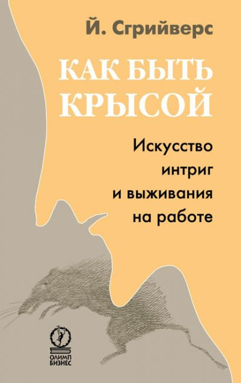

0
стр. з
0
сторінок

Содержание
ПредисловиеГлава 1. Добро пожаловать в канализацию Интеллектуальный бред Появление Краткое путешествие по канализацииПроверкаНа аренеДевять источников властиПриемы и шагиШирокая панорамаНа волнах традицииЭпилогМеры предосторожностиПредупреждение о случайном совпаденииГлава 2. Проверка ВысказыванияМне действительно нравится участвовать в политических играх нашей компанииЯ всегда точно оцениваю выгоду, связанную с моей работойЯ знаю, как действует «придворная верхушка» моей компанииЯ умею задавать вопросы и вести допросЯ всегда знаю, куда иду. Я знаю мои целиЯ всегда планирую на три шага впередЯ точно знаю, какими источниками власти можно воспользоватьсяЯ часто открыто говорю о том, что знаю и чувствуюЯ всегда ищу в другом человеке слабое местоЯ боюсь проигратьМне не нравится политика офисаЯ ненавижу плодить жертвыЦель оправдывает средства Сумма балловГлава 3. На арене Я на арене? Индикаторы рингаДвусмысленные цели?Противоречащие интересы?Различия в ценностях?Грядут изменения?Непредсказуемость?Призраки прошлого?Доверительность?Крысы на борту?Я откровенен в том, что делаю?Испытываю ли неприятное чувство? Арена Проверка интересовЗаданиеПолучение денегПрофессиональное развитиеВесельеСтатус и престижБезопасность и надежностьЛичная жизньВластьВраг моего врага…Любовь и ненависть в культурно-развлекательном центреГлава 4. Источники власти Сила монополииТыловые запасыЗнание, эрудиция и опытБезопасность Дыхание структурыВключение или исключение Власть помощи Технология Формализм Оружие телаМощьПолВозрастЦифры «Всевидящее око»РазведкаОценкаСамокоррекция Работа с сетьюТипы сетейСвязи МагияАрхитектураСпектаклиГлава 5. Приемы и шагиРепертуар приемов Как вертеть другим человекомВзяткаОтсекание путей к отступлениюИспользование слабостиОскорблениеПодрывная деятельность Борьба чужими рукамиВыбор фронтовСбор доказательствПревращение в жертвуУтечки и слухиЛоббирование Вы сами как инструментПравдивая ложьСоздание репутацииНепредсказуемостьЗаметание следовЗнание самого себяГлава 6. Игра Переход от честности к гадствуПервоначальная дилемма Степени гадства Начальный гамбитОценка ситуацииРазличие между «хорошими» и «истинными» целямиПреодоление сопротивления Середина ИгрыИнициатива и направлениеСпешить и задерживатьОркестровкаВезение-невезениеНетерпеливость, трусость и усталость от борьбыНетерпеливостьТрусостьУсталость от борьбы Конец Игры Победа и поражениеГлава 7. На волнах традиции Размышления о власти Борьба при помощи слов и образов Сокращение вариантов Развитие мастерства Удаление грязи Это борьбаСоциальные зависимостиБорьба за выживание.БытиеГлава 8. ЭпилогСноскиДополнительная информация о книге
И таким образом, о, всевидящий, искусство – лишь тропа и шаг моей воли: воистину, моя воля к власти идет по стопам твоей воли к истине!
Фридрих Ницше. «Так говорил Заратустра»
Эти два дара сосуществуют вместе; один из них отдельно великодушно служит для того, чтобы переделать деяния прошлого, «грехи» которого нависают как Дамоклов меч над каждым новым поколением; а второй, сочетаясь с обещаниями, служит для воздвижения в океане неопределенности, которым по определению является будущее, островков безопасности, без которых в отношениях между людьми было бы невозможно развитие, не говоря уже о продолжительности.
Ханна Арендт. «Состояние человека»
Всякое сходство с реально существующими людьми или организациями – не более чем случайное совпадение. Если вы узнали себя в какой-то из рассказанных здесь историй, не беспокоитесь: она о ком-то другом.
Предисловие
Мне было 25 лет, когда я принял решение провести первую половину моей карьеры в пылу баталий, а вторую – в тишине и спокойствии размышлений. Я только что продрался через первую половину и счел данную книгу подходящим завершающим аккордом. Это типичная сборная солянка: местами автобиографическая, местами практическая; иногда критическая, иногда язвительная; где-то устремленная в будущее.
Подчас меня спрашивают, не было ли у меня несчастного детства, не травмирован ли я своей работой и не является ли именно это объяснением, почему я читаю лекции о грязных приемах, используемых в организациях. Ни то ни другое неверно. У меня было счастливое детство, и я не был травмирован. Каждый, кто внимательно прочитает эту книгу, поймет, что побуждало меня. Для этого не требуется научная степень по психологии.
Мне хотелось бы поблагодарить многих людей, поделившихся со мной тем, как они использовали все эти грязные приемы, взятые в качестве модели для создания в моей книге портрета крысы. В течение года я беседовал с несколькими людьми, признавшимися мне в их «гадстве». Я обещал сохранить анонимность и по этой причине не называю их имен, но искренне благодарю всех за откровенность.
Кроме того, мне хотелось бы сказать «спасибо» Хансу Янссену. Он постоянно воодушевлял меня как на чтение лекций, так и на написание этой книги. Он обеспечил меня нужными связями, а великолепное человеческое чутье подсказывало ему, как справляться с моими капризами. Эту книгу я писал в Германии. Я жил в горах, вблизи от провинциального городка Берхтесгадена, в местечке, далеком от цивилизации, где компьютером даже и не пахнет (non-PC), а связаться с миром можно, пожалуй, лишь по сотовому телефону. В подобных местах невольно задумываешься о том, на какие расстояния способны перемещаться некоторые крысы. Моя хозяйка Ингрид Хеллмисс знала, как подбодрить меня добрым словом и куском сверхсдобного Torte[1]. И наконец, я хотел бы выразить благодарность моему другу Петеру Хайстеркампу за невероятное терпение, проявленное им, когда голова моя витала в облаках и я так увлекался, что забывал обо всем и не слушал его истории, думая о своем, и совершенно игнорировал работу по дому. Эта книга никогда не была бы написана без его терпения.
Йооп Сгрийверс, Амстердам, лето 2004 г.
Глава 1. Добро пожаловать в канализацию
Я не вполне уверен, стоит ли писать это письмо. С одной стороны, я убежден, что в наше время совершенно необходимо рассказать вам об игре в борьбу за власть, которая идет в организациях. С другой стороны, не хочу, чтобы ко мне относились как к жестокому консультанту, мстительному наблюдателю или циничному прагматику. В конце концов, я просто человек и хотел бы, чтобы меня считали не менее этичным, чем остальных. Но, тем не менее, собираюсь обсуждать поступки (поведение), которые люди называют «сумасбродными», «оскорбительными», «убийственными» и «издевательскими».
Мы будем применять на практике искусство тайно вредить боссу, оказывать сопротивление всем этим менеджерам-соглядатаям с неправомерно высокой зарплатой, которые следят за каждым вашим движением, а также рассмотрим способы «обойти» коллег и сотрудниние, чем простое «разве это не ужасно?» деревенских сплетен.
Таким образом, как бы ни были соблазнительны слухи, я не собираюсь участвовать в этом. Если вы ищете грязные истории о крупных компаниях со злобными и нечистоплотными руководителями, должен вас разочаровать: я не могу предложить вам ничего подобного. Возможно, вам стоит подписаться на какой-нибудь глянцевый журнал о бизнесе или купить одну из дешевых бульварных книжонок, в которых подъем и падение крупной корпорации описываются на манер греческой трагедии. В подобных книгах полно драматизма и напряжения. Все и вся смакуется в мельчайших деталях. Общий тон задают обязательные ингредиенты: нож в спину и предательство. Увлекательно, не так ли?
В моем письме нет скандалов и известных имен, нет откровений и expose[2]. Это сделано намеренно, потому что меня больше интересовали правила окольных путей, азбука порочности, структура вероломства. Сенсационность слишком сильно отвлекала бы от рассматриваемых проблем.
Второй причиной, для того чтобы пристально взглянуть на гадство, могло быть глубокое и доставляющее удовлетворение ощущение самобичевания. Только представьте книгу, в которой страница за страницей корпоративная интрига раскрывается во всем ее коварстве и, с регулярностью метронома, факты перемежаются обвинениями: вина, люди, вина, поступок, вина. Я этого не вынесу!
По какой причине? Самобичеватель тщательно отслеживает, что является правильным, а что нет. И что еще хуже, он точно знает, где проходит граница между хорошим и плохим, где кончается корпоративное единство и начинается гадство. Такие люди презирают «приемы», «смертельные удары» и «мальчиков для битья» – не важно, пользуются они этим сами или кто-то другой. Само-бичеватели не хотят пачкать руки, что иногда бывает неизбежно в царстве менеджмента. А так как у них фобия на грязь, они хотят очистить всех и вся вокруг себя.
Самобичеватели не обвиняют других людей, они винят себя. Они одиноко стоят в собственноручно устроенной заводи лицом к выдвинутым самим себе обвинениям и тайно восхищаются грязными приемами, свержениями с трона, шантажом и жестокостью. Будем честными: в действительности никому не удается всегда оставаться с чистыми руками. Самобичеватель постоянно уличает себя.
Если бы мне пришлось писать письмо о гадстве в таком ключе, то получился бы скучный, субъективный документ. Так что здесь вы не найдете обвинений. Никого не судят, никто не устанавливает стандарты.
Теперь рассмотрим третью возможную причину. О ней меня спрашивают многие слушатели, как только я начинаю читать мой курс «Как стать крысой». Да. Это так. Я уже читаю лекции на эту тему. Так вот, они часто говорят: «Я здесь, потому что хочу научиться распознавать то, что происходит, и предпринимать шаги, чтобы избежать этого».
Идиоты! Их извиняющиеся лица все еще стоят перед моим взором. Красные пылающие щеки, потеющие подмышки и нервное хихиканье – все это точно указывает на то, о чем они хотели спросить в действительности. Вы надеетесь на чудо, которое направит их слова в другое русло и они произнесут что-то вроде: «Я действительно хочу сделать моего босса», «Я действительно домогаюсь именно этого» или «Я сделаю все, да, все, чтобы сорвать планы той команды». Вы надеетесь на чудо Господне, на одурманивающий аромат злобы, вкус мщения, жажду унижения, но с их уст срываются такие правильные слова: «Я хочу быть способным распознать это и предпринять шаги, чтобы избежать этого». И они всегда так счастливы! Счастливы! Редко можно увидеть таких испуганных людей настолько счастливыми, когда они получают желаемый ответ. Потому что такой ответ ставит их вне подозрений. Они вне огневого рубежа.
На самом деле они пытаются сказать, что не желают иметь ничего общего со всей этой грязью, а хотят выучить как можно больше приемов для укрепления линии обороны. Они полагают, что, сделав это, сохранят свою честность и уменьшат вероятность надувательства.
Если вы ищете подобную книгу, ищите ее в другом месте. Могу порекомендовать массу книг из серии «Помоги себе сам», в которых рассказывается, как поладить с боссом. В них приводятся характеристики руководителей и советы, как держаться от них на расстоянии вытянутой руки. Часто это лишь плохо замаскированные учебники по выработке уверенности в себе.
В моем письме я намерен пойти гораздо дальше. Я не хочу, чтобы вы продолжали оставаться жертвой, а убеждаю вас опуститься в грязь по доброй воле. Почему бы вам не стать боссом из Преисподней? Таким, который постоянно все просчитывает, оценивает шансы и возможности и изящно обходит любые ловушки? Таким, который готов оттолкнуть нижестоящих и присосаться к вышестоящим при первой возможности?
Научное исследование – вот веская причина, чтобы долго и пристально вглядываться в грубость, жестокость и притворство. Наш интерес может быть чисто научным. Мы лишь восхищаемся темной стороной человека и человечества и страстно желаем понять, объяснить и предсказать эту темную сторону. Разве не так?
Нам бы хотелось создать нейтральный словарь для описания и упорядочения характерных черт, которые мы раскроем. Нейтральный, потому что, будучи научными наблюдателями и беспристрастными зрителями, мы хотим обозначить поведение homo sapiens, и наши предпочтения или порицания не играют никакой роли. Мы держимся на определенной дистанции от повседневного языка, так как он обременен эмоциями, опытом и критикой. Так мы сможем наблюдать порочных менеджеров и их работников в привычной среде обитания – в их организациях, – чтобы выяснить, при каких обстоятельствах, какая форма грубости, каким человеком воспринимается и до какой степени.
Мы пытаемся определить закономерности их политического поведения. Назовем эти закономерности «законами». Пример? Все менеджеры, даже самые милые и симпатичные, в конечном счете, ведут себя как придурки. Причина такого поведения является частью «неписаного» правила поведения, которого придерживается менеджер. Естественно, мы выбираем нейтральные или научные термины и описываем законы следующим образом: «Менеджеры отдают приоритет интересам организации в тех ситуациях, когда возникает конфликт интересов. Причина такой расстановки приоритетов кроется в самой роли тех, кто осознает свою функцию лидера».
На самом деле в данном научном подходе нет ничего плохого. Совсем наоборот. Нейтрализация языка и усиление строгого контроля над субъективностью и личными предпочтениями обнажают вещи, которые в противном случае остались бы скрытыми. Нет, все идет наперекосяк, когда люди – профессионалы – используют такой научный язык в их повседневном окружении. Тогда возникает интеллектуальный бред.
Интеллектуальный бред
Именно интеллектуальный бред является истинной причиной того, что нам следует заняться гадством так, как мы это делаем. И это требует некоторых объяснений.
Как я уже говорил, одна из самых больших наших ошибок – это использование научного жаргона для описания того, как мы устраиваем «веселую жизнь» боссу и избавляемся от коллег. В этом случае мы попадаем в ту же самую яму, в которую угодили многие профессионалы, когда они наслаждались обучением в высшей школе, в университете или на бесчисленных курсах, где интенсивно учат использовать нейтральный словарь научных дисциплин.
Большая часть современного профессионального тренинга в основном заключается в языковом обучении. Профессионалы неожиданно начинают пользоваться такими терминами, как «модели», «поэтапные планы», «сходные характеристики», «планы действий», «исполнители», «проверки», «управленческие модели» и т.д. Подобное использование специального языка может быть благом и украшением для ученого, но часто становится проклятьем и выражением скудости языка для неспециалиста.
Объективный язык лишает действия этих людей всех эмоций и оттенков. Я хочу сказать, что они пользуются языком как наблюдатели для описания их действий в качестве участников. Они не мухи на стене, но активные участники социального сношения – о, простите, – люди с их противоречиями, страстями, горестями и страхами. И вам не следует пользоваться научным словарем при таких обстоятельствах. Вам надлежит применять язык заводских курилок, язык забегаловок, язык сплетен. Другими словами, язык, который вы используете дома, когда работа вас достала. Именно этот язык.
Профессиональная и квазинаучная терминология вызвала дискуссии о том, что она придает респектабельный вид профессиональной деятельности, покрывает ее глянцем невинности, стирает кровь со стены, отмывает грязь с крыльца, сглаживает неровности изгибов. Профессиональное обучение есть не что иное, как обучение благопристойному словарю, обучение говорить вежливо и пользоваться вилкой и ножом.
Но означает ли это, что наши организации стали невероятно приличными? Избавились ли мы от всех следов гнусных и жестоких махинаций? Вбили ли в нас, наконец, Великий Процесс Очеловечивания?
Нет. На определенном этапе карьеры профессионалы понимают, что их охватил интеллектуальный бред. С одной стороны, у них имеется арсенал отработанных, вежливых профессиональных моделей; с другой – каждый день они сталкиваются с диаметрально противоположным. Раздаются скрежет и стенания, ничто ничему больше не соответствует. Это весьма болезненное положение, из которого многие пытаются вывернуться. Получается ли у них? Могут ли они действительно измениться? Нет, не могут.
Большинство профессионалов просто превращаются в шизофреников, ведущих двойную жизнь. Они используют милые словечки, которые хочет слышать компания. Они говорят об «открытости и честности», «преданности» и «синергии», зная, что руководство постоянно замалчивает важнейшую информацию, в забегаловках персонал произносит совсем иные слова, чем на собраниях, судачит о том, что все отгородились в своем маленьком мирке.
А дома они всем досаждают и всех достают. Они говорят то, что чувствуют в действительности: что их босс – свинья, менеджер отдела слишком самонадеян, служащие думают только о себе, а их отделяют годы и годы от требуемой финансовой надежности. Действительно, не хотел бы я поменяться местами с профессионалами, выбравшими такой путь.
Другая группа профессионалов превращается в жизнерадостных придурков, которые ищут интеллектуальное спасение в кипах книг из серии «Помоги себе сам», а также на дорогостоящих семинарах и конференциях. Они узнают все об исцеляющих приемах, которые при правильном применении способны сотворить чудо в их организациях. Учатся ставить цели, создавать планы действий и выполнять их, не вредя другим Или изучают новые типы людей с соответствующими характеристиками: «Если вы смиритесь с причудами другого человека, то увидите, как гладко пойдут дела». Или они выясняют, что у людей есть темные стороны, и начинают называть их «ловушками».
Поговорим о ханжестве: «Ваша оппортунистическая и садомазохистская жестокость – настоящая ловушка для вас». Только представьте всех этих менеджеров, несущих ответственность за миллионы евро, которые говорят: «У вас ловушка». Ха! Как же! Потом они узнают, что нужно помогать другим выбираться из ловушки и, чтобы сделать это, требуется сначала разобраться в собственных ловушках.
В конце концов, они прибегают к гуру, которые знают все о счастье: счастливые рабочие, счастливые боссы, счастливые клиенты, счастливые акционеры, счастливые банкиры. Нет больше недоверия, ударов в спину и манипуляций, стоит только пройти двенадцать, двадцать или пятьдесят ступеней. Вам и всем остальным.
М-да. Я не понимаю одного: если счастье так доступно и его можно методично добиться (по крайней мере, если мы поверим в предсказания), то почему я не вижу всего этого вокруг себя? Почему не встречал счастливого служащего? Честного менеджера? Улыбающегося коллегу, которым движет внутреннее убеждение? Нет, единственные счастливые люди – это Пророки, распространяющие Послание. Кто не был бы счастлив с таким количеством учеников и последователей?
Все было бы нормально, не зайди это так далеко. Если бы Пророки были просто шарлатанами. Но ситуация гораздо серьезнее, чем мы можем представить. Их методы не только не эффективны, они приносят вред. Они увеличивают боль. Пропасть становится шире. И все заканчивается хуже некуда.
Есть только один способ – сделать бред приемлемым. Потому что мы никогда не сможем полностью выбраться из того болезненного состояния, в котором оказались. А решение простое, очень простое. Начиная с сегодняшнего дня, мы перестаем пропускать повседневную действительность через жернова приличий. Эти жернова не помогают, они ведут в никуда. В тупик. Нет, с этого момента мы будем использовать только нормальный язык. Язык зависти, жестокости и ненависти. Язык злобы, холодности и власти. Язык, который пленяет, унижает и растлевает. Язык негодяев, язык крыс!
Культурный язык – Нейтральный язык – Крысиный язык
Работающий руководитель – Менеджер – Босс
Наставничество лидерства – Демонстрация – Стоять за спиною
Воодушевлять – Мотивировать – Манипулировать
Коллега – Исполнитель – Ублюдок
Ловушка – Слабость – Грубость
Мотивация – Интерес – Наживаться на чужом кармане
Ориентированный на результат – Действенный – Доминирующий
Преданный идее – Выполняющий свою работу – Низкопоклонство
Методики – Действия – Грязные приемы
Поставленная задача – Бизнес-план – Чушь
Сила – Влияние – Власть
Вопрос – Проблема – Гадюшник
В этой книге мы попытаемся использовать язык негодяев, которых мы называем «оппортунистами», потому что они высчитывают, составляют планы и наносят удары. Это вызывает неприятные эмоции, сопротивление и неверие в то, что действительно существуют такие испорченные и оппортунистически настроенные люди. Да, и их множество.
Тогда объясните, почему именно это решение – именно оно, а не те два, которые вы отвергли, – делает менее болезненным разрыв между опытом и оздоровленным взглядом на нашу профессиональную деятельность, если результатом является такая смесь эмоций и реакций? Нет ли здесь противоречия?
Есть. Но только для тех, кто любит книги со счастливым концом и обман. Только они будут возражать, смущаться и бессознательно искать спасения в знакомых, милых словечках. Однако для тех, у кого хватит мужества счистить разросшуюся коросту и заглянуть демону компании прямо в глаза, кто осмелится сделать следующий шаг и вступить в ряды считающих себя крысами, – для них начнется новая игра, которая поднимет их на новый уровень восприятия. Они обретут успокаивающее снадобье, которое вытянет гной интеллектуального бреда. В моем письме я предлагаю вам холодные компрессы, повязки и теплые одеяла.
Обсудив вопрос «как быть крысой?», мы преодолеем разрыв между милыми словечками и каждодневной деятельностью. Это является главной причиной написания данной книги. Однако появление крысы – это совершенно другая история.
Появление
Несколько лет назад я участвовал в крупномасштабной реорганизации среднего и высшего профессионального обучения. Она включала введение новых методов обучения, новых материалов, новых форм администрирования, объединений и альтернативных способов правительственного финансирования. Я исполнял роль руководителя проекта. Это означало, что мне приходилось часами сидеть за столом с заведующими, директорами колледжей, методистами, менеджерами по подбору кадров и специалистами по связям с общественностью, пытаясь направить беседу в продуктивное русло.
За это время я наговорил по телефону на астрономическую сумму и выпил бессчетное количество чашек кофе. Вскоре я понял, что все «открыты», как замурованные устрицы, и лично участвуют в повседневных делах не больше, чем акционеры участвуют в делах рабочих. Все пытались смыться под любым предлогом: личное расписание, неоплаченный счет. А препирательства были исключительно дружелюбными.
Помню, как я имел дело с одним директором школы. Ему предстояло решить вопрос о слиянии с другой школой, и он тщательно выбирал из трех потенциальных «невест», чтобы заключить наиболее выгодный «брак». В этом не было ничего плохого. Но потом я обнаружил, что этот тип был заинтересован только в одном: в получении самой лучшей, вернее, самой высокой, должности в новой организации. В этом также не было ничего плохого.
Так что же делало этого человека крысой? Почему он стал примером для нашей инструкции? Он внимательно оценивал «приданое», которое ему предстояло заплатить. В конце одной из наших встреч, в момент беспечности, он сказал мне:
– Йооп, тогда я буду ректором. И я согласился с ними, что придется избавиться от половины моих сотрудников. После этого мы объединимся. Это сэкономит массу денег. Теперь я легко избавлюсь от них – от ненужного балласта. В других школах слишком много сотрудников. Если я приведу своих людей, то ситуация ста нет просто невозможной. Поэтому в обмен я хочу должность ректора. Все зависит от них: либо я привожу всех с собой и занимаю незначительную должность, либо более дешевая альтернатива и доходное место для меня. Жизнь – это всегда выбор.
Да, жизнь – это всегда выбор. Я ехал домой со смешанными чувствами. Меня восхищала хитрая расчетливость, злила собственная наивность и мучило неверие в то, что такое возможно… Думаю, именно тогда я впервые прошептал: «Ну и крыса! Потрясающе. Такие люди гораздо интереснее, чем все эти занудные советники, которые ходят по организациям и проповедуют корпоративное спасение». Я встречал еще больших крыс. Их легко заметить натренированным взглядом.
Однажды я отправился на ознакомительную встречу по поводу новой работы. В полдень того же дня я беседовал с человеком, который пристал ко мне с ножом к горлу. Он хотел то, он хотел это. Адреналин все еще пульсировал в моих венах, когда я в великой спешке прибыл в отдел для знакомства с моими будущими коллегами. Когда они спросили меня, чем я занимался в последнее время, я мог ответить только:
– Я имел дело с крысами. С крысами всех форм и размеров. Мужчинами-крысами, женщинами-крысами. Хорошими крысами и злобными крысами. А знаете, какая между ними разница?
Молчание.
– Нет? Хорошую крысу распознать невозможно. Вы можете узнать только плохую крысу. Хорошая крыса никогда не распространяется о своих приемах и нанесенных мастерских ударах. Я – плохая крыса. Крысы выглядят, как все остальные. У них нет странных наростов на голове или шрамов на щеках. Они похожи на обычных мам и пап, заботящихся о своих детях в уютных загородных домах. Посмотрите на тех, кто сидит рядом с вами. Они могут быть крысами. Они могут вынашивать злобые планы, замышлять против вас, против любого другого.
Мои коллеги переглянулись, посмотрели на меня и рассмеялись.
Именно тогда я подумал, что мне нужно читать об этом лекции под названием «Как быть крысой» и рассказывать обо всех тактических приемах и грязных трюках, которые использует крыса. Но прошло еще два года, прежде чем я накопил достаточно мужества, времени и желания, чтобы заняться разработкой такого курса.
Однажды, когда дела шли ни шатко ни валко, я сидел за письменным столом и думал: «Настало время заняться планом лекций». Я открыл мой ноутбук, создал новый документ, который назвал «План лекций о крысах», и начал, как и подобает хорошему лектору, составлять список задач: в конце курса слушатель должен быть способен анализировать места действия, выбирать крысиные методы и применять их…
В этот момент зазвонил телефон.
– Это М. из Университета X. Я звоню, чтобы спросить: не хотели бы вы выступить на семинаре, который мы организуем для выпускников? Они чувствуют, что профессоры прижали их к ногтю и используют. Согласны поддержать их?
«Они хотят, чтобы я преподавал, – подумал я. – Они хотят, чтобы я витийствовал о j'accuse[3]. Какое совпадение, что в данный момент я обдумывал курс лекций о политическом манипулировании в компаниях!»
– М., – ответил я, – не собираюсь я стонать и скрежетать зубами вместе с группой студентов. Это только утвердит их в роли жертвы. А от этого никому не будет лучше. Но я только что составил курс лекций (чистой воды ложь), который называется «Как быть крысой». Разве это не будет интересно выпускникам? Тогда вы сможете обучить их тонкому искусству вредить и изводить их профессоров и кураторов. Как вам это? Кстати, вы знаете, как сделать мальчика для битья? Я могу рассказать и об этом.
М. рассмеялся и, кажется, заинтересовался. Мы приступили к обсуждению деловых вопросов. У меня было ровно четыре недели, чтобы все подготовить. После этого я отправился на юг и в течение трех вечеров обучал моих первых учеников тому, как жить в канализации. Тогда я еще не знал, что в будущем мне придется много путешествовать и читать лекции. И уж конечно, я не думал, что буду писать вам письмо об этом. Рассказывать вам все о крысах и их многочисленных личинах.
Краткое путешествие по канализации
Далее мы подробно рассмотрим некоторые вопросы. Для вашего удобства я сделаю их краткий обзор.
Проверка
В начале письма содержится тест, проверка. Большинство профессионалов знакомы с подобным самотестированием. Это что-то вроде: «Каким лидером я являюсь?»; «Что я за личность?»; «Имеются ли у меня задатки, необходимые для достижения успеха?».
Мое письмо было бы неполным без такого рода теста, поэтому в следующей части письма я предоставлю вам массу возможностей. Конечно, вы оцените этот тест как высоконаучный и тщательно «выверенный». Поэтому вы сможете полагаться на результаты. Еще важнее то, что результаты представлены в виде «формулировок», которые отражают истинные качества крысы. Это будет обсуждено более подробно.
На арене
Некоторые немного разочарованы тем, что крыса тратит так много времени на наблюдение и так мало – на непосредственно «действие». Но именно так и должно быть. Хорошая крыса атакует не более трех раз в месяц, каждый раз тратя на это не более пяти минут. Но она знает, что при нападении победа ей гарантирована. И она празднует победу молча, никогда не рассказывая о ней другим.
В этой части мы рассмотрим арены организаций: поля сражений, боксерские ринги. Те, кто умеет это делать, подготовлены лучше, чем их противники. Они могут вынашивать свои планы. Самое трудное в этом – подобрать нужных исполнителей. Что движет людьми, которые служат в компании, каких выгод они ищут?
И если после этой части вы будете продолжать думать, что все еще ничего не сможете сделать, что у вас нет власти, то вам следует забыть об оставшейся части письма.
Девять источников власти
Власть есть у всех. И у всех имеются источники власти. К сожалению, не все способны с одинаковой легкостью пользоваться этими источниками. Искусство заключается в том, чтобы прорываться вперед с той властью, которая у вас уже есть, и получить как можно больше той власти, которой у вас пока нет.
Мы бросим взгляд на силу монополий. Крайне рекомендуется. А как насчет тех возможностей, которые предлагают сами организации и их методы работы? Вы получите больше способов раздражать, чем можете себе представить. И не надо недооценивать ваше тело: в нем также много власти. Если хотите углубиться во все это, тогда следует рассмотреть «подавление при помощи тотальной слежки». Это уникальный источник различных выгод и удивительных возможностей. Я также расскажу об общедоступных источниках власти: друзьях, структуре. А закончу искусством перевоплощения, потому что тот, кто не умеет очаровывать, никогда не преуспеет на арене.
Приемы и шаги
Со времен Макиавелли создавались бесчисленные своды правил, в которых детально расписывались золотые «можно» и «нельзя» для безжалостного правителя. В моем письме из сточной канавы мы обсудим наиболее важные тактические приемы, используемые крысами.
Мы займемся необходимостью скрывать свою истинную природу. Хорошую крысу невозможно распознать. Мы знаем, что это также справедливо в отношении террористов. Большинство злонамеренных людей ведут нормальный и респектабельный образ жизни, избавляясь от любой черты характера, которая способна показать, кто они на самом деле, и проявляя эти черты неожиданно для пятиминутного нападения…
Мы также рассмотрим микротактики крысы, которые можно использовать сиюминутно. Чтобы вы ощутили вкус того, что вас ожидает, мы поговорим о том, как провести в отделе линию фронта и как лучше натравить одного коллегу на другого. Мы будем говорить о тактике подрывной деятельности. Как люди это делают? Как избавиться от менеджера? Как саботировать босса, который действует вам на нервы? Читайте дальше – и вы будете поражены тем, насколько просты эти приемы. Многое будет рассказано о человеке, которым можно манипулировать.
Вы знаете, что наивысшим уровнем гадства является умение сделать себя непредсказуемым? Чтобы ни ваш босс, ни ваши коллеги никогда не были уверены, в какую сторону вы повернете? Это сводит их с ума и дает вам шанс превратить ошибки сотрудников в ваше преимущество. На примере этой игры я объясню бюрократическую работу крысы.
Большая часть работы крысы заключается в использовании слабости других людей ради собственной выгоды. Это то, чем крыса отличается от терапевта. Последний должен манипулировать вами с вашего согласия. Но мы не будем рассматривать это сейчас. Если вы хотите стать хорошей крысой, то должны научиться вынюхивать тайные желания и страхи вашего противника.
Грасиан, иезуитский священник при испанском дворе, четыре столетия назад писал о том, что тиски для больших пальцев можно подобрать по размеру для каждого. И это правда. У каждого человека есть слабое место, каприз, скверная привычка, должок, ребяческие эмоции или глубинный страх – что-то, чем можно умело воспользоваться, разрушая его автономность, делая зависимым от внешнего мира. Если вы можете стать этим внешним миром, то он у вас в руках, в вашей власти. Контролировать слабость, контролировать страх – это не так сложно. Нужно только следовать двум правилам.
Широкая панорама
Есть ли что-то более приятное, чем шаг за шагом двигаться к намеченной цели: взять верх над компанией, переиграть ваших коллег-конкурентов, низвергнуть босса или отнять у него инициативу? Но подобные вещи требуют полного знания тонкого искусства тайных заговоров и конспирации.
Вам нужно решить, являетесь ли вы пассивным или активным. Вы должны обдумать начальный гамбит, середину игры, момент истины и финальный удар, решить, с какой карты ходить и когда, какие карты вам все еще нужны. Планирование времени является самой трудной частью игры крысы.
Если вы действительно хотите участвовать в некой тонкой баталии в вашей компании, в борьбе не на жизнь, а на смерть, то неизбежно настанет момент истины. И тогда вам остается надеяться, что вы спланировали все, до последней детали, ничего не упустили, предвидели каждое движение и подготовили самый умный ход, который когда-либо был разыгран.
И, тем не менее, вы можете проиграть. Ваша хватка была недостаточно крепка. Вы были недостаточно хитры. Или вам изменила удача. Что тогда? Обладаете ли вы noblesse oblige[4] побежденной крысы? Осмелитесь ли вы повернуться к компании спиной, отказаться от имеющихся роскоши и положения с перспективой продавать номера «The Big Issue»[5] бывшим коллегам и ограничить приятные поездки в «Sainsbury»[6] за покупками? Если такое будущее вас не волнует, тогда вы будете сильны в крысиной игре.
Но обещайте мне одну вещь: если вы проиграете битву за что-то действительно важное, обязательно уходите. Смиритесь и начните снова, но никогда не оставайтесь. Потому что, если вы останетесь, победители будут обращаться с вами, как с грязью, приставшей к их подошвам.
На волнах традиции
В этом разделе мы рассмотрим некоторые ключевые моменты в истории власти. Все приемы, которые применяются сегодня, являются частью давней традиции, и мне кажется, что профессионалам важно знать корни этой традиции. Но есть еще кое-что.
Во-первых, знание уменьшает одиночество. Вы начинаете понимать, что другие решали похожие задачи и сформулировали свои решения.
Во-вторых, традиция – это набор плодотворных и бесплодных мыслей, идей и методов. Вы сталкиваетесь с ними в поговорках, притчах, баснях, метафорах, ужастиках и тому подобном. Вы всегда являетесь частью коллективного умения или неумения. Традиция сравнима с Интернетом: там вы можете найти все, уже зрелое и готовое к употреблению. Знание делает вас свободным. Вы можете отвергать, принимать или повторно использовать традицию, но никогда не сможете сделать вид, что ее не существует.
И, наконец, знание своих корней придает гибкость вашим политическим интригам. Вы находите постоянно возрастающее количество альтернативных ходов. Более чем достаточно причин для короткого разговора о примерах политических схваток.
Эпилог
В конце я написал короткий эпилог. В нем я обобщил содержание моего письма. Именно так и будет рассказана эта история.
Внимание
Несколько слов о структуре этого письма из сточной канавы, прежде чем вы перейдете к самотестированию.
Меры предосторожности
Читая эту книгу, вы познакомитесь с разными людьми: отвратительным боссом, мерзавцем-коллегой, доносчиком. Если у вас поднимется уровень адреналина, значит, все в порядке. Так и должно быть. Физическое возбуждение жизненно важно. В конце концов, Шопенгауэр определял тело человека как вместилище воли.
Тем не менее, нельзя позволить захлестнуть себя уязвленной гордости, жажде разрушения или животной агрессии. Это может быть опасно. Интеллект постоянно должен все контролировать. Именно поэтому следует принять меры предосторожности: делайте регулярные перерывы, чтобы в одиночестве обдумать вашу ситуацию; сократите переписку по электронной почте и болтовню по мобильнику; найдите приятеля, с которым можно составлять и тайно вынашивать ваши планы; развивайте в себе тонкое чувство юмора, самоуничижения и склонность к преувеличению. Загородный дом – это прекрасный способ борьбы с темными сторонами, как в других людях, так и в себе самом. Лично я немало преуспел в этом направлении.
Предупреждение о случайном совпадении
В течение многих лет люди признавались мне в их больших и малых интригах, о которых я расскажу в моем письме, когда сочту нужным. Но я сохранил анонимность и сделал их неопределяемыми, чтобы защитить интересы тех, кто мне доверился. И как я уже объяснял, меня больше интересует структура гадства, чем раскрытие очередного скандала. Хотя, должен признаться, временами было трудно удержаться от соблазна. Однако всякое сходство с реально существующими менеджерами, управляющими, представителями профсоюзов, акционерами и подонками не имеет отношения ни к одному человеку, живому или мертвому, и является случайным совпадением.
Я полагаю, что вы – душевно здоровый человек, который достаточно хорошо знает себя и полностью отдает отчет в том, чего он хочет, а чего нет. Поэтому вы должны взять на себя всю ответственность за любые действия, которые можете предпринять в результате прочтения этой книги. Автор не может считаться ответственным за эти действия. Не утруждайте себя и не жалуйтесь мне на то, что вас уволили, преследуют по суду или ваш муж вышвырнул вас из дома. Я всегда буду утверждать, что эта книга никогда не претендовала на серьезность.
Добро пожаловать в канализацию.
Глава 2. Проверка
После краткого обзора, сделанного в предыдущей главе, настало время познакомиться с главной темой. Пора представить то, чего нельзя больше откладывать, ведь я вполне понимаю все причины, по которым вы хотите, чтобы я сделал именно это.
В конце концов, очень неприятно, разглядывая себя в зеркале, прийти к выводу, что вы вовсе не невинное существо или, что, возможно, еще хуже, в действительности вы – равнодушный негодяй с недобрыми замыслами. Образ себя самого, так тщательно создаваемый годами, – я умный, я честный – может претерпеть самые радикальные изменения.
Однако успокойтесь: для большинства людей страх жить во лжи непереносимее боли от лет, прожитых с осознанием ужасной правды. Именно поэтому тесты, проверки и другие подобные методы оценки пользуются такой невероятной популярностью. И вот, чтобы удовлетворить эту потребность, я разработал тест, который теперь прошу вас пройти. Добровольно.
Мой тест довольно простой Я составил его на основе тех тестов, которые регулярно публикуются в глянцевых журналах. Вы знакомы с ними, тесты, оценивающие доминирующую черту характера, определяющие вашу склонность к лидерству, устанавливающие, к какому типу личности вы относитесь, являетесь ли прирожденным консультантом, идеальным любовником и тд. и т.п.
Хотя большинство таких тестов имеют значение не больше, чем гороскопы или гадание на картах таро, то есть вообще никакого, вы увидите, что мои тест совершенно иной, и он гораздо лучше С его помощью вы откроете в себе то, что так долго искали, – осознание вашего гадства.
Несколько инструкций для тех, кто ранее был способен устоять перед соблазном проведения подобных тестов:
- внимательно прочитайте высказывание,
- быстро, опираясь на интуицию, отвечайте «да» или «нет»,
- последовательно сложите баллы, полученные за каждый ответ;
- подведите общий итог,
- прочитайте в конце этой главы, к какому типу вы относитесь
Тест. А: «да» В: «нет»
- Мне действительно нравится участвовать в политических играх нашей компании: 2 0
- Я всегда точно оцениваю выгоду, связанную с моей работой: 2 1
- Я знаю, как действует «придворная верхушка» моей компании: 2 1
- Я умею задавать вопросы и вести допрос: 3 1
- Я всегда знаю, куда иду. Я знаю мои цели: 2 0
- Я всегда планирую на три шага вперед: 3 1
- Я точно знаю, какими источниками власти можно воспользоваться: 2 1
- Я часто открыто говорю о том, что знаю и чувствую: 0 3
- Я всегда ищу в другом человеке слабое место: 4 1
- Я боюсь проиграть: 1 3
- Мне не нравится политика офиса. Она должна быть открытой и честной: 1 3
- Я ненавижу плодить жертвы: 0 2
- Цель оправдывает средства: 2 1
Общее количество баллов А В
Сумма А + В
Высказывания
Давайте пройдемся по всем высказываниям, приведенным в тесте, и посмотрим, что соответствует самой сущности заговорщика и как это может способствовать победе или поражению. Ведь нам следует промариновать себя во всех этих эликсирах оппортунистической мудрости, чтобы впитать их насыщенный, глубокий аромат.
Мне действительно нравится участвовать в политических играх нашей компании
Занимая должность менеджера компании ICT и отвечая за деятельность 25 программистов, я часто беседовал с ними об их амбициях, профессии и работе, которую они выполняли для клиентов Большинство из них имели стаж работы около трех лет, уже внедрились в корпоративную жизнь.
Когда я спрашивал их, кем они хотели бы стать, большинство отвечали, что менеджерами, меньшая часть – консультантами и лишь ничтожно малая часть ученых педантов говорили, что видят свое будущее в развитии технологии. А когда я спрашивал, что им больше всего не нравится в их работе, ответом номер один (вернее, номер один после ответа: «Командировки») был следующий: «Все эти политические дрязги»
Те, кто находился наверху, то есть руководители, постоянно организовывали тайные заговоры, подсиживали друг друга, устраивали засады, активно защищали свои личные интересы и делали вид, что радеют за компанию всеми фибрами души Но стоило мне заметить, что менеджер значительную часть времени тратит именно на «все эти политические дрязги», что за это ему и платят, а политическое чутье является необходимым навыком или, в крайнем случае, составляет значительную часть самой сущности менеджера, так вот, стоило мне сказать об этом – они умолкали.
Иногда я замечал, как глаза одного из них загорались: до него доходило, что «все эти политические дрязги» являлись частью жизни и от нее можно было получать удовольствие. Но в большинстве случаев я видел те же скучные глаза, что и всегда. Думаю, дело – дрянь: они никогда не преуспеют в качестве крысы.
Каждый, кто поймет, что «все эти политические дрязги» являются частью жизни и способны доставлять удовольствие, начинает оттачивать глаз, экспериментировать и развивать чувствительность, жизненно необходимую для крысы.
Я всегда точно оцениваю выгоду, связанную с моей работой
Вы замечали, как судорожно реагируют люди на упоминание о выгоде, даже если это составляет неотъемлемую часть переговоров между работодателями и профсоюзами? Конечно, есть определенные области, в которых можно говорить о выгоде, но есть и другие, где этот вопрос остается за рамками. Это требует некоторого обсуждения с позиций причин и последствий для крысы.
Единственное объяснение, которое я могу дать, – это то, что компания хочет сохранить иллюзию самой себя как отважного батальона, марширующего вперед плечом к плечу, чтобы совместно захватить рынок. Я специально применяю военную терминологию, потому что именно такой язык любят использовать менеджеры. Они рассматривают свою компанию как боевую единицу, которая ради приближения победы избавилась от внутренних раздоров и соперничества.
Во многих компаниях можно наблюдать работу, направленную на усиление «общих» и «разделяемых» чувств, а также на искоренение междоусобных войн: «Мы именно такая компания», «Такова наша миссия», «Таковы наши культурные устои», «Таковы наши ценности». Если вам повезет, то вы получите симпатичную книжечку, состряпанную неким хитрым агентством по связям с общественностью или кем-то иным. Или вам даже пришлют футболку с логотипом, символизирующим саму суть единения.
Вся эта объединяющая риторика – есть не что иное, как расчетливый язык вежливости, затуманивающий видение разницы и сходства между «твоим» и «моим». Язык выгоды трезв и иногда вызывает замешательство, но он сводит отношения к сути: это – моя выгода, а это – твоя.
Здесь я хотел бы остановиться на одном наблюдении. Мы не должны позволять себе вновь возвращаться к застарелой «классовой войне», в которой босс всегда «плохой» парень, обманывающий всех подряд, а работник всегда «хороший», трусливо отползающий назад с зажатым между ног хвостом.
Большинство работников отдают себе полный отчет в своей выгоде: их положение и статус, количество денег на зимний спортивный отдых, удобный график работы, «конечное» положение, оплачиваемые обеды, небольшой отель на берегу моря, которым они хотят управлять, и хотя бы один выходной. В этом списке заметно отсутствие выгод, имеющих прямое отношение к компании.
Поэтому еще больше поражает, что работники стирают из своих мозгов эти «твое» и «мое», как только усаживаются за рабочие столы (естественно, после первоначального обмена сплетнями у кофейного аппарата). Они немедленно начинают нежиться в атмосфере лояльности компании, в тепле воображаемой заинтересованности боссов, менеджеров и главных администраторов.
Позвольте мне сказать одну вещь: крысы всегда полностью преданы своей собственной выгоде. Любые другие интересы – их коллег, друзей по профессии, боссов, акционеров или покупателей – имеют ценность лишь в той степени, в какой они соответствуют или нет их собственным интересам. Крысе абсолютно чужд любой симбиоз компании и работника.
Я знаю, как действует «придворная верхушка» моей компании
В любой компании любого размера (например, хотя бы с пятью сотрудниками) имеется группировка, которая обсуждает стратегию, ведет битву и распределяет трофеи. Каждая компания имеет собственную «придворную верхушку», или «двор». Это люди, сгрудившиеся вокруг центральной власти, словно фруктовые мушки, вьющиеся рядом с директорами, главными администраторами, основателями компании и основными акционерами. Придворные, с которыми власть имущие делятся некоторыми (если не всеми) своими проблемами.
Во избежание какого-либо недопонимания нужно заметить, что придворные не обязательно отражают формальную иерархию компании. Некто отдаленный от двора в определенный момент может быть поднят до «королевского» уровня и приглашен в тронный зал, чтобы взбить подушки, в то время как кто-то из вышестоящих может быть лишен права на конфиденциальность, просто потому что этот человек представляет угрозу для «монарха».
Двор характеризуется преданностью менеджменту и неспособностью выкинуть какой-нибудь фортель. В обмен на это он наделяется рядом привилегий, например: большей свободой, наградой, внутренней информацией и похвалой. В этом отношении двор современной корпоративной жизни мало отличается от придворных герцогов и приближенных во времена Макиавелли.
Вы можете с успехом использовать двор, если понимаете, как именно он работает. Приведем подробное описание некоторых функций.
Во-первых, «знать» компании – это органы чувств босса. Ни больше, ни меньше. Придворные наблюдают за тем, что происходит среди сотрудников, десятников и во внешнем мире. Все, что не попадает в ежемесячные информационные отчеты менеджеров (так называемая скрытая информация), сообщается придворными герцогами и графинями. В неформальных беседах, «споря» с боссом, подхватывая мысли и участвуя в наработке идей, они лелеют, убеждают и воодушевляют своих правителей и, при определенном стечении обстоятельств, вежливо и аккуратно противоречат им.
Во-вторых, знать – это собеседники, спарринг-партнеры. Именно им первоначально излагаются идеи, чтобы они могли либо отбросить их, либо пожелать им попутного ветра. Конечно же, предмет обсуждения меняется в зависимости от человека, но общая стандартная повестка дня состоит из следующих пунктов:
- управление компанией;
- приобретение и продажа акций;
- непокорный коллектив;
- боязнь работать в нескольких направлениях одновременно;
- введение глобальных изменений,
- сопротивление в организации
Если вы достигли положения доверенного лица, что случается довольно редко при работе на босса, то он будет обсуждать с вами такие свои проблемы
- Он больше не хочет быть боссом
- Почему до сих пор не сделал состояние?
- Как избавиться от директора?
Теперь вы понимаете, что «двор» – это неоценимый источник информации для каждого, кто хочет стать крысой
Вы можете спросить, как стать частью придворной верхушки, если еще к ней не принадлежите. Самый простои способ – «вылизать» себе путь в фавориты кого-то из нижних сословий двора. Ведь что больше всего нужно тому человеку? Правильно, свои собственный двор! Пусть даже очень маленький, состоящий из двух-трех человек
Будучи менеджером, я имел конфиденциальные беседы с двумя сотрудниками. Я позволил себе заиметь небольшой двор, создать свои глаза и уши в отделе, выбирать своих спарринг-партнеров, своих доверенных лиц. Ни один из них не отличался сарказмом или ворчливостью, они безропотно засучивали рукава и, что наиболее важно, искренне волновались о подъемах и падениях. В обмен на это они раньше других узнавали, какое задание будет у них и у остальных, наслаждались большей свободой в работе и получали возможности отличиться во время внутренних и общих собраний.
Я умею задавать вопросы и вести допрос
Вы наверняка знаете людей, которые всегда умудряются вытрясти из вас больше, чем вы хотели сказать. Эти люди подходят к вам с искренней или напускной невинностью, взламывают вашу оборону, скатываются в маленький обтекаемый шарик и позволяют вам говорить, изредка вставляя ободряющее замечание или понимающе кивая головой в награду за вашу откровенность. Именно эти люди должны стать для вас примером, потому что вам следует перенять их способность
Как вы определяете благородное искусство вести допрос, и почему оно является важной составляющей вооружения любого желающего верховодить? Сначала ответим на вторую часть вопроса. Хорошая крыса всегда собирает информацию. В ее голове уже имеются многие кусочки головоломки, и она жаждет закончить картинку – сложить все кусочки вместе и сказать «Ясно. Теперь я понимаю, во что они играют»
Документы, слухи, электронная почта, коридоры, доверенные лица – крыса использует все, аккумулируя свои идеи, сомнения, подозрения, а потом применяет свои методы, чтобы с невинным видом подтвердить или опровергнуть любые двусмысленности Она знает, что ищет и где это можно найти
Это то, чем всегда занимались и продолжают заниматься талантливые советники, дипломаты, послы и руководители. И если крыса точно не уверена в том, что ей необходимо узнать, то всегда может изобразить заинтересованность и заставить говорить другого человека
Умение вести допрос является простой способностью. Этому можно научиться весьма приятным способом, например в пивной. Но сначала я уточню методику
Самое важное – перестать использовать то, чему вас учили на тренинге по коммуникабельности, а именно прекратить слушать Это самая большая глупость, которую могли выдумать специалисты по общению Дело в том, что единственное, чего нельзя делать, – это слушать! Потому что 80% того, что говорят люди, не более чем упражнение их голосовых связок. Все, что вам необходимо, это обращать внимание на прилагательные, которые использует собеседник «Собрание было хаотичным». Предположим, кто-то сказал вам именно так. После этого нужно выведать у него все о прилагательном «хаотичное». А чего вам не надо делать, так это выяснять, чья вина была в том, что председатель плохо вел собрание либо повестка была составлена неудачно
Такой подход в корне неверен, потому что важная информация кроется в слове «хаотичное» Вы должны повторить это слово и превратить его в вопрос
– Хаотичным?
– Да, – ответит собеседник, – потому что те двое постоянно наскакивали друг на друга.
Таким образом, он раскроет то, что мы хотели узнать: обстановку за сценой, подтекст, скрытую повестку дня. Ходите в пивную каждый вечер в течение трех недель и всякий раз допрашивайте там кого-нибудь нового. Расспросите о юности, работе, сексуальной жизни, финансовом положении, но делайте это, акцентируя внимание на прилагательных. Вас поразит то, что вы узнаете за какие-то полчаса.
Я всегда знаю, куда иду. Я знаю мои цели
Вы можете сказать, что это утверждение говорит само за себя, и начать укорять меня за описание очевидного; вероятно, в данной части письма его лучше не обсуждать. Признаюсь, я в некотором замешательстве, так как не хочу докучать вам банальностями. Однако необходимо подчеркнуть, что вы должны ставить свои собственные цели вне зависимости от того, на какой сцене играете и чем именно занимаетесь.
Признайтесь, знаете ли вы действительно ваши цели, кроме как дотянуть до конца недели. Вы можете перечислить их не задумываясь? Вероятно, нет. Большинство профессионалов также не смогут этого сделать. У них отвисает челюсть, когда им задают этот вопрос.
Вам нужны цели, потому что они дают инструмент для определения стратегии и планирования тактики. Существует огромная разница между желанием быстро продвинуться по карьерной лестнице и желанием с наибольшей пользой провести время, если удастся пораньше уйти с работы. Ваша стратегия и ваши шаги будут разными. Если у вас нет целей, вам не имеет смысла быть крысой.
В настоящее время во многих компаниях поощряется составление работниками их ЛПР (личных планов развития), ИПР (индивидуальных планов развития) или ПКР (планов карьерного роста) Они посещают занятия по этому предмету, которые ведет какая-нибудь стерва из управления кадрами или вышколенный молокосос.
Запомните одно правило: ваши цели – ваши и только ваши, никто другой не имеет права знать о них. Ваш босс не откровенничает о своих целях. Я советую вам держать свои цели при себе и записывать в ЛПР только формальные пункты. Потому что эти ЛПР используются компанией для формулировки ее собственных целей, и совсем не обязательно, чтобы они совпадали с вашими. Более того, если вы слишком много говорите о своих целях, ваш противник сможет предварить ваши действия.
Знайте ваши цели. Говорите о них как можно меньше, за исключением случаев, когда это служит выполнению вашего плана. И уберите личное (Л) из ЛПР.
Я всегда планирую на три шага вперед
Каждый из современных профессионалов прошел тщательную подготовку в вопросах долгосрочной стратегии и изучил все о моделях и поэтапных планах. Однако большинство из них не способны думать дальше сегодняшней встречи за ленчем У них есть планы, но они редко способны объяснить, какое отношение они имеют к текущему климату или ситуации в компании.
Однако имеется нечто, что хороший политик способен сделать легко, – определить, какими будут три следующих этапа: что случится, если я сделаю это; а что предприму я, если кто-то другой сделает это, и что…? Хорошо известный метод «а что, если» подходит не только для анализа сценариев, он также поможет вам предрешить возможный исход битвы на арене.
Полагаю, многие профессионалы сочтут это затруднительным, хотя они и обладают интеллектуальными способностями, необходимыми для выработки поэтапного плана. Просто у них недостает воображения, чтобы представить, как может развиваться борьба за власть в создавшейся ситуации. Каждый, в ком аналитические способности соединяются с даром воображения, может получить явное преимущество в любой борьбе за власть.
Полезным методом, помогающим продумывать все на несколько шагов вперед, является разделение процесса борьбы на три этапа: начало, середину и конец. Каждое сражение, каждый удар, каждый заговор развиваются по этому образцу, и каждый этап обладает своей динамикой и выполняет определенные функции.
В начале игроки определяют цели и занимают наиболее выгодные стартовые позиции. Для середины игры характерно накопление максимального количества козырей, которые можно использовать в момент истины – в точке перехода середины игры в конец. Единственное, что остается, – это сама борьба. В начале нужно учитывать середину игры и удостовериться, что для окончания игры удары направлены в нужную сторону. Позже мы обсудим все это более подробно.
Я точно знаю, какими источниками власти можно воспользоваться
В современных компаниях редко можно встретить человека апатичного, обездвиженного, загнанного в ловушку и лишенного малейшего пространства для движения. Каждый сотрудник обладает источниками власти, которые помогают ему выполнять работу, и при желании он может заставить танцевать под свою дудку весь отдел и даже босса. Имеются примеры компаний, в которых благодаря бесхитростному маневрированию и пониманию источников власти сотрудники смогли покорить кажущиеся неприступными вершины менеджмента. Для этого они использовали слова, действия и эмоциональную тиранию. В общем, у вас имеются два подручных источника власти: власть проволочек и власть структуры.
Сначала рассмотрим первый источник. Многие люди использовали его и, просчитав варианты, смогли предотвратить самые разнообразные катастрофы «на лужайке перед домом и на заднем дворе». Для этого нужно просто громко, звучно и без колебаний произнести: «Нет!».
Некоторые с успехом используют оружие проволочек, скрытое в законах и правилах. Пользуясь этим оружием, люди способны откладывать (иногда на годы) строительство нового туннеля или железнодорожной ветки. Другие проявляют большую изобретательность и сажают деревья в местах, предназначенных в будущем под подъездные пути. Или продают землю маленькими участками как можно большему числу людей в надежде, что процесс принудительной продажи вызовет непреодолимые проблемы. Некоторые откладывают прибытие поездов, в результате чего менеджеры не способны достичь поставленных целей, требующих строгой пунктуальности. Любой может воспользоваться властью проволочек, однако мне хочется подчеркнуть, что это не обязательно ведет к достижению поставленных целей.
Вам нужно кое-что большее. Вы также должны отыскать и приручить людей, которые станут частью вашей сети. Это автоматически приводит меня ко второму источнику власти, доступному для любого профессионала, а именно к сети – людям, с которыми вы знакомы внутри и за пределами компании. В ней вы узнаете самые последние новости, выявляете дураков, встречаете влиятельных людей, пожимаете руки и обнимаетесь с принимающими решения и черпаете вдохновение.
Самая всесильная женщина, которую я встречал в Голландии, обрела свою власть при помощи сети. В этом она была гениальна. Находясь на пике карьеры, она знала каждого и сидела за одним столом с ведущими функционерами, администраторами, артистами, бизнесменами и профсоюзными деятелями. Как ей это удалось? У нее был нюх на значимых людей, она могла набросить на себя мантию ранимости, что ценилось всеми. Она, кроме того, умела определять настоящую и будущую ценность каждого, что дано не всем.
Всякий, кто хочет чего-то достичь, обязан забить память своей электронной записной книжки до предела. Проволочки и работа с сетью – ключевые качества крысы.
Я часто открыто говорю о том, что знаю и чувствую
В большинстве книг о власти и политике молчание воспевается как благородная добродетель. В нашей культуре, проповедующей безусловную открытость и честность, пытающейся убедить нас, что именно от этого зависят бизнес и личный успех, понимание того, что следует говорить, а что нет (вовремя промолчать), является чем-то относящимся к прошлому.
Вам не нравится босс? Скажите ему об этом. Вам не нравится коллектив? Восстаньте против него. Ваш покупатель – омерзительный тип? Откройте ему это. Короли должны поступать по-королевски. Быть современным профессионалом означает, в том числе умение не дать сожрать себя изнутри.
Однако горький опыт многих профессионалов говорит о том, что лучше хранить молчание в отношении важнейших моментов. А результат можно наблюдать во многих организациях – это комедия открытого общения. Люди, следующие за своими эмоциями, открыто заявляющие о своих интересах, высказывающие недовольство ходом событий, обсуждающие свои тревоги в коридорах, курилках и даже дома, вскоре оказываются задвинутыми в дальний угол, потому что они осмелились говорить все как есть.
Сегодня существует множество организаций, которые гордо заявляют о своей открытости в ежегодных отчетах, трубят об этом на корпоративных презентациях и обклеивают стены яркими плакатами, как будто говорящими, что честность и открытость здесь вовсю приветствуются, а доверие прямо-таки культивируется. Бегите от этих компаний как от чумы! Потому что подобная демонстрация ценностей есть не что иное, как публичное проявление жажды того, чего нет, – честности и открытости. Вы попали туда, где опасно и рискованно демонстрировать свои мысли и чувства.
Теперь я просто процитирую Грасиана, испанского духовника. В его 148-м афоризме [см. «Карманный оракул…»] говорится:
Знай, что ты должен говорить, а что нет в присутствии других. Вот твое мерило как человека. Ни один другой вид деятельности человека не требует такого внимания, так как используется наиболее часто. Твои успех и неудача зависят от твоих слов[7].
Я всегда ищу в другом человеке слабое место
Хорошая крыса всегда учится развивать способность быстро создавать «психограмму» другого человека. Она, как психотерапевт, уделяет особое внимание отклонениям и перекосам в характере объекта. Именно эти характеристики делают человека слабее, угрожают независимости и приводят к зависимости от других. Но нас интересует как раз данная зависимость, так как она дает нам шанс обрести контроль. Слабое место, дурная привычка, порок, недостаток характера есть у всех. Мы должны распознать их и использовать в собственных интересах.
Психотерапевт использует темные стороны характера человека во благо этого человека; крысы делают это ради собственного блага. Профессионалам, прошедшим обучение по вопросам этики и правильного выполнения своих обязанностей, нужно лишь слегка подрегулировать механизм, чтобы получить максимальную свободу. Наконец они смогут стать теми, кем всегда тайно считали себя, – безжалостными манипуляторами.
Годами они эксплуатировали страх, гордыню, ребяческие желания и грехи других людей. И до сих пор называют это «мотивацией», «вдохновением», «преданностью» и «готовностью принять вызов». Обретите свободу, назвав чудовище его собственным именем, обходите других, используя их слабости, позвольте остальным стать инструментом для достижения ваших целей и интересов.
Я боюсь проиграть
Каждый, кто борется за власть и не любит проигрывать, взваливает на себя дополнительное бремя. Ему или ей приходится не только думать о целях, стратегии, ходах разведки на местности и обнаружении слабого места противника, но и учитывать травмирующие последствия игры.
Они оказываются в плену у страха перед несчастливым концом. Их преследуют мысли о любых возможных потерях – в доходе, статусе или репутации. А это, в свою очередь, означает, что они будут больше озабочены контролем над своими страхами, чем ведением требуемой, расчетливой игры. Более того, большинство политиков достаточно остро чувствуют страх и могут использовать эту слабость для собственной выгоды.
«Каждый, кто боится последствий, ставит себя в невыгодное положение». Я выучил это в юности и никогда не забывал. Впервые я услышал это высказывание от одного пожилого и мудрого коллеги, который, как и я, часто ездил на семинары и с которым мы много беседовали по телефону.
На следующий день у меня была встреча по поводу раздела имущества с моим директором. Мы все еще обсуждали условия, причем я должен был потерять довольно много.
– Хорошо, Ф., – сказал я, – предположим, П. откажется…
– Неверно, – заметил Ф. – Вы втягиваете себя в переговоры, настраиваетесь на негативные последствия, и все ваши усилия направлены на то, чтобы их избежать. А пусть все идет своим чередом. Что может случиться? Вы заплатите штраф за арендованную машину, вступит в силу пункт договора, более благоприятный для вашего конкурента, вы оставите позади все, что создали, и вам придется начать сначала, имея неприятный привкус во рту? Неужели это действительно так плохо? Смиритесь с этим – и вы увидите, насколько сильнее станете. Более того, я несколько лет был знаком с П. Если он учует ваши страхи, то инстинктивно начнет использовать их. Избавьтесь от страха. Пусть все будет, как будет.
Некоторое время я молчал, впитывая его слова. Он был прав: если боишься проиграть, то ты уже проиграл.
Мне не нравится политика офиса
Многие боссы, гуру и другие пустозвоны относятся к политическому маневрированию с пренебрежением. Если вы послушаете их внимательно, то поймете, что в действительности они озабочены любыми негативными последствиями для их бизнеса.
Например, они говорят: в компании, в которой ведутся политические игры, люди постоянно начеку, находятся ли они в офисе, в конференц-зале или на дискуссиях. Что бы они ни сказали или ни сделали – все окрашено подозрительностью. Поэтому, твердят пустозвоны, настоящие вопросы, содержащие важную информацию для менеджмента, никогда не обсуждаются. Все боятся сказать что-то, что может быть использовано против них. Политизация бизнеса, говорят они, разъедает саму структуру и фундамент личных взаимоотношений.
Другие подчеркивают, что вся эта политическая возня лишает людей удовольствия от работы и подрывает отношения с боссом и коллегами. Выражаясь «рафинированным» языком, в результате исчезают мотивация, воодушевление и энергия, необходимые для производства высококачественной продукции и услуг. Политика приводит к снижению оборота, добавочной стоимости и прибыли.
Но некоторые продолжают делать ударение на том, что политика ведет к расколу в войсках, а это, в свою очередь, заканчивается борьбой подразделений друг с другом с применением тактики открытого боя и партизанской войны. Это парализует гибкость, столь необходимую в бизнесе. Люди, разделяющие подобные взгляды, говорят, что политика ведет к дезинтеграции и банкротству.
Однако мы должны отклонить эту точку зрения как неточную и ошибочную. В конце концов, организации являются объединением личностей или групп личностей, которые в исполнении своих целей и интересов зависят друг от друга. Странно, что этот урок, который изложен самым исчерпывающим образом в учебниках и инструкциях по менеджменту организаций, так легко забывается, как только делается первый шаг на «танцевальной площадке» рабочего места.
Срывание масок с лживых историй, преподносимых боссами, гуру и другими пустозвонами, может принести удовлетворение, но гораздо интереснее задаться вопросом: почему они так обеспокоены политикой в компаниях? В компании всегда будут открытые или подпольные политические интриги, но их основное значение состоит в том, принимаются ли они с благодарностью или действуют, как красная тряпка на быка.
Единственное объяснение, которое я могу дать трогательному и ребяческому отрицанию внутренней политической природы организаций, – это упрямая вера в утопический мир, где «благословенны те, кто трудится», а брат никогда не пойдет на брата. Мы не хотим этого, потому и отрицаем его существование. В прошлом утопия была раковой опухолью, обосновавшейся в размышлениях об обществе. В настоящее время она распространилась не только на идеи изменившихся инженеров и экспертов в области организаций, но и на пустопорожнюю болтовню, которая исходит от тех, кто должен отвечать за большие и малые компании, а именно от боссов.
Тут мы обнаруживаем разделение, которое испытали на себе многие. Наблюдается болезненная попытка преодолеть бездну между повседневной корпоративной реальностью и смелыми утопическими идеями нового мира, которые из лучших побуждений представляют нам гуру.
Я ненавижу плодить жертвы
Большинство людей согласятся с этим утверждением: да, я действительно ненавижу плодить жертвы. Они также сделают все возможное, чтобы утром в ванной не оказаться один на один с холодным, недружелюбным отражением в зеркале: злодей, злодей, злодей. Очень жаль, потому что большинству не следует испытывать чувство вины. Так, легкие сожаления.
Позвольте объяснить мне еще кое-что. Во-первых, мы должны решить, кто заслуживает звание жертвы, а кто нет. Безоговорочно принимается то, что жертвами считаются люди, пострадавшие от схода лавин, наводнений, извержения вулканов, морозов и зноя. То же самое справедливо в отношении тех, кто испытал на себе последствия взрывов фабрик, пожаров на нефтеперегонном заводе или крушения самолета, произошедших по вине людей или из-за технических ошибок.
Но есть и третья категория – люди, чьи амбиции, цели, интересы и иногда даже жизни оказались под угрозой в результате решений, сознательно принятых другими людьми, а также последствий этих решений. Являются ли они жертвами? Зависит от ситуации.
В каждодневных разговорах мы часто упоминаем «невинные» и «виновные» жертвы, хотя последних никогда так не называем. Вместо этого мы называем их «неудачниками». Любой, кто пострадал от шахидского взрыва, попал под машину, управляемую пьяным водителем, превратился в пепел из-за халатности владельца кафе или был ограблен уличным хулиганом, имеет полное право считать себя жертвой, так как он никогда не принимал участие в преступлениях и не играл на «поле» преступника.
В этом отношении повседневный язык предельно ясен: вы – жертва. Такой ярлык вызывает к вам симпатию и проявление щедрости со стороны окружающих. Благотворительные концерты, дни памяти и бескорыстная помощь являются примерами того, как вам хотят помочь.
Но можно ли присвоить этот ярлык боссам, коллегам и работодателям компаний? Могут ли они претендовать на помощь, оказываемую жертвам? Пострадали ли они от природных, техногенных катастроф или от безрассудной, неразборчивой, равнодушной, не имеющей оправдания жестокости? Нет. Нет и все! Любой, кто добровольно идет на работу, попадает на ринг, на поле битвы, в бой, на арену и тем самым теряет все права считаться невинной жертвой. С этого момента вы можете выиграть или проиграть. Бой начался, и вы должны развивать и воплощать свою стратегию, чтобы добиться победы. И если вы, желая победить, вынуждены мешать другим, сокрушать амбиции, разбивать мечты, нарушать планы, ломать карьеры, уничтожать людей и не давать им захватить рынок, то так и должно быть
В сражении внутри организации или между организациями существует только одно правило: чтобы стать победителем, уничтожай или хотя бы ограничивай альтернативы другой стороны. Все сводится к одному: или твои интересы, или мои. Каждая компания предана своему бумажнику, и именно данный вид преданности должен выказывать каждый сотрудник.
Но почему так много людей беспокоятся о создании жертв в организациях? Потому что они страдают «жертвянкой» – заразным заболеванием, распространяющимся через менеджмент и организации и достигающим масштабов эпидемии. Люди заболевают, когда находятся на поле битвы и близки к победе. После этого наступает шок, потому что у них нет менталитета победителя.
Вместо этого они заглядывают в широко раскрытые, наполненные слезами глаза проигравшего. Это последнее и самое смертельное оружие, которое может сокрушить даже самого стойкого бойца. В мгновение ока оно делает его слабым и беззащитным, потому что затрагивает такие качества, как сочувствие и широта души, Он больше не может сражаться за свои собственные интересы и бросается защищать интересы слабого.
Достаточно об этой слабости. Если мы в бизнес-плане и графике, собираемся создавать препятствия для других, то не должны испытывать сочувствие к Флоренс Найтингейл[8]. Вместо этого нам следует насладиться опьянением неизбежно приближающейся победы. Давайте никогда больше не путать жертвы и неудачников, не укорять себя за слабость или за то, что стали жертвой.
Цель оправдывает средства
Не знаю, кому легче: тому, кто согласен с этим утверждением, или тому, кто не согласен.
Первому придется жить с осознанием того, что если этически приемлемые меры не дали должного эффекта, придется использовать меры неприемлемые. А последний будет вынужден жить с осознанием того, что его этические соображения не дали ему сделать больше и тем самым обрекли на проигрыш.
Я восхищаюсь теми мужчинами и женщинами, которые, соблюдая свои интересы, используют умные, дальновидные и хитрые методы, а не теми, которые позволяют взять себя в плен из-за неких высших принципов. Первые берут на себя ответственность и не боятся запачкать руки, даже если считают это проявлением безвкусицы. Конечно, существуют исключения – индивидуумы, которых, казалось бы, не волнуют результаты их действий. Эти исключения страдают эмоциональным аутизмом. Они относятся к коллегам как «плоду, падающему в руки», демонстрируя, что тех можно легко удалить. Но большинство, кажется, знают, как далеко они могут зайти и где проходит грань между приемлемым и неприемлемым поведением. Нашего уважения и восхищения требует то, что под действием обстоятельств они принимают жесткие и хорошо взвешенные решения, хотя испытывают горькую боль сожаления.
Такой оппортунизм проповедовал Макиавелли:
Для сохранения позиции власти он должен вступить в конфликт с достоверностью, сочувствием, человечностью и верой. Поэтому он должен приготовить свой мозг к принятию другого курса, если того потребуют капризы судьбы и меняющиеся обстоятельства. И как я уже говорил, он никогда не должен пренебрегать добром по мере возможности, но, с другой стороны, должен быть готовым принять зло в свои объятья, если сие будет необходимо[9].
Тот не жил по-настоящему, кто ни разу не запачкал руки. Приведенный тест – тринадцать утверждений, которые кое-что говорят нам о восхитительной жизни крысы в наших организациях. Теперь можете ознакомиться с тремя определенными мною типами крысы. После этого я собираюсь вывести вас на арену…
Сумма баллов
До 12: Наивная крыса . Вы так невинны! Очаровательно. Но придет время, когда вам придется сбросить с себя невинность и наивность. Ваша работа постоянно усложняется. Не сопротивляйтесь мировому злу. Вместо этого используйте его в своих интересах.
От 13 до 20: Умная крыса. У вас неплохо получается. В вас уже есть изрядная доля гадства. Но это пока не может считаться совершенством. Вам придется сделать еще несколько грубых ошибок, прежде чем вы в полной мере овладеете мастерством крысы. Попробуйте поставить себя на место другого. Подобный опыт может принести пользу.
21 и более: Грязная крыса . Вы – истинная крыса. Вы знаете все о победах и поражениях, понимаете игру. У вас либо природный дар, либо вы уже знакомы со свистом хлыста. Вы задумывались об изъянах крысиной сущности? Жажда власти, изоляция, потеря чести? Потому что в противном случае вы можете стать опасным. Или сойти с ума и окостенеть.
Глава 3. На арене
Первая часть письма посвящена основным позициям сущности крысы. В этой главе я дам описание бюрократической работы, приемов и ходов, которые понадобятся вам при создании политически сложных проектов.
Во-первых, нужно взглянуть на «ринг» – арену, где будет происходить борьба. Я предложу вам некоторые инструменты, которые можно использовать для изучения мест действия в окружающей вас действительности. Нет нужды повторять, что любая политическая схватка должна начинаться с четкого анализа, качественного допроса, детального наблюдения, то есть со сбора достоверной информации обо всем и вся. Вы должны постоянно спрашивать себя, понимаете ли, что происходит, понимаете ли другую сторону, а также самого себя. Ясно?
Я на арене?
Сначала мы должны спросить себя нужно ли обострить наши чувства, напрячь мышцы, поднять уровень адреналина? Если, подобно философу Ницше, вы видите во всем второй смысл и подозреваете в каждом действии борьбу за власть, то этот вопрос становится лишним. Вы уже начеку.
Тем не менее, тем не менее… существуют несколько степеней политических махинаций. Временами вы будете чувствовать, что на работе все течет мирно, стабильно и открыто Конечно, вы можете решить, что эти периоды специально организованы для достижения более высокой производительности, что это некий умный ход вашего босса или держателя акций, направленный на то, чтобы заставить вас бежать быстрее, так как вы – источник их дохода. Тем не менее, тем не менее… будучи крысой, вы будете смотреть на эти периоды «мира и спокойствия» не так, как на периоды великих потрясений.
Однако на самом деле не столь важно, считаете ли вы все частью борьбы за власть или полагаете, что в политических маневрах случаются периоды затишья. Вы обязательно должны определить для себя, находитесь ли на арене.
Индикаторы арены
Существует ряд признаков, которые помогают определить, следует ли сохранять бдительность, пора ли насторожиться или уже нужно хвататься за оружие.
Ниже приводится анкета, которая может оказаться полезной. Она состоит из нескольких вопросов об организации, проекте, над которым вы работаете, и о вас самом. Чем больше будет положительных ответов, тем больше вероятность, что ваш настоящий проект является объектом политических махинаций, и тем внимательнее вам следует быть.
Индикаторы ринга
Вопрос Да Нет
Двусмысленные цели?
Противоречащие интересы?
Различия в ценностях?
Изменения?
Непредсказуемость?
Призраки прошлого?
Доверительность?
Крысы на борту?
Я откровенен в том, что делаю?
Испытываю ли я неприятное чувство в отношении происходящего?
Рассмотрим каждый пункт отдельно.
Двусмысленные цели?
В некоторых компаниях двусмысленность задает тон. Под триумфальные фанфары большой босс объясняет задачи и точки зрения. Но он может сделать это, только озвучивая невероятно абстрактную чепуху: «Мы – номер один в области „промежуточного" менеджмента, потому что ориентированы на результат, отличаемся творческим подходом и думаем вместе с нашими клиентами». Подобная реклама звучит восхитительно, но если вы хотите услышать что-то более детальное и конкретное, спросите, что такое «ориентированы на результат», «творческий подход» и «думаем вместе». И тогда поймете, что здесь возможны несколько интерпретаций.
Однако есть компании более двусмысленные, чем остальные. Это происходит потому, что некоторые цели могут быть определены конкретнее, чем другие. Гораздо легче создать Web-сайт с определенными характеристиками за 200 часов, чем дизайн микроавтобуса по особому заказу. Чем двусмысленнее цели, тем больше свобода их интерпретации и тем больше вы должны быть начеку, потому что каждый интерпретирует эти цели по-своему.
Противоречащие интересы?
Любое руководство по проекту подчеркивает, что вы должны знать все вовлеченные интересы и требования.
Многие профессионалы имеют на это нюх. Однако я встречал руководителей проекта самого высокого уровня, которые оказывались выброшенными за борт, так как были убеждены, что их мудрые предложения являлись лучшими, а потом приходили в полнейшее изумление, когда оказывалось, что другие стороны думают иначе. Предложение может преследовать лучшую цель или максимальную выгоду, но это не делает его лучшим с общечеловеческой точки зрения.
Главное практическое правило гласит: все в первую очередь только для себя и только потом, возможно, для других. Так как анализ интересов и желаний является основной способностью политика в компании, я посвятил этому отдельную главу, с которой вы познакомитесь позже.
Различия в ценностях?
В некоторых компаниях вы встретите фракции, имеющие совершенно различные цели. Одна фракция борется за мир, спокойствие и продолжение того, что уже имеется. Другая фракция не хочет предпринимать в отношении этого никаких шагов, проверяет курс акций каждый час и хочет «сделать всех» как можно быстрее. Еще одна фракция считает работу средством для улучшения личного положения. Вы можете насчитать еще несколько фракций.
Будьте абсолютно уверены, что эти ценности отражают желание заинтересованных личностей, и когда начнется главная возня, они реализуют свои желания. Большинство работников и менеджеров периодически, как попугаи, повторяют, что компания хочет навязать им свои ценности. Но это вполне определенно означает, что они останутся верными этим ценностям (за исключением разве одного-двух чудаков, не имеющих личных желаний и ориентирующихся на других, то есть компанию) ради собственного материального благополучия.
Если ценности разных фракции различаются слишком сильно, то это создает питательную почву для политического сговора.
Грядут изменения?
Ничто так быстро не превращает компанию в боксерский ринг, как процесс изменений. Каждое организационное изменение приводит к реструктуризации власти. Это может быть объединение, расширение, новый метод работы, внедрение новых компьютеров, новых форм образования, новых методов ухода за пациентами. Но это означает, что вам придется делать иные вещи в ином контексте и при иных условиях. Изменение – это обязательный сдвиг в зависимостях людей и групп людей. Некоторые получают больше власти, другие – меньше.
Неправильно считать, что изменение всегда основано на нерациональных причинах. Конечно, многие относятся к переменам как к угрозе и иногда спрашивают себя, смогут ли они это сделать, хотят ли. Эта минимальная иррациональность может рассматриваться как страх перед будущим, но, располагая необходимой информацией и немного владея практикой, этот страх легко развеять.
Нет, в большинстве случаев сопротивление переменам весьма рационально, например, когда вы рассматриваете это с позиции «хорошо это для меня или плохо?». Считая таких людей нерациональными, вы совершаете самую большую аналитическую ошибку из всех, потому что речь идет о людях, которые не осознают безумие их целей. А это, в свою очередь, подразумевает, что им требуется врачебная, а не политическая помощь. Вы забываете, что изменения автоматически влекут за собой перераспределение власти, а это уже область действия крысы.
Непредсказуемость?
На определенных этапах работы вы можете практически точно предсказать, что должны делать и во что это выльется. Причина в том, что организация не любит хаоса и сделала все, чтобы предотвратить «непредсказуемость».
При работе в компании или отделе, где периоды стабильности редки, где вы постоянно ищете новых партнеров, у вас повышаются шансы столкнуться с политикой. Если работа предсказуема, то результаты также предсказуемы. Однако во многих профессиях этого нет. Там результаты должны подвергаться постоянной переоценке, а новые направления, которым надо следовать, должны постоянно определяться.
Призраки прошлого?
Грязные игры ведутся во всех организациях, и некоторые люди преуспели в этом больше остальных. Вы должны знать, что всегда найдется желающий отыграть свое. Одна всесильная бизнес-леди как-то сказала мне: «Эти люди мешали каждому моему шагу и вели очень грязную игру. Но я знаю это и однажды верну свое. Возможно, не сразу, потому что мне придется дождаться нужного момента. Я буду смотреть, наблюдать, а потом нанесу решающий удар. Это может быть через месяц, год или несколько лет». И это сказала женщина, которая держала свои мысли и эмоции под жестким контролем, а также имела большой вес в обществе и сфере эмансипации. Если уж такие женщины позволяют себе возмущаться, то, что говорить о менеджерах и работниках, обладающих меньшими талантами в области рациональности и сокрытия эмоций? Что делать им? Вы должны знать, что в организациях политическая борьба и гадство часто уходят корнями в прошлое. Не будет вреда, если вы немного покопаетесь в нем.
Доверительность?
Если кто-то в вашей компании станет вести с вами доверительные беседы или вы сами сделаете то же, а все разговоры сводятся к неким смачным сплетням или жалобам на кого-то, то знайте: пришло время разводить пары. Потому что совершенно очевидно: происходят какие-то вещи, о которых нельзя говорить открыто ни на общих собраниях, ни на собраниях отдела. Жалобы и сплетни должны сигнализировать вам о том, что что-то происходит.
Помню, я работал в одном банке в качестве приглашенного консультанта. И с одним из сотрудников у меня сложились доверительные отношения. Мне не следовало проявлять больших амбиций. Он уже выполнял эту работу в прошлом, но так и не был повышен. Я сказал, что банк стал более открытым и честным, что это влилось в его культуру. Он лишь презрительно взглянул на меня.
Две недели спустя один менеджер был освобожден от своей должности, потому что на собрании отдела был настолько глуп, что воспринял все серьезно и предложил увеличить степень самоуправления и участия сотрудников в разработке бизнес-планов. Ясно, что дело было не в плане. Обсуждать можно все, за исключением разделения власти! Этот случай бурно обсуждался у кофейного аппарата, в коридорах, у копировальной машины и в курилке. Украдкой.
Крысы на борту?
Последняя проверка, которую нужно сделать, – это определить, обитают ли рядом «коллеги-крысы», то есть люди, блюдущие свои интересы, с большим самомнением и талантом манипуляторов. Как только они появятся по соседству, немедленно прячьтесь за стеной паранойи: нас уже имеют?
Мы уже знаем, что хорошую крысу распознать трудно и что она обладает всеми внешними признаками нормального человека, совершающего этичные поступки. Это затрудняет скорое срывание масок. Однако несколько простых правил помогут вам узнать крысу. Крысы невероятно тщеславны. Они жаждут славы и признания за провернутые ими великолепные трюки. Конечно, если вы не вхожи во внутренний круг, они могут не сразу рассказать вам о своих проделках, запланированных шагах, грядущих взрывах или уготованной мести. С другой стороны, они вполне способны поделиться с вами воспоминаниями о своих прошлых делах.
Вы должны развить в себе искусство заставлять их рассказывать, как они продвигались по карьерной лестнице и делах давно минувших дней. Осыпьте их похвалами за успехи и выясните, были ли они дерзкими стратегами или манипуляторами…
Я откровенен в том, что делаю?
Предыдущие разделы были посвящены организациям и другим людям, теперь же мы должны взглянуть на самих себя. Вы можете использовать себя в качестве неплохого источника информации. Я продолжаю считать вас человеком уравновешенным и несумасшедшим.
Итак, ответьте на следующие вопросы о вашей работе, беседах с коллегами, о ваших начальниках и сотрудниках. Рассказываете ли вы им:
- о тех грязных приемах, которые используете;
- о ваших личных интересах;
- о ваших мотивах;
- почему рассказываете об этом так, а не иначе?
Если вы ответили на все вопросы положительно, то у вас наивная манера действовать. Общаясь, вы развлекаетесь, как будто коротаете время в кафе.
Это может означать одно из трех: вы наивная крыса, как уже было описано в тесте, и очень открыты; или вы превосходная крыса и используете открытость и честность для обезоруживания противника, то есть (браво!) в качестве стратегического хода; или вы просто крыса в положении боеготовности, которая не чувствует поблизости никакого гадства и потому не беспокоится (и снова браво!). Помните: если вы не рассказываете другим о том, что делаете, или переиначиваете правду, то на это у вас имеется чертовки веская причина – вы полагаете, что другой человек будет использовать эту информацию в своих интересах и работать против вас.
Испытываю ли неприятное чувство?
Я твердо верю в интуицию. Не то чтобы я видел в ней скрытый потенциал или считал ее божьим даром. К сожалению, мои соображения в этом отношении куда более приземленные. По-моему, интуиция – не более чем знание тактики.
В деловой жизни мы должны очень серьезно относиться ко всем подозрениям, беспокойству, нашим отказам и возражениям. Это сигналы к тому, чтобы начать искать источник дискомфорта. Они как невысказанные гипотезы о том, что происходит. Они побуждают нас вкладывать информацию в слова, полученные в ходе допросов, слежки и подглядывания, и проверять их на предмет точности или лживости. Большая часть работы крысы состоит в осуществлении анализа. Если вы думаете, что интуиция – последний шаг в принятии решения, то серьезно заблуждаетесь. Интуиция – это первый шаг крысы.
Пользуясь приведенными десятью вопросами, вы получите способ узнать, следует ли будить в себе крысу или нет, нужно ли быть начеку или нет. Чем чаще вы отвечаете «да», тем больше вероятность того, что вы попали на арену или попадете на нее в самом ближайшем будущем.
Арена
Должен сказать несколько слов об арене. Кто является бойцом, а кого можно игнорировать? Используя жаргон корпоративной жизни, кто ключевые игроки?
Вы узнаете ответ, пробыв в компании некоторое время. Управляющий кадрами – игрок. То же справедливо в отношении внутреннего аудитора. Но менеджер отдела – не игрок, во всяком случае не в данном контексте. На рафинированном языке мы называем их «игроками, имеющими отношение к делу».
Бывают такие ситуации, когда определить ведущих актеров весьма затруднительно: в процессе изменений, в новом проекте или во время развития компании и ее окружения. Наиболее значимых игроков придется поискать. Если у вас имеется журналистский зуд раскапывать факты, то это станет вашим преимуществом. Вы можете определить место арены следующим образом:
- заставив окружающих ораторствовать;
- разыскав планы проекта, организационные диаграммы и другие документы;
- спросив работодателя;
- отслеживая сплетни при разговорах у копировальной машины, кофейного аппарата и т.п.;
- выстроив доверительные отношения с секретарями и главными администраторами, которые вследствие специфики своей работы знают больше, чем сами представляют.
Разумный и классический способ состоит в графическом изображении всей собранной информации. Мне нравится использовать для этого пластиковую доску, на которой пишут особыми маркерами, но лист белой бумаги тоже подойдет. Я обозначаю каждого игрока маленьким кружком. Такой, как его иногда называют, оперативно-тактический анализ позволяет определить индивидуальные взаимоотношения. Я даже встречал людей, у которых в компьютере были соответствующие программы. Думаю, это уже слишком, потому что арена – не место для грандиозного спектакля.
Но если, несмотря на ваши аналитические попытки, слежку, вовлеченность во взаимоотношения и борьбу, вы все еще не можете полностью понять, что происходит, то, должно быть, вы слишком ограничили пространство арены. Вероятно, в игре имеются и другие игроки (на более высоких уровнях или периферии), которых вы еще не выявили.
Не попадайте в ловушку сомнений в самом себе или в своих крысиных способностях. Скорее всего, вам просто следует копнуть глубже, чтобы раскрыть недостающее звено. Анализ арены является археологической работой: вы должны из отдельных фрагментов собрать целые горшки. Поэтому если после тщательного расследования вы не можете понять, что происходит, значит вам нужно продолжать поиски.
Совсем иная ошибка – пускать на вашу арену людей, не имеющих права там находиться. Не все одинаково важны. Другими словами, не все служат или мешают вашим целям и интересам. Вы должны изгнать этих людей из своих мыслей не только потому, что они нарушают картинку, но, что еще хуже, потому, что они требуют от вас затрат энергии, которую с большей выгодой можно использовать против настоящих противников.
Новичок в крысиной игре обычно склонен включать в анализ слишком много, а не слишком мало людей.
Проверка интересов
Проверив гладиаторов одновременно как зритель и как участник, будьте достаточно мудры и заодно проверьте их интересы. Самая большая ошибка, которую вы можете совершить, – это забыть о том, что вы сами представляете заинтересованную сторону. Вы должны потренироваться оценивать интересы других и определять, противоречат они вашим интересам или нет либо они совместимы. Кстати, знаете ли вы свои собственные тайные желания, за что вы в действительности боретесь?
Хотя у людей легион желаний и интересов, некоторые, проявляющиеся в компаниях, требуют дополнительного обсуждения:
- задание;
- получение денег;
- профессиональное развитие;
- веселье;
- статус и престиж;
- защищенность и безопасность;
- личная жизнь;
- власть;
- враг моего врага…;
- любовь и ненависть.
Задание
Каждый в компании должен как-то демонстрировать усилия и получать результаты. Задание – это высший критерий вашей оценки; оно выражает озвученные или напускные ожидания, которые вы сами (или другие) питаете относительно вашей работы.
Во многих компаниях задания объясняются четко и ясно: вы должны достичь такого-то оборота, выкопать яму за установленное количество часов с оговоренной скоростью, вымыть определенное число пациентов данной категории, уволить 400 человек. Но задание также может быть расплывчатым и запутанным: вы должны привести отдел в порядок, превратить этот культурный центр в успешный и доходный бизнес, найти новые идеи для продвижения продуктов и услуг.
Некоторые люди сами дают себе задания: они хотят начать собственный бизнес, получить менее стрессовую, но более содержательную работу, сделать деньги и достичь финансовой независимости. У каждого имеется то или иное задание для себя или других. Первое, кстати, часто называют желанием.
Получение денег
В последние несколько лет, особенно в «безумные девяностые», многие профессионалы высоко подняли звание «предприниматель». Он был Супергероем, готовым принять вызов, «смелым парнем», сверхчеловеком глобальной экономики. Многие мечтали начать свой бизнес и стать финансово независимыми. В эпоху телекоммуникаций и всемирной компьютеризации эти мечты действительно были реальны. Того, что все это плохо кончится, не ожидал никто.
Готовясь писать это письмо, я отправился на ленч с двумя людьми, недавно начавшими совместный бизнес и в настоящее время имеющими 100 работников. Они гордились тем, что всего за четыре года построили компанию из ничего. Когда я спросил, что побудило их создать собственное дело, они переглянулись и нехотя ответили:
– Ну, мы хотели создать настоящую компанию.
Я выжидающе посмотрел на них, давая понять, что хочу продолжения рассказа. И тогда, словно их загнали в угол, они добавили:
– Ну, настоящая компания? На самом деле мы хотели в течение пяти лет достичь финансовой независимости.
– О, вы хотите сказать, что собирались нажиться, продав компанию? – спросил я.
Партнеры раздраженно кивнули в знак согласия.
Именно этим они занимались в действительности: их настоящий интерес состоял в создании бизнеса, который можно было бы продать очень дорого. Они знали, что никогда не смогут разбогатеть, будучи профессионалами с почасовой оплатой. Нужно было войти в торговые круги.
Позже за ленчем они пожаловались мне на то, как трудно было мотивировать персонал и вовлечь его в бизнес. Они не могли этого понять: сотрудники получали любую возможность для саморазвития, могли стать лидерами рынка, встречи в нерабочее время всегда проходили очень весело. Но служащие были правы: почему они должны быть преданными компании, которая существовала лишь для того, чтобы обогатить ее владельцев?
Существует бесчисленное множество подобных компаний, образовавшихся в «безумные девяностые»: чудесные истории, истинная миссия, милые вечеринки, но всегда скрытые глубинные намерения – владельцы хотят сделать деньги…
Профессиональное развитие
Интересы людей во многом зависят от стадии жизни, которой они достигли. Существуют вспомогательные средства, точно показывающие, через какие стадии нужно пройти от беспомощного младенца до смертного одра. Эти средства полезны при определении возрастных интересов.
Молодые профессионалы часто говорят, что хотят испытать все – весь спектр ситуаций. Они хотят проверить себя в различных обстоятельствах, чтобы понять, чего хотят, а чего нет. Они ценятся за то, что энергия в них бьет фонтаном и они могут работать часами напролет. Это ездовые лошадки компании. Дайте им новую ситуацию – они решат, что это вызов, и пустятся галопом.
Профессионалы среднего возраста часто забредают в какой-то дремучий лес, прямо как у Данте. Они теряют контроль и начинают строить сумасшедшие планы, например, поступить в школу серфинга, купить ферму на берегу реки или начать карьеру иллюзиониста. Они стремятся к поиску новых интересов и новых заданий. В игре интересов эти «середняки» совершенно непредсказуемы: иногда они превращаются в яростных бойцов, желающих рисковать всем, а потом становятся апатичными, отстраненными, и вы не можете заставить их сделать хотя бы один шаг. Формируя коалицию, особо не полагайтесь на этих людей. Их непредсказуемость опасна.
И наконец, последняя группа: менеджеры и профессионалы, приближающиеся к концу своей карьеры, которым осталось работать три-четыре года. Они или уже достигли зенита своей власти, или недавно были смещены кем-то другим. Как они сами говорят, их интересуют отдых и размышления. Это доказывает то, что было справедливо в течение веков: жизнь активная (vita active) всегда сменяется жизнью созерцательной (vita contemplative).
Такие люди – желанные гости менеджеров, бизнесменов и официальных лиц, при условии, что они сделали успешную карьеру и приятны в общении. С ними ведут доверительные беседы, обсуждают важные вопросы, касающиеся личной жизни и состояния бумажника. Они не представляют угрозы, потому что их карьера подходит к концу. Профессионалы, осознавшие приближение старости и успешно сместившие прицелы, получают наибольшее удовольствие от последних лет работы. Если вам требуется человек, которому вы могли бы доверять, ищите его среди тех, кому за пятьдесят. Они получили хорошее образование, чаще всего сделали блестящую карьеру и знают все активные и пассивные профессиональные ухищрения.
Имеется огромное различие между этой группой блестящих старейшин и другой группой пожилых людей – трусов, у которых жизнь, кажется, вызывает только запор. Это рогатый скот, знающий лишь одну любовь, одного идола, которому поклоняется каждый день, каждую минуту. Это те, кого вы должны остерегаться, потому что в их жизни имеется только одна страсть – их пенсия! Приготовьтесь: эти люди могут быть самыми злыми крысами из всех.
Почему? Потому что ими правит страх. Они боятся не дойти до конца, сойти с дистанции на отрезке между сегодняшним днем и прощальным ужином, организованным менеджерами. Они делают все возможное, чтобы защитить свой единственный интерес. И поэтому они перестают понимать, что существует дюжина различных иных занятий. Они превращают все в борьбу не на жизнь, а на смерть. Это отчаянные воины в страшной битве до последнего. Мы могли бы счесть их забавными, не представляй они такой угрозы нашим собственным интересам. Вооружитесь против этих стареющих служащих.
Веселье
В последние несколько лет я стал замечать, что множество людей ищут веселья. Типичный представитель-рост под метр девяносто, немного за тридцать, хорошо одет и невероятно оживлен. Портрет довершают модные очки. Это энтузиаст, выучивший на бесконечных семинарах все правильные слова гуру.
Вот что такое веселье: «Нет, деньги меня не волнуют. Конечно, мне нравится роскошь, но моя сущность в способности заражать людей своим энтузиазмом, брать их на борт, а потом работать вместе как команда, раскрыть все их таланты. Мы должны получать удовольствие от всего. Вот что такое веселье. Давайте веселиться вместе». Он смотрит на меня, ожидая, что я соглашусь со всем, что он сказал. Но я не могу, как бы ни хотел. Он мне нравится, но я замираю. Это «веселизация» работы просто не для меня. Возможно, я слишком подозрителен.
Что делает веселье? Ищущие его люди обычно преследуют три цели. Работа должна восприниматься как отдых. Разница между работой, когда вы вынуждены потеть и она вас просто достает, и отдыхом, когда вы можете расслабиться и получать удовольствие, должна исчезнуть. Затем, работа с другими людьми не должна быть слишком сложной: трудные люди, конфликты являются не условием, а, скорее, отклонением, которое надо устранить как можно быстрее. И, наконец, они говорят о веселье, подразумевая мобильность и скорость. Работа должна двигаться быстро, въшолняться в самые короткие сроки и стать увлекательным приключением. Работу нужно быстро сварганить.
Весельчаки – это обычно несобранные халявщики, наивные и скептически настроенные. Но вы увидите, как легко ими манипулировать при помощи кривых зеркал и других забавных штучек!
Статус и престиж
На политической арене нельзя забывать о факторе статуса и престижа. В глубине души все испытывают потребность в признании: «Я независимая женщина», «Я великий менеджер», «Я богат», «Я люблю веселье», «Я смелый и незаменимый работник».
Мало кто обладает достаточной независимостью или уверенностью, чтобы не требовать признания от других.
Все эти курсы, тренинги и семинары по вопросам самостоятельного роста и положительной самооценки полностью провалились. Это значит, что в любой борьбе за власть всегда присутствует фактор статуса и престижа. Вы будете сталкиваться с ним снова и снова. Что делать, если вы задели честь, гордость, статус вашего противника? Существуют два правила: белое и черное
Первое состоит в том, чтобы всеми силами не допустить потери лица противника. Дайте ему возможность бежать, даже если этому противится каждая клеточка вашего тела. Скажите ему «спасибо» за все, что он сделал для вас. И не наносите ему ударов без необходимости, особенно в присутствии других людей. Не бейте его, если он уже упал. Противник будет бесконечно благодарен и подумает дважды, прежде чем решится в отместку проделать с вами то, что вы проделали с ним. Нет лучшей питательной почвы для мести, чем раненая гордость и пошатнувшийся статус.
Если белая стратегия не срабатывает, то вам придется покончить с противником. Жестко. Именно в этом случае вступает в силу черное правило. Вы должны сделать противника совершенно безвредным, разбить его полностью, как тех политиков или менеджеров, вышедших из фавора из-за подставных счетов на израсходованные суммы или сплетенной друзьями паутины и оставшихся без власти до конца жизни.
Избегайте и разрушайте без особого беспокойства. Вы можете неплохо использовать потребность в статусе и престиже, потому что тем, кому это необходимо, нужны люди, которые могут им это дать. Если вы можете публично похвалить их, сделайте это. Они помешаны на знаменитостях? Познакомьте их с некоторыми. Им нужны комплименты? Осыпьте их ими. Они хотят, чтобы ими восхищались? Тогда восхищайтесь!
Но в то же время напомните им о принципе «услуга за услугу». Их зависимость, в конечном счете, должна служить вашим нуждам.
Безопасность и надежность
Многие люди боятся работать в одиночестве или быть изолированными. Для них жизненно необходимо быть включенными в команду или группу, так как это делает их действия более осознанными. В какой-то степени они думают, что будут иметь меньше шансов выжить в одиночку, чем под защитой команды или отдела.
Хорошая крыса возьмет на вооружение это чувство страха. Она создаст постоянную угрозу исключения и изоляции в качестве наказания за поведение, не соответствующее ее нуждам, а также будет поощрять хорошее поведение, заключая этих людей в теплые объятья группы. Примером этого может служить бойкотирование кого-то за действия против интересов компании и общение с врагом. Это хорошее правило для разоружения нежелательных элементов.
Личная жизнь
Жила-была бизнес-леди, сделавшая состояние на продаже акций. Когда журналисты спросили ее, почему она этим занялась, она ответила, что в первую очередь заботилась об обеспечении безопасной жизни своих детей и детей их детей. Должно быть, эту женщину обуревали страх и недоверие к миру, раз она искала независимость в торговле акциями. Совершенно ясно, что есть нечто гораздо более желанное, чем успех предпринимателя – отсутствие необходимости полагаться в дальнейшем на успех предпринимателя. Это пример того, что иногда человек определяет свои интересы как свою личную жизнь.
Многие работники делают то же самое, что менеджеры и директоры: они ищут, невзирая на рафинированную болтовню вокруг, интересы в своей личной жизни, хотя говорят, что заинтересованы в компании, развитии или глубинных ценностях. Для большинства людей это обычное желание спокойной и мирной жизни: загородный дом, защищенный воротами от внешнего мира, – здесь покоятся интересы огромного количества людей.
Власть
Однажды я беседовал с удачливым временным управляющим банком в Роттердаме. Он рассказал мне о росте своей карьеры до последнего времени. Его история началась с первого крупного проекта, над которым он должен был работать вместе с одним коллегой. Хотя это было связано с трудностями и сопряжено с ответственностью, он справился: достиг целей вовремя, не выходя из бюджета и в соответствии с требованиями. Отличная работа, подумаете вы.
После этого он занялся вторым проектом, в котором от него требовалось управлять уже двумя сотрудниками… А-а-а, догадались вы, в каждом новом проекте ему требовалось управлять вдвое большим количеством людей, чем в предыдущем. Они множились, как ячменные зерна на шахматной доске в притче об индийском радже[10]. Сейчас у него в подчинении 800 служащих и два менеджера для управления ими. Есть люди, которые оценивают успех по степени достижения ими их интересов: больше власти. Для некоторых менеджеров, профессионалов и администраторов власть – это зов, который, как секс, возникает в голове время от времени и может быть удовлетворен лишь на короткое время, но никогда не бывает удовлетворен полностью. Только твердое «нет» жажде власти – как иногда приходится говорить «довольно» сексуальности – поможет вынести постоянное чувство неудовлетворенного желания и преодолеть опустошенность. При анализе арены постарайтесь решить, какие мужчины и женщины стремятся к большей власти, не важно, кто за этим стоит: охотники за работой, профессиональные члены правления, прыгающие из кресла в кресло видные деятели, тщеславные ходоки-осеменители. Выявите, кто никогда не научится произносить освобождающее слово «довольно».
Враг моего врага…
Вы уже узнали о том, как определить, находитесь ли вы на арене. Мы обсудили масштаб противодействия и интересы, которые вам следует учитывать. Вы не должны забывать одно правило: вычислите, насколько интересы других поддерживают ваши собственные интересы, мешают им или инертно сосуществуют с ними. Это первое, что вы должны сделать при анализе арены.
Но имеется еще один аспект для обсуждения: как определить различные взаимозависимые отношения. Или, как сказал Грасиан, враг моего врага – мой лучший друг. В нашем тайном заговоре мы всегда должны знать, кто кого любит, кто кого ненавидит и почему.
Любовь и ненависть в культурно-развлекательном центре
Давайте рассмотрим любовь и ненависть на конкретном примере, чтобы полностью понять внутреннюю работу этого механизма. Отправимся в какой-нибудь провинциальный городок, куда-нибудь в глубинку, где политическая и культурная элита вовлечена в борьбу не на жизнь, а на смерть вокруг культурно-развлекательного центра.
Основные действующие лица: директор центра, советник по культуре, мэр и директор концертного зала.
Культурно-развлекательный центр (раньше – лавка торговца) был основательно обновлен и теперь гордо возвышался над несколькими милыми домиками с террасами, относящимися к тем временам, когда знали толк в подобных вещах. Обычный город, из тех, что можно найти повсюду. В нем мало, что выдает кипящие здесь политические страсти.
Культурно-развлекательный центр открылся всего два года назад после широкомасштабного и тщательного обновления. Цель (была и остается) – чтобы центр стал самоокупаемым и давал доход, предлагая полный спектр развлечений: фильмы, концерты, выставки, корпоративные вечеринки и т.п. Являясь областью предпринимательства, центр не был поглощен другим департаментом бюрократического аппарата культуры и остался независимым предприятием.
Директор, назначенный благодаря его коммерческим и организационным способностям, управляет центром, ведя политику бережливости и экономии на налогах. Два года он не выходит за рамки бюджета. Центр выглядит опрятно, но имеет массу недоделок: крыша протекает, отопление работает плохо, кухня не отвечает запросам. В балансе наблюдается значительный дефицит.
Однако мэр считает центр жемчужиной городка. Каждую неделю он посещает его с той или иной делегацией, зачастую из еще более отдаленных мест. Директор хочет прославить свой центр; мэр хочет прославить свой городишко.
Он также является горячим поклонником концепции «культуры как бизнеса», потому что эта тема часто обсуждается в верхах. Однако советник по культуре, хотя он и член той же партии, что и мэр, придерживается другой точки зрения: он считает, что местные власти должны иметь большое влияние в вопросах культуры, потому что если все отдать на откуп коммерческим интересам, то придется предлагать либо элитное искусство, либо популярные развлечения.
Возведение центра – бельмо на глазу директора концертного зала, но совершенно по иным причинам: он уже отвечает за исторический музей, музыкальную школу, экспериментальный театр и старую церковь, которую используют для проведения приемов и больших концертов, и определяет себя как истинного управляющего культурной жизнью города: «Я хочу, чтобы все культурные мероприятия проводились в одном ключе». Он мог добиться этого, потому что ранее был вторым человеком в команде «культура».
В бюрократическом сообществе городка разносится много сплетен о желании директора концертного зала «построить королевство». Не последнюю роль в распространении таких сплетен играют служащие муниципалитета, которые на личном опыте познали упорство этого человека. Центр – единственное независимое предприятие, что-то, созданное городским советом.
Из-за дефицита в балансе центра растет обеспокоенность тем, что его объявят банкротом, а директора сместят. Последний думает, что поступает правильно, а дефицит возник потому, что он вынужден был пойти на массу непредвиденных трат в связи с протекающей крышей, плохим центральным отоплением и некачественной кухней. Если совет пересмотрит обновление должным образом и сдаст ему помещение «годным к эксплуатации», то все будет в порядке.
Трое других «актеров» рассматривают ситуацию как возможность обернуть все в свою пользу. Мэр продолжает верить в предпринимательство в культуре и не хочет терять лицо. Кроме того, он так же прагматичен и расчетлив, как и директор центра. Они понимают друг друга.
Советник по культуре чувствует свою возможность. Ошибка, совершенная в прошлом, – создание предприятия, независимого от совета, – может быть исправлена.
А директор концертного зала недавно пригласил директора центра на tete a tete и предложил тому ввести новую модель управления, при которой все культурные, институты попадают в единые рамки, а значит, может быть достигнута их настройка в одном ключе. Он станет генеральным управляющим, а директор центра благодаря проявленным им организационным способностям будет назначен менеджером вспомогательной службы и станет отвечать за здания, управлять администраторами и отчитываться непосредственно перед ним.
Директор центра отверг предложение. Благодаря утечке информации из муниципалитета он был предупрежден, что директор концертного зала вступил на тропу войны…
Здесь мы прекратим обсуждение данного примера, хотя эта история трезво отражает положение вещей в бюрократических кругах. Что действительно интересно, так это внимательно присмотреться к раскрытым разнообразным типам взаимоотношений.
Есть нечто, что директор центра сделал очень хорошо. Ему следовало определить, кто его друзья, а кто врага. Фактически, на арене проходят две параллели: одна – образованная директором центра и мэром, а другая – директором концертного зала и советником по культуре.
Бюрократическая машина в большей степени находится в лагере первых. Мэр был самым важным союзником директора центра. Их интересы сходились в двух важных аспектах: оба твердо верили в независимое предпринимательство в культуре, и оба имели схожие характеры – они отличались крайней прагматичностью в решении проблем.
Директор концертного зала и советник по культуре были злейшими врагами мэра. Оба считали его бельмом на глазу: он – монстр, которому нельзя было появляться на свет. Они делали все, что было в их силах, лишь бы уничтожить этого монстра. Они понимали друг друга. Советник рассматривал директора концертного зала как человека, способного реализовать его тайную амбицию: все аспекты культуры должны быть возвращены под опеку совета. А директор концертного зала надрывал живот ради осуществления своей мечты: он поможет советнику при условии, что его самого сделают директором всех культурных заведений. Именно эту сделку они обсуждали.
А работники муниципалитета? Они были глазами и ушами директора центра и его лучшими друзьями, но врагами директора концертного зала и советника. Они хотели только позлить этих двоих, помешать им и в конце концов сбросить их вниз. Именно тогда восстановится привычный порядок вещей, и несправедливость прошлого будет исправлена.
Могу сказать, что в последующей потрясающей битве директор концертного зала и советник были свергнуты с их тронов. Центр остался независимым. Что случилось? Ну, возможно, я расскажу вам об этом в следующий раз.
С этой повседневной историей о любви и ненависти в провинциальном городке мы покидаем арену. Потому что в следующей части моего письма я хочу рассказать вам кое-что об источниках власти, имеющихся в нашем распоряжении. Или не имеющихся…
Глава 4. Источники власти
Попав на арену в качестве крысы, вы должны определить, какие источники власти могут использовать ваши враги и какие будут в вашем распоряжении. Это жизненно важная информация, так как она поможет вам решить, можно ли нападать немедленно или сначала следует захватить дополнительные источники власти.
Ваши источники являются важнейшим условием, необходимым для успеха, однако оно недостаточно для победы. Даже если у вас в руке одни козыри, только то, как вы ведете крысиную игру, характеризует ваше мастерство. Вы можете допустить глупую ошибку или кто-то другой перехватит ваши карты. А, кроме того, вам требуется огромное везение. Иногда проигрыш есть не что иное, как невезение.
Вот девять источников власти крысы:
- сила монополии,
- дыхание структуры,
- власть помощи,
- технология,
- формализм,
- оружие тела,
- «всевидящее око»,
- работа с сетью,
- магия.
Далее мы рассмотрим эти источники более детально.
Сила монополии
В каждой компании есть человек, обладающий властью, потому что он владеет чем-то очень нужным для всех, но этого чего-то слишком мало. К счастью, эти люди не всегда понимают, что занимают монопольную позицию и имеют оружие, с помощью которого можно манипулировать нами и делать то, что полезно только им, а не нам. Монополия для нас великолепна, так как мы можем использовать ее для того, чтобы заставить людей зависеть от нас. Обладая этим, нужно быть крайне экономным
Ошибочно полагать, что в нашей экономике бизнесмены, профессионалы и специалисты с радостью бросаются в свободный рынок и соревнование. Напротив, дайте любому бизнесмену хоть полшанса – и он с радостью станет монополистом, потому что тогда сможет устанавливать свои собственные правила. Поразмыслите о ведущих компаниях, производящих компьютерные программы. То, что хорошо для них, будет также хорошо для вас.
Вам нужно найти такой желанный объект, требуемую услугу, дефицитное знание, которые доступны ограниченному кругу людей. Но где можно найти подобное?
Тыловые запасы
В большинстве организаций можно найти людей, которые могут сделать вашу жизнь легче или труднее. Они занимаются снабжением различными материалами, инсталляцией вашего компьютера, мобильной связью, подготовкой помещения для проведения собрания и, используя инструкции, помогают вам заставить ваш новый DVD-плейер делать то, что он должен делать, Они обладают источниками, которые могут оказаться полезными для вас.
В общем, вы почувствуете зависимость от них и должны использовать все ваши таланты психолога, чтобы поднять им настроение и заставить помогать вам. К счастью, большинство из этих людей посещают занятия по общению с покупателем, на которых их учат служить, тем самым не давая превратиться в равнодушных монополистов.
Однако вы наверняка знаете какого-то секретаря, специалиста или целый отдел, которые действительно удерживают монопольное положение. И вместо того чтобы испытывать к ним раздражение, научитесь восхищаться ими за их настойчивость в получении власти.
Если вам удастся заполучить подобный источник власти, то можете считать себя невероятно везучим человеком. Очко в вашу пользу…
Знание, эрудиция и опыт
К тыловым ресурсам относятся также ваши собственные знания, эрудиция и опыт. Это тоже источники власти. К сожалению, знание и ноу-хау в настоящее время превратились в массовое производство и их легко получить. Ваше преимущество перед другими состоит лишь в том, что вы дольше работаете и у вас больший опыт.
В наши дни вас постоянно вынуждают делиться вашими знаниями со всеми без исключения, потому что это выгодно компании. Здесь следует проявить большую осторожность: делиться знаниями означает делиться властью. И чем больше людей будут этим пользоваться, тем быстрее этот источник власти иссякнет.
Со временем вы заметите, что многие профессионалы специализируются на особых «приемах». Пожиная плоды в виде аплодисментов и признания за их талант, они становятся непревзойденными специалистами в определенной области, источником компетентности. Они обладают властью. Убедитесь, что имеете некоторые знания и определенный опыт, и не важно, что они незначительны. Вы можете использовать их, чтобы прижать к стенке других людей.
Безопасность
Опасным демоном многих компаний и организаций является демон неуверенности – невозможность предсказать, будет ли когда-нибудь успешным предприятие, на котором вы все вместе работаете.
Компании задействуют самые разнообразные меры, направленные непосредственно на ликвидацию подобной неопределенности или, другими словами, на то, чтобы их боссу не грозила неожиданная ситуация. Месячные отчеты, исследование рынка, анализ тенденций, взятки, образование картелей, качественное управление, обучение и тренинг, планирование арены борьбы для «петушиных боев» – все это является проявлением неуверенности. «Все ли будет в порядке? Не изменила ли нам удача?» Честно говоря, все эти бизнес-науки не более чем современные формы гадания на кофейной гуще, изучения расположения звезд, слежения за спиралью мироздания и раскладывания карт таро.
Гуру от менеджмента, пророки от управления кадрами, эксперты в организационных вопросах – все они могут неплохо заработать на этом. С их элегантными сумками от Гуччи, набитыми тестами и буклетами, с их презентациями они превратились в профессиональных Охотников за Неуверенностью. Они поглощают вас своей властью, потому что вы сами пришли к ним с вашей неуверенностью. Возможно, только потому, что это уже было сказано кем-то другим, ни один гуру от менеджмента пока еще не встал и не сказал: «Я есть путь, истина и сама жизнь».
Итак, если с помощью слов и дел, зеркал и безделушек вы сможете дать понять другим людям, что способны спасти их от неуверенности, они будут вам бесконечно благодарны. Вы станете лучом света в их темном царстве.
Но если в то же время вы способны смириться с ощущением неуверенности так же, как другие люди смиряются с головной болью или ноющим коленом (вы стараетесь изо всех сил, иногда вам везет, иногда нет, у вас бывают хорошие дни и множество плохих), то будете меньше страдать от фантазий на тему несчастливых финалов и ослабите желание искать помощь у профессиональных Охотников за Неуверенностью. Они больше не будут иметь над вами власть. Из всех источников власти этот легче всего поддается ликвидации.
Дыхание структуры
Служащие работают. Боссы следят за процессом. А боссы боссов? Заботит ли их процесс работы? Ну, мне жаль говорить вам это, но ответ будет отрицательным. Их заботят организация и ее постоянная перестройка (известна как организационное изменение). Они заставляют все двигаться или нет.
Вы ощущаете дыхание организации. Это и есть власть структуры. Тут люди двигают столы, стулья и других людей. Посмотрите на макет, на котором генералы передвигают своих воинов длинной указкой. Посмотрите на компанию как на предмет логистики. И вы увидите перемещение вокруг тел и предметов.
Включение или исключение
Вы можете наделить ваших сотрудников властью или лишить ее, поместив их в определенное место в логистической структуре компании.
Это всего лишь вопрос анализа и расчетов. Этому научил меня директор дорогой частной лечебницы, который подробнейшим образом объяснил мне, как он приструнил непокорный сестринский персонал. Что происходило? Скажем так: директор занялся важным изменением, в соответствии с которым медсестры должны были выполнять совершенно иные обязанности. План состоял в переходе от целевого оказания помощи к бригадному уходу.
Поясню для тех, кто не в курсе проблем здравоохранения: целевой уход подразумевает то, что функции медсестер разбиты на индивидуальные задачи (мытье поп, измерение температуры, раздача лекарств, постановка клизм и т.д.) и для каждой задачи или комплекса задач существует отдельная медсестра, которая подходит к каждой койке. В часы пик, скажем утром, вам повезет, если к вам подойдут. Уход на потоке.
Теперь представьте, что никому – ни медсестрам, ни пациентам – это не нравится. Вас лишают человечности, потому что вы считаетесь не более чем объектом, с которым требуется совершить определенные манипуляции с максимальным эффектом. Бригадный уход помогал в некоторой степени избежать этой бесчеловечности, потому что небольшая группа (бригада) медсестер брала на себя все обязанности по уходу за небольшой группой пациентов. Пациент видел одни и те же лица, привыкал к ним, в результате должно было появиться взаимное уважение.
Когда директор объяснил мне все это, я мог ответить лишь:
– Это то, чего хотят все.
Но затем, к моему огромному изумлению, он сказал:
– Нет, не все, У меня есть группа медсестер, которые хотят работать по-старому. Они не желают ничего менять.
Конечно же, мне захотелось узнать, каким образом он собирался решить проблему и что намеревался делать с этой группой упрямых сотрудниц.
Когда я задал ему этот вопрос, его глаза заблестели.
– Видите там это крыло? – сказал он, указывая в окно на часть здания. – На верхнем этаже я открыл новое отделение для психически неполноценных пациентов. Скоро оно станет закрытым отделением, так как все его пациенты очень тяжелые больные. И туда же я отправлю всех медсестер, которые не хотят работать в бригаде. Там они смогут выполнять свою работу по старинке. Больные не будут возражать, потому что они их даже не заметят… – Он помолчал некоторое время, а потом наклонился вперед. – И я тоже не буду замечать этих медсестер.
По дороге домой я не мог не думать обо всем, что услышал, и о том, какое это произвело на меня впечатление. Не только оппортунизм и расчетливость. Позже я не раз сталкивался с примерами, как можно использовать этот источник власти.
Лучшее решение некоторых проблем состоит в том, чтобы, пользуясь организацией, запереть их где-нибудь.
Власть помощи
Я уже рассказывал вам о директоре концертного зала, который считает себя управляющим культурной жизнью городка. Мы должны пристально вглядеться в этого человека, потому что он показал нам источник власти, который становится превалирующим в корпоративной жизни: власть помощи. Этот источник власти вы быстро сможете сделать своим, если знаете, как поладить с людьми. Вот как это работает. Во многих компаниях происходит масса изменений: новые методы, новые технологии, новые рынки и новые боссы. Некоторые из этих изменений и улучшений рано или поздно включаются в проекты. А над проектами (и мы это хорошо знаем) люди работают ради достижения определенной цели по заранее составленному графику и с использованием определенных ресурсов.
Но в дополнение к этому в организации существуют другие направления, более долгосрочные и зачастую не регламентированные как проекты. Внимание в них уделяется не столько результату, сколько «процессу» – потоку изменений, который в конечном счете должен привести к обновлению, возникновению чего-то нового. Для нашего директора концертного зала это изменение заключалось в более расширенной и более разнообразной культурной программе городка.
В таком случае вам придется иметь дело с несколькими сторонами, каждая из которых преследует собственные интересы и цели. Вы не можете просто заставить их молчать, дисквалифицировать или создавать препятствия на их пути, потому что они тоже опираются на источники власти. В такой ситуации есть кто-то, следящий за процессом и при необходимости заставляющий людей немного покопать, взорвать плотину или поднести мешки с песком. Роль этого человека заключается в том, чтобы облегчать положение вещей, то есть помогать.
Такие помощники получают власть из самого процесса и могут играть в нем как важную, так и второстепенную роль. Вы составляете расписание, льстите людям или угрожаете им. Вы можете быть сладким, как мед, или едким, как уксус. Вы можете использовать весь репертуар интригана, как только вас назначат Главным Церемониймейстером.
Технология
Невозможно переоценить роль технологии как источника власти. Спектр и природа аксессуаров, инструментов и методик определяют взаимодействие власти и «механизмов» – что они делают и что контролируют.
Показательной иллюстрацией этого являются основные изменения в технологии банковского мира. В былые времена для выполнения банковских операций вы обычно приходили в некое здание. Сегодня вам предлагают воспользоваться помощью телекоммуникаций и получать деньги из отверстий в стене. Новая информация и технологии связи уничтожили потребность в физическом офисе.
Это означает, что в офисах требуется присутствие меньшего числа банковских служащих, да и те, что остаются, не представляют теперь для банка особой важности. С одной стороны, усилилась власть тех, кто создает и контролирует технологическую инфраструктуру. Исчезают офисы, то же происходит и с личными контактами между сотрудниками банков и их клиентами. Неудивительно, что менее значимыми становятся эксперты в области взаимоотношений с клиентами. Им приходится учитывать возможности, предлагаемые неличными системами так называемому «личному участию» клиентов.
Введение новых технологий вызывает перераспределение баланса власти. Некоторые группы сотрудников вынуждены отдать часть своей власти (и от них следует ожидать сопротивления, что вполне понятно, с их точки зрения), другие получают дополнительную власть.
Формализм
Важный источник власти можно отыскать в различных правилах, инструкциях, методиках, уставах и законах Мы называем их «официальными источниками». Вы можете найти способы обеспечить свои права и отклониться от своих обязанностей. Будучи крысой, вам требуется лишь жить по правилам, следовать духу закона, когда вам это подходит.
Однажды со мной разоткровенничался один строительный подрядчик из глубинки, который вошел в семейный бизнес своей жены. Как-то серым утром он, поглощая уже не первую чашку кофе, рассказал мне свою историю. Я повторю ее здесь, потому что это прекрасный пример того, как нужно использовать официальные источники.
Когда подрядчик стал компаньоном своей жены, его больше всего волновало то, что акции находились в руках его жены и ее брата. Каждый из них владел половиной акций. Его шурин сказал, что хочет выйти из компании и частями продать свою долю акций. Однажды, сидя за кухонным столом, они с шурином договорились, что тот продаст им свои акции за умеренную цену в течение пяти лет. После этого он сможет наслаждаться хорошо обеспеченной отставкой.
Что же случилось? Через два года шурин передумал и решил, что не станет продавать оставшиеся 30% акций компании своей сестре и ее мужу. Он посчитал, что еще слишком молод, чтобы уходить в отставку. А как это часто случается в семейном бизнесе, договор о передаче акций не был зафиксирован на бумаге.
Дополнительную проблему создавало то, что шурин начал блокировать все необходимые усовершенствования, проводимые в компании. Следовало принять несколько решений, но он всякий раз вставал поперек дороги. Его методы блокирования решений стали весьма эффективными, и он мог это делать, так как все еще имел 30% акций. Согласно уставу важные решения должны были приниматься большинством, владеющим 75% акций, тогда как у подрядчика и его жены было только 70%.
У них начались неприятности. Как рассказал мне подрядчик, все дополнительно усугублялось еще и тем, что его шурин, который к тому же являлся одним из директоров компании, работал все меньше и меньше и просто не имел возможности управлять обновленной компанией. Он вел разгульный образ жизни и думал только о том, как получить более высокий доход.
Интерес подрядчика заключался в том, чтобы как можно скорее вывести шурина из семейного бизнеса, прибрать к рукам оставшиеся акции, чтобы вместе с женой получить полный контроль над компанией. На помощь им пришел друг, который был бизнес-консультантом.
Итак, они начали собирать досье на шурина, чтобы доказать в суде, что тот постоянно совершал ошибки, хотя имел все возможности проявить себя и работать вместе с семьей, и теперь должен покинуть компанию исключительно по собственной вине. Одновременно разыгрывалась еще одна официальная карта.
Здесь мы должны прерваться и объяснить, что это за официальная карта. Для многих семейных компаний вполне обычно то, что такая компания имеет сложную структуру, состоящую из множества ОАО, которые принадлежат другим входящим в группу ОАО. Весь лабиринт подчиняется некой организации с административным офисом, где принимаются решения об управлении семейным бизнесом. Эта организация стала решающей в последующей битве.
Все свелось к пересчету по головам и внимательному чтению устава. Правление организации состояло из четырех человек: моего собеседника, его жены, брата жены и их матери. Мать отказалась участвовать в принятии решения. Ей не хотелось вставать на чью-то сторону и выступать против кого-то из своих детей.
В уставе также была предусмотрена поправка, направленная против различных попыток мошенничества, что так часто вредит другим компаниям. Согласно этой поправке в том случае, если правлению предлагается на рассмотрение какое-то изменение, все члены правления должны присутствовать на собрании и не менее трех из них должны проголосовать за предложение. Исключить шурина из правления при таких условиях было невозможно, так как один член всегда стал бы голосовать против (сам шурин), а один бы воздерживался (мать).
К счастью, мой собеседник и его жена нашли лазейку: в уставе было записано, что если на собрании правление не в полном составе, то присутствующие члены могут собраться еще раз в течение восьми недель. А уже на этом собрании для принятия решения было достаточно простого большинства голосов. Если большинство не набиралось, то решение могло быть принято членом правления с более весомым голосом, в данном случае – женой моего собеседника.
Все пришло в движение. Было собрано правление, одним из пунктов повестки дня которого значилось: «Смещение шурина». Подрядчик и его жена прекрасно знали, что мать не осмелится примкнуть к какой-либо из сторон и, скорее всего, не явится на собрание. Они оказались правы.
Второе собрание так и не состоялось. Шурин знал, что в любом случае проиграет: правление компании сместит его, и в суде он также наверняка не одержит победу. Через неделю после первого собрания подрядчик сообщил своему шурину, что будет продолжать настаивать на его смещении и ему следует учесть тот факт, что при отставке правление выдвинет предложение не выплачивать больше дивидендов на принадлежащие ему акции.
Опля! Шурин владел бы акциями компании на многие сотни тысяч, но ничего не зарабатывал бы на них. Если только… Если только, конечно, он не продаст оставшиеся акции в течение последующих трех лет мужу своей сестры по «разумной цене» и не приготовится принять «разумные откупные». Именно это он и сделал.
Я описал этот случай так детально, потому что он идеально демонстрирует, как можно использовать формальности. И поверьте мне, такие формальности используются каждый день в подобных схватках. И в вашем городе тоже.
Всегда изучайте правила, методики, уставы. Знание формальностей окажется для вас неоценимым.
Оружие тела
Тело – мешок с костями и теплой водой, но нельзя пренебрегать им как источником власти, просто потому что оно всегда под рукой, со всеми своими особенностями.
Мощь
Хотя в этом письме я не предлагаю вам использовать для решения проблем физическую силу, все же напомнить о ней необходимо. Бывают ситуации, в которых силовая борьба между компаниями и внутри них сопровождается точными ударами.
Не так давно разразилась война между несколькими таксомоторными компаниями, которые всеми силами пытались усложнить друг другу жизнь. Некоторые водители такси ходили с синяками под глазами. Они все полагали, что имеют веские причины выплеснуть эмоции. В конце концов, они были просто людьми и защищали свое право на честный заработок.
Даже в классические времена проводилось четкое различие между битвой словесной и битвой физической. Первая была частью управления, вторая – частью войны. Юноши обучались обоим искусствам, считавшимся совершенно разными областями. Ни при каких обстоятельствах их не позволялось смешивать, так как несдержанные чувства могли привести к коллапсу политической культуры.
То же самое справедливо и для крысы, талисмана аморального профессионала, ищущей в работе собственную выгоду. Не позволяйте этим двум областям смешиваться. У тела есть иные полезные преимущества помимо силы и относительной жестокости.
Пол
Одним из милейших способов манипулирования людьми является использование их половой принадлежности. Большинство профессионалов легко ловятся на их мужское или женское начало, невзирая на желание пренебречь этим.
Здесь срабатывают силы, доминирующие над сознанием, и их манипуляции приносят огромное удовлетворение вследствие прекрасных достигнутых результатов. Для вас важно не отвергать стереотипы и суждения, соответствующие моральному климату, а опираться на них, учитывая ту пользу, которую они могут принести вашим планам. Эти стереотипы и суждения ни коим образом не угрожают внутренне присущей и уникальной значимости человеческого существа. Рассмотрим два примера того, как можно использовать стереотипные образы мужчины и женщины.
Однажды я был удостоен доверия менеджера технического университета в Голландии. Эта дама соответствовала всем нашим стереотипным представлениям о женщине, занимающей высокий пост. Она была стервой. И даже бородавка и три волоска не преминули украсить ее подбородок. Во время наших дискуссий она была не просто деловой, нет, она была холодной, расчетливой, равнодушной, высокомерной, отстраненной и обладала уникальным талантом в течение всего дня создавать у вас ощущение, что вы виновны во всем. Другими словами, она была прекрасным образцом настоящей ведьмы на метле. Тем не менее, внутри этой ведьмы существовала очень глубоко запрятанная стереотипная женская натура.
Помню, однажды я пожаловался вслух и сказал, что некоторые директоры срывают различные направления развития, что с ними невозможно вести дела и они по-настоящему меня достали. Возможно, я выбрал правильные слова, нужный тон, подходящий язык тела – в любом случае, никогда в жизни я не видел столь быстрого преображения. В мгновение ока Ведьма превратилась в Маму. Ее угловатое тело размягчилось и округлилось, крючковатый нос выпрямился, груди налились материнским молоком, гормоны материнства заструились по ее венам. «Это безобразие. Я возьму это на заметку и разберусь. Я не хочу ничего подобного. Это не должно происходить с вами». Я объяснил суть дела, и она немедленно бросилась в атаку.
С этого момента я понял, что у этого холодного, расчетливого монстра было слабое место – ее материнский инстинкт. Мне нужно было лишь прикинуться маленьким мальчиком, чтобы манипулировать ею, как режиссер актрисой.
Если вы думаете, что можете таким образом обращаться только с женщинами, а мужчины выше подобных вещей, то должен вас обрадовать: мужчины точно так же предсказуемы. О мужчинах нужно знать, что они предпочитают идти навстречу опасности, чтобы испытать прилив адреналина. Тогда они ринутся ради вас в бой.
Проиллюстрирую это примером из быта. Представьте, что вы живете с мужчиной, который совершенно вас не слушает. Все, что вам от него надо, – это просверлить в стене дырку и повесить картину. Конечно, вы вполне можете сделать это самостоятельно, но решили уклониться из чистого оппортунизма.
Опыт показывает, что если просто попросить мужчину что-то сделать, то это зачастую не приводит к каким-либо положительным результатам. Вы уже поняли, что просьбы не помогают. Единственное, что окажется полезным, – это «отправить мужчину на войну», чтобы он мог вернуться героем-триумфатором. И почему бы не доставить ему такое удовольствие, если это служит вашим целям?
Итак, воскресным утром, когда ваш мужчина находится в гостиной, вы лезете на чердак и возвращаетесь оттуда с электрической дрелью и целым набором аксессуаров для нее. Вы раскладываете все это на полу перед собой (и вашим мужчиной!) и начинаете поднимать одну штуковину за другой. Наконец вы выбираете неправильное сверло для неправильного отверстия. Затем остается только наблюдать, как быстро мужчина начинает действовать. Он распознал опасность: вы собираетесь просверлить дырку! В нем происходит выброс адреналина, и он хочет нейтрализовать опасность. «Эй, дай я сделаю это».
Теперь внимание! В данный момент НЕЛЬЗЯ соглашаться. Вместо этого усильте угрозу, а дальше адреналин сделает свое дело. Скажите лишь: «Ты уверен, дорогой? Ты так удобно расположился на диване…». Готово! Он сдается, пав жертвой собственного мужского начала. Вы всего-навсего нажали на нужные кнопки – угрозу и вызов. Через несколько секунд он уже сверлит дырку в стене, а вы стоите рядом и ловите пыль пылесосом.
Каждый ли раз срабатывают эти механизмы? Всегда ли можно манипулировать женщинами посредством их материнских инстинктов, а мужчинами посредством их задиристости? Конечно, ответ должен быть отрицательным. Реальные люди гораздо сложнее, чем он или она в рамках данного письма. Но это не должно мешать вам использовать стереотипы пола, если предоставляется такая возможность.
Возраст
Иногда второстепенная информация, почерпнутая из книги или в разговоре, более прочно застревает в вашем сознании, чем основная тема. Как будто в этой второстепенной информации вы усмотрели некую глубокую истину, источник мудрости или испытали облегчение от содержащейся в ней надежды. На самом деле то, что многие философы писали афоризмы, не просто совпадение. Однако это отступление от темы.
Когда мне было двадцать лет, я был студентом. Я уходил из группы практикантов, и мой куратор – крупный мужчина с дружелюбным взглядом, копной седых волос и роскошными густыми усами – шепнул мне, что ему приходится выполнять все меньше и меньше работы в различных советах, членом которых он является. Я выжидающе посмотрел на него. «Да, мне не нужно, как раньше, подтверждать или доказывать то, что я говорю.
Я не могу ничего с этим поделать. Все дело в моих седых волосах и моем возрасте». А теперь мои молодые коллеги говорят мне, что из-за возраста для меня многое стало намного лете, чем для них.
Я не хочу скатываться на хорошо проторенную дорожку стереотипов, на которой молодые профессионалы срывают плоды своей пылкой и неистовой энергии, тогда как профессионалы старшего возраста должны зависеть от зрелости, опыта и седины. Такой поверхностный анализ не учитывает мелких деталей реальности.
Но я хочу воодушевить вас рассматривать свой возраст в качестве оппортунистического источника власти и эксплуатировать его, скрывая или подчеркивая в зависимости от обстоятельств. Однако хочу заметить, что молодой человек, намеренно выдающий себя за человека старше своих лет, или старик, имитирующий молодость, вызывают одинаковое подозрение у большинства людей.
Однажды я читал лекцию студентам университета, изучавшим бизнес, и все они с энтузиазмом разыгрывали жажду действий. Меня окружали юноши и девушки, все они были одеты в костюмы-тройки в тонкую полоску серого цвета и цвета морской волны. Они научились прекрасно имитировать поведение старших в корпоративной жизни, однако казались фальшивыми в той степени, в которой пытались скрыть то, что могло стать источником власти, – свою молодость.
В то же время я знал одного коллегу, который при первом знакомстве использовал язык энергии, решительности, «возьмемся за руки и сделаем это», тогда как его глаза – да, именно глаза – говорили совсем о другом: о спокойствии и грядущей отставке. Позже в разговоре он подтвердил мои подозрения.
Цифры
Из всех источников власти самым распространенным является унификация: власть в цифрах. Этот источник можно разглядеть под многими личинами. Мы видим его в профсоюзах, клубах, партиях, организациях по защите окружающей среды; их сила заключается в количестве членов, которыми они могут похвастаться.
Во всех своих манипуляциях крыса всегда будет искать союзников, которые помогут ей достичь цели. Любой, пользующийся словами или фразами типа «консенсус мнений», «платформа» или «заставить толпу тянуть в одном направлении», пытается усилить власть, умножая число имеющихся у него сторонников.
«Всевидящее око»
Чем лучше вы понимаете вашего противника, тем больше шансов избавиться от него или заставить работать па вас. Не является совпадением то, что многие учебники, посвященные Борьбе за Власть, особое внимание уделяют этому источнику. Рассмотрим три его аспекта.
Разведка
Как говорил Грасиан, истинная крыса принимает обличье друга, но действует, как шпион. Это иллюстрирует первый аспект подавления при помощи наблюдения, или «всевидящего ока».
Большая часть работы крысы заключается в «слежке за людьми», то есть в том, на чем специализируются секретные службы. И нам, крысам в организациях, требуется отфильтровать нужных людей и следить за менеджерами, коллегами, покупателями и поставщиками и собирать о них информацию. У вас уже есть список «подозрительных» личностей?
Истина в том, что мы собираем информацию о скрытых намерениях, стратегии, планах и действиях, чтобы во время игры не наталкиваться на сюрпризы и иметь возможность заранее предпринимать едва заметные шаги. Как я уже говорил, занимаясь этим, нам требуется отслеживать нужные доклады, отсеивать топ-менеджеров «королевского двора» и регулярно допрашивать людей в нашей артистичной и невинной манере. Не забывайте, что в организации полно жаждущих поделиться с нами информацией из чувства мести или зависти.
Самое главное – принять необходимое обличье друга. Нужно заставить людей думать, что нам можно доверять, что мы всем сердцем блюдем их главные интересы. Мы должны действовать, как профессиональные тренеры, и излучать уверенность в том, что с нами их заботы, устремления, амбиции и мечты находятся в безопасности, принимать обличье друга, действовать, как шпион.
Залезайте под кожу. Не бастуйте (или делайте это очень выразительно), но будьте абсолютно уверены в том, что другие не догадываются о вашей душе, слабых местах, интересах или целях. Однако не становитесь загадкой. Не давайте ни малейшего шанса к подозрениям.
Оценка
Если на вашем посту вы можете оценивать людей, то вам крупно повезло. В ваших руках находится оружие, при помощи которого можно причинить значительный дискомфорт многим людям. Используя все виды приемов оценки, вы можете сделать прозрачными целый ряд вещей: выполнение работы, амбиции, тип личности, доходность, компетентность или некомпетентность, количество рабочих часов, количество присутственных часов, использование Интернета и телефона. Все зависит только от вас.
Любая организация хочет знать о поведении своих служащих. Но что странно: чем больше у вас свободы – в определении целей и методов работы, – тем жестче вас оценивают и пристальнее за вами следят. Отсутствие десятника, или менеджера-наблюдателя, не означает, что организация хочет знать о вас меньше. Нет, просто в интересах эффективности были выбраны другие методы наблюдения.
Ничто не вселяет в организацию такой страх, как люди, занимающиеся своими делами. Если вы работаете в компании, провозглашающей инициативу и самоконтроль, ищите сторожевые вышки. Вы обнаружите их в системе оценок, применяемой в компании. Не питайте иллюзий, даже если работаете на одну из этих модных самоуправленческих компаний: за вами все равно следят. Вы можете приходить и уходить по собственному желанию, но всегда будете видимым для наблюдателя, который при необходимости может вмешаться в ваши дела.
Аспект оценки имеет для вас два последствия.
С одной стороны, вы должны убедиться, что стали по возможности невидимым для компании, если, конечно, в ваши планы не входит стать весьма заметным. Проведите четкое разграничение между работой и личной жизнью, не обсуждайте молчаливую покорность, не болтайте о ваших карьерных устремлениях; проследите, требуется ли сообщать обо всех этих оценках, составьте личный список адресов электронной почты и приобретите мобильный телефон. Будьте осторожны с наставниками, не рассказывайте слишком много вашим коллегам и менеджерам. Хватайтесь за любую возможность избежать пагубного желания стать видимым.
С другой стороны, вы должны отточить умение оценивать и делать видимыми других. Используйте проверочные тесты. Заставьте ваших коллег пройти личный тест. Оценивайте сотрудников вплоть до точки, в которой они готовы взорваться от злости. Используйте оценку, чтобы отыскать ценности…
Самокоррекция
Преимущество видимости имеет две стороны. С одной – сила наблюдения ведет к самокоррекции, а с другой – к принятию мер коррекции, если самокоррекция неадекватна. Для большинства людей достаточно знать, что они видимы. Тогда они будут действовать как надо. Кроме того, наблюдение приводит к более глубокому пониманию сильных и слабых сторон вашего противника. Но существует еще большее преимущество. Многие готовы смотреть оценке в лицо и делать собственные выводы о том, что они могут сделать, а что нет. Они мгновенно почувствуют, принадлежат ли к племени прирожденных лидеров или небольшая генетическая ошибка преградила им этот путь. Вам даже не придется поддерживать эти дискуссии о «плохих новостях».
Оценка представляет собой лучший пример профессионального воспитания. Вы можете провести селекцию и продолжать улучшать породу. Неудачные экземпляры можно отослать в магазин уцененных товаров или уничтожить при помощи корпоративной эвтаназии – увольнения.
Работа с сетью
Знание, что есть нужные люди в нужном месте и в нужное время. Записная книжка, заполненная телефонными номерами. Как я уже писал, все это есть источник значительной власти.
Интересно отметить: до сих пор существуют много профессионалов, которые так заняты работой, что пренебрегают самым важным – сетью. Они неправильно расставляют приоритеты. Сеть нужна для сбора информации о клиентах, махинациях с акциями, наемных убийцах, союзниках, деньгах и… власти. Выделите три дня в месяц для сети – и вы пожнете сладчайшие плоды.
Типы сетей
Вы можете использовать множество сетей. Внутри вашей компании следует выявить придворную сеть, потому что, как мы уже видели, это важный источник информации. Кроме того, часто существует сеть менеджеров среднего звена: мужчины и женщины, которые регулярно встречаются в тех или иных консультативных группах. Преимущество этого слоя менеджеров состоит в том, что они могут продвинуть или задвинуть предложение, исходящее от топ-менеджеров, или, по крайней мере, отложить выполнение этого предложения на длительный срок. Они помогут вам реализовать ваши идеи.
Сеть за стенами компании, возможно, еще важнее: государственные служащие городского, областного или национального уровня должны быть на вашей стороне. Или вам нужна поддержка и помощь организации работников или профсоюза? Можете ли вы ждать большего от этнической сети, женской сети или чего-то вроде этого? А бизнес-сети, такие как лига бизнесменов и директоров, которые постоянно пасуют друг другу мяч?
Вы увидите, что в некоторые сети невозможно проникнуть, так же как в мафию, потому что они отвергают всех, кто не является членом семьи. Однако большинство имеют довольно открытый характер.
Связи
Хочу привлечь ваше внимание к тому, что я называю связями. Большинство сетей перекрываются друг другом. Вы можете получить специфическую власть, определяя и захватывая связи между двумя сетями. Затем вы можете одновременно действовать между обеими.
Каждой сети время от времени требуется информация из другой сети. Захватив связь, вы сделаете обе сети зависимыми от вас в получении этой информации. Вы охраняете границы и пропускаете только ту информацию, которая относится к делу. И к вам.
Магия
О нацистах часто говорят как о первой группе, управлявшей сердцами и умами масс при помощи современных приемов общения. Любой, кто посмотрит фотографии, где запечатлены свет, огонь и флаги, тысячи людей на стадионах, поймет, откуда взялась эта идея.
Действительно, нацисты использовали риторику в громоподобных словах, завораживающих образах, силе символизма, чтобы вдохнуть новую жизнь в этот источник власти. Они применяли и магию – силу, созданную путем манипулирования символами, иконами и театральными эффектами. Потому что это людям нравилось и нравится до сих пор.
В наши дни этот источник власти стал еще более рафинированным: выбор слов, логотипов, одежды и духов. Приведу два примера из современности.
Архитектура
Где-то в соседнем с вами городке есть организация, занятая творчеством и знанием. Компания не обязательно крупная, но достигшая высокого уровня благодаря директору, который отлично умеет работать с сетями.
Офис расположен на роскошном бульваре в окружении величественных зданий. Если вы спросите, имеются ли там также старые деревья, то я отвечу «да». Вы входите в офис через узкий холл и вдруг погружаетесь в атмосферу, разительно отличающуюся от царящей во дворцах из стекла, что расположены вдоль автотрасс. Теплые тона стен, живые цветы, картины, лестница с устроенным под ней баром, множество зеркал, развешанных так, что верхняя и нижняя части помещения гармонируют друг с другом. Затем вы попадаете в большое помещение с высокими потолками, которое раньше, видимо, служило элегантным салоном или приемной, потом оказываетесь в отгороженном стеклянными перегородками пространстве, наполненном растениями и огромными креслами (или лучше назвать их кушетками для дневной дремы?). Деревянные полы и деревянный подиум, на котором расположены плоские компьютерные мониторы последней модели.
Это нестандартное, теплое, манящее место, которое почти не напоминает профессиональные офисы, устроенные в модных местах. Здесь вас завораживает архитектура внутри и снаружи. Здесь современные атрибуты интерьера – стекло, прозрачность, бизнес – не довлеют, а подчиняются возрожденному романтизму: органическим формам, эмоциям, созиданию.
То, как «упакована» ваша компания, имеет определенное влияние на бизнес. Владеете ли вы функциональным или художественным зданием, всегда определяет стиль жизни и диктует отношение, эмоции и стиль работы.
Спектакли
Вы также можете смягчить сердца и умы людей при помощи спектакля, тем самым, направляя их в нужную вам сторону. Предположим, вы хотите создать более сильное ощущение единения, или углубить то, что считаете жизненно важными качествами ваших людей, или просто развлечь их, занять «милыми штучками».
Однажды я был гостем в отделе, переживавшем трудные времена. Имели место внутренние конфликты, люди уходили, рынок находился в депрессии. Требовалось сплотить ряды. И тогда несколько талантливых мужчин и женщин разыграли прекрасный спектакль, в котором не было случайных событий, каждый элемент символического манипулирования использовался на всю катушку: место, музыка, угощение, сценарий. Приглашенный оратор (гуру счастья) в свое время явно взял несколько уроков сценического мастерства и прекрасно умел владеть аудиторией. Через пять минут все уже «ели у него с рук». Это было что-то о созидании, спиралевидном развитии и тому подобном.
Но вы можете спросить: что особенно умного в стандартном дне «сплочения персонала»? Что ж, в тот день все было преувеличено, каждый элемент звучал несколько цинично. Каждое проявление циничного сопротивления персонала нашло свое отражение в определенной части дня. Цинизм использовался для выведения наружу цинизма. Не было ни одной лазейки. А это и является характерной чертой спектакля высшего класса: он не оставляет лазеек. Личное сопротивление, двусмысленности – все отсекается. Разум подготавливается к принятию Нового Взгляда.
Не стесняйтесь использовать искусство, средства массовой информации, риторику и все, что культура дает нам для манипулирования эмоциями людей, желаниями и мечтами. Великий руководитель отличается от других своей способностью направлять мечты и желания людей, переориентировать их реальность и амбиции, с тем чтобы их жизни снова обрели смысл. Мы можем назвать этот дар, этот источник власти эмоциональным менеджментом.
Девять источников власти, которые каждый имеет в своем распоряжении: монополия, структура, помощь, технологии, формализм, сила тела, наблюдение, сеть и магия. Девять источников власти, способных обогатить вас и разорить других. Девять источников власти для оппортунистического применения.
Глава 5. Приемы и шаги
Последние несколько лет газеты пестрели историями о подлых боссах, госслужащих-мошенниках и строителях-взяточниках. Все примеры приемов и шагов кажутся непонятными без детального знания тайных желаний и интересов. Но посмотрим на эти методы более пристально. Как крысы проворачивают свои делишки? Каков их излюбленный метод работы? В чем они могут быть примером для нас?
На протяжении многих лет я слышал из первых или вторых уст множество историй о крысах и их образе действий. Проанализировав услышанное, я использовал результаты для составления таблицы, представленной ниже.
В первой колонке перечисляются действия, направленные на других, а именно вашего босса, коллегу, национальный комитет, правление, заинтересованную группу или адвоката. С помощью этих действий вы вертите другим человеком, подкармливаете его или ее и используете в своих интересах. Далее приведены приемы и ходы, требующие участия третьего лица. Хорошая крыса имеет марионеток и собственный двор. И в третьей колонке перечисляются ходы, которые предпринимаются лично вами. Это касается того, что вы говорите, какова ваша репутация, насколько вы предсказуемы.
Репертуар приемов
Противник Через третье лицо Я сам
Взятка Выбор фронтов Правдивая ложь
Отсекание путей к отступлению Сбор доказательств Создание репутации
Использование слабости Превращение в жертву Непредсказуемость
Оскорбление Утечки и слухи Заметание следов
Подрывная деятельность Лоббирование Знание самого себя
Теперь рассмотрим основной репертуар крысиных приемов и ходов.
Как вертеть другим человеком
Взятка
В вашем ближайшем окружении всегда найдутся люди, которые заявляют, что они неподкупны и их нельзя соблазнить вниманием или подарками. К счастью, действительность диктует совершенно иное. На всех уровнях бизнеса и общества можно найти настолько «подготовленных» людей, что они ради вас лягут на спину.
Все дело в том, чтобы найти правильный способ хвалить, соблазнять, награждать и наказывать. Имеете ли вы дело с самым высококвалифицированным врачом или мелким клерком в находящейся за углом конторе учетчика, привязать людей к себе вам помогут безделушки, болтовня, бутылка вина или поездка за границу. Получая подарок, люди захотят в ответ сделать что-то для вас. Не потому, что они хотят сделать вам приятное, а, скорее, для успокоения собственного сознания. Научитесь извлекать выгоду из этого механизма человеческой души.
Предлагая взятку, необходимо строго следовать всего четырем правилам.
Очень важно найти подарок, соответствующий уровню услуги, которую вам собираются оказать. Бутылка вина за помощь в получении строительного контракта стоимостью пять миллионов евро слишком малая «мзда» с точки зрения заинтересованной стороны. Подобное подношение вряд ли заставит госслужащего корчиться от удовольствия. Вам придется придумать что-нибудь получше. Опыт показывает, что одно-два путешествия в далекую страну со всей семьей нравится гораздо больше.
Вы должны понять: в западном обществе взяточничество особо не приветствуется. Существуют компании, которые даже устанавливают в отношении этого очень строгие правила. Поэтому вы должны тщательно продумать алиби для человека, которому даете взятку, особенно если речь идет о достаточно существенном подарке, который трудно скрыть. Во многих странах врачам устраивают роскошные праздники, путешествия или приятные велосипедные прогулки. Важно отмести любой протест или чувство вины с их стороны. Это можно сделать, уверив их, что подобные мероприятия – обычное явление в их окружении. Таким образом, вы можете объявить, что прогулка на лыжах – это семинар, а дегустация вина (включая милую бутыль в плетенке в подарок для каждого) – учебный курс по неформальному обмену идеями и знаниями.
Если вы часто даете взятки, то вам придется придать вашей деятельности налет респектабельности. Вы должны делать то, что делают многие компании, – спрятать взяточничество в отделах с невинно звучащими названиями, например, «Связи с общественностью», «Внешние связи» или «Обучение». Конечно, это не значит, что такие отделы выполняют только функции прикрытия; они должны заниматься также и другими вопросами. Но это не должно вас особенно беспокоить. Самое главное – найти такое место для «прикрытия» взяток, которое подходит вам наилучшим образом и дает максимальную отдачу.
И, наконец, несколько передовых уроков взяточничества. Начинайте с малого. Подкупайте госслужащих, подрядчиков и директоров постепенно. Неплохое начало – маленький подарок к Рождеству. Затем делайте подарки все дороже и экстравагантнее, пока не достигнете момента, когда взяточники забудут об их собственных нормах и продадут вам душу. После этого они попадают в зависимость от вас, потому что их можно шантажировать. Если вы как крыса дошли до этой точки, жизнь превращается в сплошной праздник.
Всегда отдавайте себе отчет, зачем вы даете взятку: ради разрешения на строительство, которое в противном случае не будет одобрено; чтобы прикрыли глаза на соблюдение техники безопасности; для быстрого оформления заказа на компьютеры и т.д.
Отсекание путей к отступлению
Вы должны усвоить методику отрезания путей к отступлению вашему противнику. Подобное сокращение количества альтернативных ходов противоположной стороне является довольно забавным. Если вы успешно справитесь с этим, то будете одновременно вызывать и восхищение и страх. Я приведу пример, о котором мне рассказал один из моих коллег. Вероятно, он является неплохой иллюстрацией, скорее «ловкости», чем «мошенничества».
Дело было так. Он был руководителем международного проекта и отвечал за процесс изменения по всему миру. Компания устанавливала стандартное оборудование. Он заметил, что один из директоров, входящий в административную группу (комитет, в котором были представлены региональные менеджеры со всего мира, а также несколько ведущих инженеров), на собраниях согласно кивал головой, но по возвращении домой заявлял «нет». Конечно же, это вполне знакомый и узнаваемый аспект всех процессов изменения: люди выказывают внешнее согласие, а потом, стараясь действовать как можно более секретно, используют все имеющиеся у них средства, чтобы мешать процессу и саботировать его.
Мой коллега был сыт по горло этим директором, тем более что тот задерживал весь процесс в целом. Существовала даже угроза полного провала. В его интересах было придумать какой-нибудь трюк, и он подумал об «отрезании противнику путей к отступлению». Это требовало некоторой подготовки. Ему пришлось привлечь на свою сторону босса упрямого директора, и это оказалось не слишком трудно, так как босс был ярым сторонником процесса обновления. Кроме того, мой коллега заказал транспарант, приобрел несколько бейсболок и пригласил фотографа. Вот и все.
На следующем собрании он разыграл свою козырную карту.
– Предлагаю опубликовать статью в газете для персонала о внедрении нового оборудования, – сказал он, открыв собрание. – У меня есть идея взять интервью у двух людей: у одного, который подчеркивает преимущества, и у второго, подчеркивающего недостатки. Персоналу требуется информация. И мы обязаны дать ее. Что вы думаете об этой идее?
Поскольку большинство директоров посчитали, что все было одобрено заранее, все они согласились, а босс – с наибольшей готовностью. В то же время они начали выкрикивать имя директора, саботировавшего работу последние три месяца. Итак, он был выбран вместе с еще одним директором.
В этот момент, словно по мановению волшебной палочки, в комнату вошел фотограф. В его руках был фотоаппарат с самым большим объективом, который кто-либо когда-либо видел.
– Хорошо, джентльмены, – сказал фотограф, – давайте займемся этим. Выходите ко мне – я буду вас фотографировать. У вас есть бейсболки? А транспарант?
Фотограф говорил совершенно искренне, ведь он не участвовал в заговоре.
Все директоры рассмеялись, а управляющий проектом выдал бейсбольные кепки с одним только словом на них: «За». Развернули транспарант. На нем было написано: «Мы все это поддерживаем». Смешки стали громче. Люди принялись называть имена тех, кому следует держать этот транспарант. И вот что произошло: вслед за фотографом все подошли к ступенькам главного входа; левую палку транспаранта держал главный противник перемен, а правую – основной сторонник.
Две недели спустя в газете для персонала появилась статья. В ней говорилось, что руководящая группа полностью поддерживает внедрение нового оборудования, а также решительно настроена успешно провести этот процесс. Упрямый директор больше не создавал проблем ни управляющему проектом, ни руководящей группе. Его пути к отступлению были отрезаны. Мой коллега рассказывал, что впоследствии тот директор оценил всю аферу и считал ее очень удачным ударом.
Коллеге и самому это понравилось:
– Когда вошел фотограф, я понял, что мой план сработает. Это был замечательный момент. Я переживал его снова и снова еще неделю.
Я прекрасно это понимаю. Избавиться от кого-то дружелюбным способом – это ли не высшее гадство?
Однако данная методика остается методикой крысы. Вы завлекаете противника в ситуацию, в которой ему приходится выбирать наименьшее из двух зол: присоединиться (чего он делать не хочет) или потерять лицо, выставив себя директором, который на публике говорит «да», а в приватной обстановке – «нет» и получает удар ниже пояса (чего он также не хочет). Для него боль от первого варианта значительно меньше, чем от второго.
При Высшем Гадстве вы должны всегда пытаться свести альтернативы противника к выбору из двух зол, причем меньшее зло должно соответствовать вашим собственным интересам. Некоторые люди не поддаются уговорам, и их можно победить только через боль. Кто не хочет слушать, тот идет трудным путем.
Использование слабости
Давайте для простоты определим слабость как черту характера, заставляющую людей подчиняться другим. Говоря иначе, это области, в которых люди уязвимы. Нет ничего плохого в том, чтобы раскрывать свои слабости перед друзьями, доверенными лицами или на кушетке психотерапевта, потому что все они не станут использовать эту информацию нам во вред и, в большинстве своем, не будут к ней равнодушны.
Однако в трудовой жизни действует другой механизм, защищающий личное: здесь мы боремся за деньги, власть, признание, славу и другие интересы. Мы постоянно должны помнить о том, что едва другим удастся узнать о нашей слабости, они непременно этим воспользуются. А тут мы со всем нашим репертуаром соблазнов, отсутствия гибкости, страхов и тщеславия – целым набором «клавиш», умело используя которые, можно сыграть симфонию.
Пусть нашим первым тактическим приемом будет следующий: никогда, ни при каких обстоятельствах не проявляйте ни малейшей слабости. Это нелегко, потому что практически в каждом процессе профессионального развития вас будут поощрять и даже заставлять признаваться во всех ваших слабостях, пристрастиях, аллергиях и непреодолимых затруднениях. Не делайте этого! Выдерживайте дистанцию и играйте в игру «что, если…».
В то же время нам следует заниматься совершенно противоположным: мы должны выстроить психограмму других людей, чтобы знать, на какие клавиши нажимать и какие клапаны открывать. Это требуется для того, чтобы заставить других исполнять ту мелодию, которую мы хотим услышать.
Из всех слабостей я хотел бы обсудить страх. В нем вы найдете ваше самое сильное оружие, его вы сможете использовать для манипулирования другими. Поведение людей часто обусловлено страхом – чувством, возникающим вследствие реальной или воображаемой угрозы: нужно ли бежать прочь или повернуться и чем-нибудь бросить в злодея, угрожающего нам; следует ли начинать атаку?
На работе существует три основных страха. Мы сможем лучше разобраться в них, если последуем за философом Ханной Арендт[11] и проведем различие между трудом, работой и действием.
Труд – это усилия, которые мы прилагаем, чтобы оставаться живыми, чтобы защитить наше тело от болезни, распада и т.п. Здесь таится угроза деградации, утраты качества жизни и окончательного прекращения самой жизни. Назовем это страхом разрушения. Вы видите все эти лица перед вами? Менеджеры, боящиеся потерять свою работу, свою уверенность, потому что их до смерти пугают деградация, нищета – состояние, в котором вынуждена существовать большая часть мирового населения.
Работа – это создание объекта: продукта, услуги, организации. Работу можно завершить. В этом ее отличие от труда, который продолжается бесконечно. С работой связаны угроза неудачи; того, что мы не получим награды, которой заслуживаем; страх, что она может пойти не так как надо. Здесь мы видим менеджеров и работников, страдающих от беспокойства, растерянных и контролирующих абсолютно все вследствие страха провала.
И, наконец, действие – то, что делает ваши слова и действия известными другим; принадлежность к сообществу, в котором вы можете высказываться, думать, с которым вы можете сотрудничать и которым способны управлять. В продвинутых компаниях, где широко используется управление, мы видим, что оно приобрело решающие черты. Люди пытаются придать бизнесу форму. Однако здесь самой большой угрозой является то, что вас могут исключить и вы больше не будете принадлежать группе или сети, вы станете изгоем. Мы называем это страхом исключения.
Не имеет значения, какой аспект работы вы возьмете, всегда будет существовать один страх (или комплекс страхов) – страх деградации, провала и недооценки. Как можно эксплуатировать эти страхи? Существуют ли люди, имеющие к ним иммунитет?
Начнем с последнего вопроса. Да, есть люди, которыми трудно манипулировать, используя страх. Характерной чертой таких людей является то, что они уже просчитали все негативные последствия, к которым могут привести их действия. Они либо приняли «компенсирующие меры» (лохматая лапа, если дела пойдут ужасно плохо, или прекрасная сеть знакомств, которая поможет им получить новое место), либо смирились с возможными последствиями как некой частью игры, тем самым существенно уменьшив угрозу. Сегодня можно встретить таких стоических и расчетливых людей, но, к счастью, их не так много.
Теперь первый вопрос: как манипулировать страхами? Это очень легко. Рецепт – сама простота. Узнав о нем, вы сможете распознавать его на каждом шагу: в показном поведении женатых пар, в рекламе на телевидении, в риторике наших политиков и менеджеров, в манипулирующем поведении наших компаний и организаций.
Правило 1: Питайте страхи других.
Правило 2: Уменьшайте страхи других.
Сначала нужно подкормить страхи других. Делая это, вы обеспечиваете усиление тяжелого чувства, вызванного угрозой. Этого можно достичь, проявляя сочувствие и понимание и подтверждая представления другого человека о ситуации, в которой он оказался, а также немного преувеличивая эту ситуацию. Лидеру проекта, страдающему от страха провала, можно сказать что-то вроде: «Да, это очень сложно. Уважаю ваше мужество. Масса вещей может пойти не так. Какие-то последствия могут касаться лично вас?». Ничто не питает страхи лучше уже имеющихся снов, образов, видений и мыслей.
Важным направлением когнитивной психологии является рациональная эффективная терапия (РЭТ), основывающаяся на том, что многие чувства и действия зависят от нашего мыслительного процесса. Это направление учит вас заменять неадекватные мысли (которые часто означают образы) адекватными и более реалистичными образами. Например, если вам не дают покоя мысли о катастрофе, которые вызывают несдержанность, вспышки раздражения и сильное беспокойство, то терапия учит заменять подобные образы более позитивными и трезвыми мыслями: не будет катастрофы, если мой проект провалится; это станет неудачей для тех, кто связан с ним напрямую.
Я пытаюсь обучить вас обратной РЭТ. Вам нужно подменять здравые образы других людей (в которых начисто отсутствует страх) более сильными и пугающими аналогами. Именно это должна делать талантливая крыса: питать страхи словами и образами. Затем вы сможете сделать другого человека зависимым от вас, так как разрешение его проблем будет в ваших руках. Именно так поступают все великие гуру: «Послушай, если ты сделаешь для меня то или это либо попробуешь вот это, то увидишь, какого прогресса сможешь достичь».
Большинство методик по менеджменту, содержащих советы (они могут опираться на науку или быть мягко скрыты более эзотерическими терминами), основаны именно на этом принципе: они уменьшают ваши страхи, предлагая вам выход из положения. Почему бы вам тоже не воспользоваться ими? Не применить эти приемы гуру? Что вас останавливает? Начиная с сегодняшнего дня заставьте людей зависеть от вас при помощи нескольких простых приемов. А потом эксплуатируйте их.
Какие принципы я объясняю в моем письме? Ну?
Никто никогда не обвинит меня в том, что я сам не живу по моим собственным правилам!
Оскорбление
Каждый, изучающий историю и не забывающий о сегодняшнем дне, обязательно столкнется с явными и оппортунистическими оскорблениями: дерзкое унижение других ради собственного удовольствия, собственной самоуверенности, ради информации, которую мы хотим получить от других, а также по любым иным причинам, которые могут прийти вам в голову. Обычно мы предпочитаем решительно не допускать оскорбление в адрес нашей организации. Если это не срабатывает, стараемся не пускать его, по крайней мере, в свои мысли, ставшие невероятно корректными. Так как больше всего нам хочется поддержать иллюзию того, что мы обладаем хорошими манерами. Какая жалость!
В трудовой жизни можно выгодно использовать тактику оскорбления. Позвольте мне привести два примера, которые помогут вас вдохновить.
Первый случай произошел в крупной компании, которой из экономических соображений пришлось сократить большое количество служащих. Такое может случиться. Это часть нашей жизни, хотя и довольно трудная.
Компания хотела сделать все как можно быстрее, поэтому одним служащим разослали письма, в которых сообщалось, что в них больше не нуждаются, другие получили письма, в которых утверждалось, что их услуги не приносят пользы.
Этот ход (оскорбление) является очень умным. Одно дело сказать людям, что для них больше нет работы, и совсем другое – сообщить им, что их услуги не приносят пользы. Вот способ уязвить людей, нанести удар по их гордости. Людям говорят, что они не нужны, что могут уйти, что придает отношениям новую эмоциональную окраску: ты больше не имеешь для меня значения. Получается, что другой человек как бы больше не существует; это как превратить целые помидоры в пасту.
То, что работники восприняли такой ход как оскорбление, подтверждается фактом быстрого увольнения большого количества людей из компании. Оскорбление оказалось необычайно успешным (даже несколько слишком успешным), потому что у многих появилось следующее ощущение: если они действительно не хотят, чтобы я здесь работал, то я тоже не буду испытывать угрызений совести, если уйду. Приведенный пример иллюстрирует, как ущемление гордости и оскорбление прекрасно помогают компании достичь своих целей. Тот, кто это придумал, должно быть, имел ученую степень по гадству.
Второй случай произошел в обычной компании. О нем мне рассказал один менеджер. Он всю жизнь работал на эту компанию и в родной стране, и за границей. В конце своей карьеры он совершил ошибку: позволил нанять себя международному правлению менеджмента для проведения расследования в местном отделении, которое подозревалось в мошенничестве, а также для возвращения всего на круги своя.
Но затем правление было низвергнуто, а вместе с ним и мой друг менеджер. Через два дня после удара подозреваемый в мошенничестве директор вызвал этого менеджера в свой кабинет и сообщил ему, что тот уволен. Экономическая необходимость. Директор мог это сделать, потому что официально менеджер занимал должность «консультанта». Возможно, все было сделано не лучшим образом, но речь не об этом.
Конечно же, вы понимаете, что менеджер начал судебный процесс и потребовал значительную компенсацию. Оппонент, в свою очередь, надавил на одного из своих старых коллег и заставил того сделать ложное заявление о «неправильной деятельности» менеджера. Это заявление было с легкостью опровергнуто. Развязка была невероятно интересной: непосредственно перед тем как судья готовился вынести вердикт (причем все были убеждены, что он назначит менеджеру компенсацию в несколько миллионов), компания сделала финт ушами – отменила увольнение. Очень умный ход со стороны компании.
На следующий день менеджеру велели отчитаться перед руководителем отдела по работе с персоналом. Эта дама была докой в искусстве оскорбления сотрудников: сначала она прибыла с большой задержкой, потом для менеджера не оказалось свободного стола и, кроме того, он был лишен доступа в Интернет. Ему пришлось защищаться. Стерва из отдела сообщила ему, что отныне он будет отчитываться перед тем менеджером, который сделал ложное заявление.
Короче говоря, против этого человека был выставлен весь арсенал организационных механизмов, чтобы в результате он решил уйти из компании по собственному желанию. Он обратился в магистрат по поводу прекращения его трудовой деятельности и потребовал компенсации, которая была ему незамедлительно выплачена. Конечно, вы понимаете, что размеры компенсации были значительно меньше, чем в первом варианте. Однако не стоит проливать слезы по поводу этого менеджера. Крысы так не делают. Просто компания провела отличную игру. Браво!
Из этих и многих других примеров мы можем сделать определенные выводы. Если хотите избавиться от людей, оскорбляйте их, обижайте, ущемляйте их достоинство до тех пор, пока они не уйдут по собственной воле. Это гораздо дешевле, чем судебное разбирательство. А если вы менеджер и у вас имеется отдел по работе с персоналом, то пусть именно он выполняет за вас всю грязную работу. Доставьте сотрудникам удовольствие поработать корпоративными палачами.
И еще один пример на ту же тему. На этот раз речь пойдет об учителе математики в средней школе. Учитель «перегорел» и лишился энтузиазма для обучения детей основам математики.
Все, на что он был теперь способен, это регулярные конфликты с учениками. Директор школы, который рассказал мне эту историю, перепробовал все: личные беседы, уговоры, выходное пособие. Ничто не помогало. Учитель не хотел уходить, а уволить его было практически невозможно. Он был решительно настроен дотянуть до пенсии.
– Что я мог сделать? – произнес директор в притворном отчаянии; его интеллигентные глаза блестели.
– Ну? – поддакнул я.
– Единственное решение – отправить этого человека на больничный до летних каникул. Надолго. Со всеми мыслимыми и немыслимыми физическими и умственными расстройствами, чтобы он превратился в инвалида. И вот что я собираюсь сделать. Я сломаю его. Буду его оскорблять. Свалю на него всю грязную работу. Составлю для него самое изнурительное расписание. Заставлю ежедневно отчитываться передо мной. Я собираюсь раздавить его интеллектуально. Ему придется уйти. Раз так должно быть, то пусть так и будет.
По понятной причине я поддерживаю решение директора, но все равно это действия крысы – оскорблять и обижать для достижения личных целей.
Подрывная деятельность
Из всех крысиных приемов, которые мы здесь обсуждаем, ни один не приводит к большему консенсусу в вопросе эффективности, чем подрыв авторитета начальника. Любой, кто обдумывал технику процесса, применял ее на практике, знает, о чем идет речь, и придет к одному-единственному выводу: подкапывать под босса, создавая для него помехи в достижении его целей.
Я заметил, что люди, занимающиеся переговорами, и практиканты, работающие в крупных компаниях, способны мгновенно ответить, как этого добиться: «Просто. Вы должны быть уверены, что ваш босс отчитывается перед своим боссом. Вы добиваетесь того, чтобы он сообщил своему боссу, что нужный оборот не достигнут или процесс обновления не работает».
Чтобы подорвать авторитет вашего босса, в первую очередь нужно знать, что он отчитывается перед своим боссом. Какие явные и подразумевающиеся задачи поставил перед ним его босс. И как недавно заметил один менеджер крупной европейской компании, «также полезно знать, за что будет отчитываться его босс. Потому что тогда вы будете знать, о каких интересах идет речь и что может привести к снятию его с должности».
Затем вам требуется выяснить, какие источники власти имеются в вашей работе и работе организации, средства, которые помогут вам саботировать, разделять и сеять замешательство.
Старший менеджер из Дании однажды рассказала мне одну историю о том, как она выкинула своего вышестоящего босса из английской штаб-квартиры. После весьма непродолжительного «медового месяца» стало ясно, что этот человек совершенно несовместим с культурой датской компании. Все выглядело так, словно он нарочно выискивал ошибки, которые мог сделать для создания максимального беспокойства и раздражения. Старший менеджер и ее коллеги решили в течение нескольких месяцев избавиться от этого человека и заменить его кем-нибудь из своих рядов, и в частности ею.
Они выбрали следующий подход: нанести этому человеку всевозможные моральные увечья и сделать его как можно менее сильным, чтобы он не смог добиться выполнения своих целей, а именно увеличения оборота на определенное количество процентов с одновременным снижением цен.
Во-первых, они воспользовались языковыми различиями: прикидывались, что не понимают, о чем идет речь на собраниях, встречах и в отчетах.
Во-вторых, они решили использовать тактику «соглашайся, но не делай» и никогда не говорили открыто «нет». Вместо этого принялись разглагольствовать о датской культуре, о том, насколько жизненно важно создать широкий «консенсус». То, от чего в другой ситуации они бежали бы, как от чумы, теперь стало их лучшим союзником: сладкие речи. Любая идея, любое решение обсуждались с максимально возможным количеством людей. Выбор тех, кто мог «считаться относящимся к делу» в подобных дискуссиях, был значительно расширен. Как вы понимаете, это привело к бесконечным задержкам.
Одновременно пошли в ход неформальные беседы для распространения слухов о некомпетентности директора. Подчиненные менеджеры среднего звена, ключевые работники, ведущие специалисты настраивались против директора. Другими словами, команда менеджеров оперировала для достижения своей цели всеми подручными средствами, как бюрократическими, так и организационными. В коридорах английской штаб-квартиры распространялись слухи, что в датском офисе дела идут из рук вон плохо. Ведь именно там должно было быть принято окончательно решение в отношении директора, именно там зародились идеи о том, что датчане сами должны справиться со своими проблемами, и возник вопрос, кто лучше подходит для выполнения этой работы.
Шаг за шагом команда менеджеров все ближе и ближе подбиралась к своей цели – свержению англичанина. Все действия были тщательно спланированы и организованы. Ошибочно полагать, что подобные действия возникают «спонтанно» и идут от «сердца». «Это был не тот случай», – сказала мне старший менеджер.
Главный вопрос: удался ли их план? Безусловно, удался. Оппозиция обеспечила то, что человек не достиг своих целей и был отстранен, а старший менеджер получила эту должность.
Итак, правило заключается в следующем: если вы хотите избавиться от своего босса, сделайте так, чтобы он не мог достичь целей. Для этого вы можете использовать любые средства, которые затрудняют управление этой организацией. Создавайте недопонимание (используйте самые длинные линии связи); откладывайте выполнение решения (высказывая как можно больше возражений); лишайте людей мотивации (манипулируя ведущими сотрудниками); играйте роль невинной жертвы (при любой возможности сообщайте о своей болезни); создавайте плохое мнение об управлении (распуская многочисленные слухи и постоянно выходя из себя); нарушайте временной график процессов компании, начиная работать слишком поздно, не начиная вообще, работая неправильно или не начав работать «точно-в-срок» (потому что вас не контролируют или контроль недостаточно строгий).
Только представьте на минутку, что вы работаете в транспортной компании, например, в железнодорожной компании, где-то в Европе. Вы хотите избавиться от начальства. Теперь вы знаете, что нужно делать: убедитесь, что сотрудники не могут обеспечить объем производства – количество поездов, прибывающих вовремя. Вы сможете с успехом добиться таких же результатов, что и люди, работающие в датской компании…
Борьба чужими руками
В этом разделе я хочу рассмотреть те тактические приемы, успех которых обусловлен их непрямым действием, потому что вы заставляете кого-то другого сделать за вас грязную работу. В предыдущей главе мы увидели, что, организуя кампанию против босса, можно усилить эффект при помощи слухов и косвенных намеков. Приведем несколько примеров подобных непрямых приемов.
Выбор фронтов
Одно из старых правил политики организаций (и других областей тоже) гласит: вы должны тщательно определить свой фронт и расположить его в наиболее выгодном для себя месте. Линия фронта должна находиться на максимальном отдалении от вас. Пусть другие первыми глотают пыль!
Однажды я принимал участие в том, что в консультативных кругах называется серьезным случаем «руганизма», или «оскорбизма», – когда внутри современной организации разгораются папуасские страсти. Отделы ненавидели друг друга; все входы и выходы были забаррикадированы; над полем боя нависла тяжелая атмосфера «мы – культурные люди, а они – варвары». В этом царстве воинов и племен, в этом секторе Газа данной организации нам, словно представителям ООН, требовалось снова восстановить цивилизацию или хотя бы договориться о прекращении враждебности.
Мы предприняли отработанную тактику постановки новой общей цели – новую систему знаний для всех враждующих сторон (чистой воды импровизация). Используя систему лобби, мы выбрали несколько человек из каждого отдела, кроме самого плохого. Отобрали самых сговорчивых и милых людей, каких смогли найти, и убедили их работать над развитием новой системы знаний. Исключенный нами отдел продемонстрировал огромное удовлетворение и полнейшее равнодушие: это была территория скопища негодяев.
Сформированная нами группа собиралась для обсуждения проблем, находящихся в ее компетенции; члены группы не участвовали в сражениях, потому что были заняты управлением остальными служащими. В противном случае задержки и подрывная тактика достигли бы угрожающих размеров, а мы не хотели этого.
Другими словами, мы создали на поле нового игрока и дали возможность представителям наиболее враждебных отделов работать вместе. Наконец они пришли к мысли (не без нашего участия), что их коллеги в отделе недостаточно информированы о внедряемой системе и прогрессе. Они добровольно решили (не без нашего участия) вступить в переговоры с людьми из своего отдела. Этого мы и добивались. Им пришлось бороться с собственными сотрудниками. Линия фронта переместилась непосредственно в отдел, а не проходила между нами и отделом. С самого начала наш план заключался в том, чтобы сеять рознь.
Мы намеренно не пригласили самого враждебного оппонента. Это пример парадоксальной тактики: достичь чего-то, делая совершенно обратное. Чем сильнее мы старались бы перетянуть аутсайдеров на сторону остальной части компании, тем сильнее были бы их сопротивление и отпор. Исключив основных оппонентов (в конце концов, на это мы надеялись и этого ожидали), мы заставили почувствовать, что их игнорируют. Они направили свой гнев именно на это. Чем сильнее они сердились, тем больше нам это нравилось. «В чем дело? Почему с нами не консультируются? Разве нам нечего сказать о том, что здесь происходит»? Наш расчет оказался верен.
Правило заключается в том, что иногда лучший способ вербовки людей – их первоначальное исключение. Но в такой партизанской войне самое главное – убедиться, что линия фронта проходит так, что вы подвергаетесь минимальной опасности.
Сбор доказательств
Иногда в крысиной игре вам понадобятся козырные карты. Если их нет, то вам придется добывать их самостоятельно. Всегда наступает момент истины, когда каждый обязан выложить карты на стол…
Приведу два примера. В одном речь пойдет о бывшем чиновнике, который, ссылаясь на экологическую обстановку, мог задержать выполнение многих крупномасштабных строительных проектов (новых дорог, домов и т.п.) Второй касается режиссера телевидения, знавшего все тонкости увольнения людей, как виновных, так и невиновных.
Искусство сбора козырей – это поиск материалов, способных бросить тень на кого-то или что-то. Чиновник с «экологическим мышлением» был в этом настоящим докой. Он обнаружил, что во многих отчетах по влиянию основных строительных проектов на состояние окружающей среды имеются неправильные расчеты. «Я сидел в моем кабинете полтора часа и проверял таблицы с помощью карманного калькулятора. Я знал, что обнаружу не менее трех неправильных расчетов. Это была фантастика. Оказалось, что я нашел несколько вопиющих ошибок. Эти ошибки я сохранил в моем досье. Я знал, что они понадобятся мне позже для отсрочки принятия решения. Я был против строительных проектов». Позже я расскажу вам, как он разыграл свои козыри.
Второй пример – из практики режиссера телевидения, которому приходилось часто заниматься увольнениями. Возникающие при этом конфликты, особенно в случае принудительного увольнения, приводят к походу в суд, приобретают характер дуэли, что присуще работе адвокатов, сражающихся друг с другом.
В случае увольнения его самого (он тоже был уволен) обе стороны составляли друг на друга досье. Его работодатель собирал преступные высказывания и мнения о разочаровывающих цифрах. Но директор был на редкость изобретателен в использовании козырных карт. Он регулярно отправлял начальству письма с просьбой пояснить их решение. Он знал, что руководство не торопится с ответами. Тогда посылал напоминания. Естественно, все эти документы отправлялись в его досье. Каждое оставшееся без ответа письмо превращалось в козырную карту.
Не надо ждать, когда козыри придут к вам. Вы можете расставлять ловушки в надежде, что другие не среагируют на них или сделают это неправильно. Пока вы все досконально записываете и подтверждаете каждое ваше действие, ничего плохого не случится. Вы можете спокойно собирать доказательства против другой стороны.
Превращение в жертву
Истинный «человек организации», настоящая крыса, всегда учитывает в своей борьбе вероятность того, что все пойдет не по плану, и думает о том, как избежать неприятных ситуаций.
Широко распространенный прием заключается в том, чтобы перевести удар на коллегу. Около четырех столетий назад Грасиан писал (см. «Карманный оракул…»):
Это не признак некомпетентности, как могут подумать недоброжелатели, а проявление высшей проницательности – иметь кого-то,на чью голову падут позор провала и презрение всеобщего неодобрения, Не все заканчивается хорошо; нельзя удовлетворить всех. Поэтому каждый, даже ценою личных амбиций, должен иметь собственное подставное лицо, собственного мальчика для битья.
Хорошо сказано. Нам нужен мальчик для битья, кто-то, кого можно принести в жертву, если наши битвы, наши действия, наши проекты грозят провалом, чтобы мы сами могли оставаться за огневым рубежом. Самый простой способ найти жертвенного барана – это выбрать слабого сотрудника, со стороны которого мы ожидаем наименьшее сопротивление или не ожидаем его вовсе.
Представим, что вы – менеджер-программист и ваш проект обречен на неудачу по всем фронтам: вы поставляете ваш продукт слишком поздно, превысили бюджет, а сам продукт не соответствует требованиям. Обычный бизнес. Как сделать, чтобы кто-то другой, а не вы, принял на себя удар?
Очень просто: определите, какая часть процесса или какая рабочая группа представляет угрозу для продукта. Именно на это люди в первую очередь и укажут пальцем. Назначьте туда человека не слишком яркого, но располагающего к себе. Затем вселите в него энтузиазм: он действительно готовы для этого… Теперь остается ждать до тех пор, пока проект не пойдет еще хуже.
Ваш звездный час, лучший момент настанет, когда вы потребуете от вашего сотрудника отчитаться о развитии проекта. Скажите ему, как вы разочарованы, и объясните, что теперь вам придется проявить жесткость и удалить его из проекта. Двух птичек одним камнем: вы переложили ваше неправильное руководство на чужие плечи и укрепили свою репутацию проявлением силы.
В этом методе важно найти кого-то в вашем ближайшем окружении для принесения в жертву. Будьте осторожны и не делайте козлами отпущения умных и сильных коллег. Они разгадают ваш трюк и сделают все возможное, чтобы помешать вашему плану и вашим намерениям. Они отпасуют мяч как раз туда, где он вам не нужен, – вам под ноги.
Утечки и слухи
Иногда вам придется создавать утечку информации в организации и распространять слухи, чтобы навредить чьей-то репутации. В обоих случаях вы должны оставаться в стороне и позволять слухам, перешептыванию и коридорным сплетням делать свое дело.
Обычно утечка является чем-то направленным конкретно на момент принятия решения, тогда как слухи имеют более вероломный характер. Утечки должны организовываться вовремя; уничтожение репутации следует проводить перманентно и непрестанно.
Вернемся к «экологически мыслящему» чиновнику, который преуспел в счете. Он развил отличное чутье на время организации утечки и точно знал, когда следует запускать в действие тот или иной план.
Представьте себе: группа строителей, инженеров и чиновников потратила огромное количество времени, работая над новым строительным проектом. Они выполнили бесконечные расчеты по всем направлениям, потому что точно знали: найдутся граждане и группы охраны природы, которые будут против. Наконец они отважились обнародовать свои планы. Они организовали милую вечеринку для представления прессе и публике. По этому случаю, компания по связям с общественностью соорудила ярко раскрашенный тент. Все натянули вежливые улыбки…
А вот и вы, чиновник, который любит природу. Итак, что вы будете делать? У вас в досье имеется несколько глупых ошибок в расчетах, вы понимаете, что настало время разыграть козырную карту. За пару дней до вечеринки вы звоните своему приятелю из местной газеты, рассказываете о своих изысканиях, обеспечиваете себе анонимность и предоставляете другому возможность выполнить работу. Вы знаете, что на следующее утро, за день до вечеринки, главной новостью первой страницы будет ненадежность расчетов.
В нескольких случаях этот чиновник сумел сделать, чтобы вечеринки отменялись, а проекты задерживались, так как все расчеты следовало переделать. Пресса сделала эффект его козырной карты сильнее, чем если бы он рассказал об ошибках в расчетах на каком-нибудь закрытом собрании и тому подобном. Утечки могут быть выгодными.
Теперь о слухах. В отличие от утечек, которыми можно пользоваться в изоляции, слухи и уничтожение репутации являются лишь вспомогательными тактиками. Чтобы избавиться от противника, чаще всего вам придется использовать нечто большее. В приведенном выше случае подрыва репутации босса вы могли обратить внимание на три характеристики оппортунистических слухов.
Во-первых, вы используете слухи для подрыва доверия к вашему врагу, чтобы его голос потерял авторитетность Вам нужно решить (как это прекрасно удалось тем менеджерам), против кого точно будет направлена кампания слухов.
Во-вторых, вы должны убедиться, что вас никогда не вычислят как источник зла. Это очень опасно. Если вас раскроют, то все будет использовано против вас. Вы станете объектом политического убийства. Ваши противники сделают все, что в их власти, чтобы превратить вашу репутацию в ничто. Искусство распускать слухи заключается в том, чтобы эти слухи возникали из разных мест. Нашептывайте на ушко нескольким коллегам, стратегически расположенным по всей компании, чтобы казалось, что слухи идут отовсюду, как обычно бывает с «нормальными» слухами. Вот когда вам потребуется ваша сеть.
И, в-третьих, лучше всего позволить слухам «путешествовать бесплатно» на хвосте обычного разговора. Где-то в середине беседы подведите разговор к тому предмету, ради которого этот разговор и затевался. Упомяните, что вас беспокоит такой-то, что вы озабочены тем, как он работает, или просто не понимаете, как то-то и то-то может происходить. Так вы прячетесь за накидкой невинности и честности, в результате чего на вас не падет ни малейшего подозрения.
Сейте, таким образом, разногласие, подозрение и недоверие: незримо для других, очевидно для себя.
Лоббирование
Создание и использование лобби является наиболее приемлемой и часто употребляемой методикой влияния на других. Каждый, кто не умеет создавать лобби, достигнет в организациях и сетях очень мало, даже если будет пользоваться надежными каналами. Каждый, кто хочет участвовать в крысиных бегах на высоком уровне, не продвинется далеко без лобби. Лоббирование основывается на силе вашей сети. Успех лоббирования ценят не только в правительственных и политических кругах, но и в соответствующих кругах компаний.
Принципы довольно просты, вы должны точно знать, чего хотите, составьте список тех, к кому вы обращаетесь; точно уясните себе, чего вы хотите достичь в каждом начатом вами разговоре.
В Голландии был один главный администратор, который оказывал влияние на процесс принятия решений в своей компании с помощью лоббирования коллег. Рассказывают, что его заседания правления всегда были очень короткими и невероятно эффективными. Он мог бы сказать вам, что самые важные решения принимаются вне этого собрания: в беседах с глазу на глаз, в лоббировании.
Другой пример музей, пытавшийся добиться увеличения субсидий. На тайном собрании было сформировано лобби, состоявшее из профессионалов и добровольцев. Они составили список самых влиятельных лиц (чиновники) и ответственных за принятие решения (советники, члены муниципалитета, мэр). Затем выяснили, кто из присутствующих имеет наилучший доступ к лицам из списка и как они могут повлиять на них. Бывший член муниципалитета, который в данный момент был добровольцем, нанес визит действующему члену муниципалитета; бывший судья встретился с мэром за чашечкой кофе; а добровольцы, являвшиеся членами некой политической партии, навестили консультантов, также принадлежавших этой партии. Субсидию одобрили, хотя она была не так высока, как хотелось…
Лоббирование выгодно; расчетливое и хорошо организованное, оно выгодно вдвойне. И если кто-то с детским взглядом голубых глаз неожиданно приветствует вас дружеской улыбкой и в середине разговора начинает завуалировано высказывать просьбу, насторожитесь: вас лоббируют. Но не захлопывайте перед ними дверь. Вместо этого подумайте, о чем вы, в свою очередь, можете их попросить. Они показали вам свою зависимость; теперь у вас есть шанс использовать это лобби против них.
Вы сами как инструмент
В крысиной игре вы многое можете сделать сами, потому что это требует только вашего участия и никакого другого.
Правдивая ложь
Хорошая крыса пользуется словами очень искусно. При помощи слов она может превратить величайший провал в самый замечательный успех текущего тысячелетия.
Вы можете регулярно оказываться в ситуациях, в которых вас попросят детально объяснить события, планы и размышления. Некоторые будут использовать вас напрямую, другие – более интеллигентные – выберут обходной путь, чтобы заставить вас сказать то, что вы предпочли бы оставить невысказанным.
В этой офисной партизанской войне чем сильнее вы контролируете то, что говорите или не говорите, тем лучше. Тщательно обдумывайте, кому и что можно рассказать о ваших планах. Никто не закрывает рот на замок, и ваши секреты не останутся таковыми достаточно долго.
Искусство состоит в том, чтобы не врать, не нести околесицу и т.п., а использовать как можно больше слов и сказать при этом как можно меньше о том, что вы делаете. Существует несколько распространенных приемов, при помощи которых вы – обычный менеджер, директор и политик, – будучи истинной крысой, легко овладеете этим искусством. Вот некоторые из них, которые можно применять в экстренных случаях.
– Меняйте предмет разговора, когда становится слишком трудно. Прицепитесь к какому-нибудь прилагательному или причастному обороту и начните о нем философствовать.
– Делайте вид, что вы глупее, чем есть на самом деле. Извинитесь за то, что ничего об этом не знаете. Эта тактика полезна для «проталкивания» времени. Что касается будущего, то там все покрыто мраком.
– Отказывайтесь давать обещания, чтобы не создавать себе проблем. Всегда найдутся оппоненты, критики, подчиненные, которые попытаются пришпилить вас вашими же обещаниями. Избегайте подобных ситуаций. Если это не помогает, продемонстрируйте понимание чужой просьбы, но объясните, что потребуется дополнительное время и что вы действительно не знаете, как долго все продлится. Вы должны научиться изворачиваться в ситуациях, касающихся обещаний.
– Шутка может чудесным образом изменить ситуацию в вашу пользу. Но старайтесь не создавать впечатление, что вы всего лишь клоун.
– Не углубляйтесь в детали по поводу ваших намерений, целей и подходов; вместо этого опишите ситуацию, в которой уже находитесь: «Я в середине процесса оценки и переоценки. Это действительно очень интересно и является настоящим вызовом для меня». Вы не лжете, но и не говорите правду. Если сотрудники или боссы будут давить на вас, требуя деталей, скажите им, что это хороший вопрос, поблагодарите задавшего его за проницательность и подчеркните, что именно поэтому вы и находитесь в середине решения сложного процесса. Это стандартный прием, используемый политиками для заполнения многих часов бессмысленных трансляций.
Создание репутации
Власть, которой вы достигаете в организации, зависит от вашей репутации. Вы должны постоянно учитывать и развивать пути улучшения своей репутации. Она должна соответствовать окружению, в котором вы действуете. Конечно, лучше всего обладать качествами, о которых другие могут только мечтать.
Я знал одного человека, который одновременно обладал и мужеством и хорошей репутацией. Он рискнул создать свою собственную компанию. Милая небольшая компания, одна из тех, как он часто говорил, в которой ему хотелось бы работать. Он преуспел, и через несколько лет его компания значительно расширилась. В ней работало уже около 800 человек.
Его репутация сделала его почетным гостем на семинарах, конгрессах, круглых столах и приемах. Он что, источал какой-то особый аромат? Что он культивировал с наивысшей заботой? А? То, что он открыл секрет вечного процветания и корпоративного роста. А о том, что этот секрет в основном опирается на его удачу, на попутный ветер, он предпочитал не упоминать. Думаю, он даже никогда не задумывался об этом.
Вот что значит создание настоящей репутации. Воплотить для себя мечты других людей. Если ваша компания требует порядочности и точности, убедитесь, что вы этому полностью соответствуете. Если темой дня являются творчество и оригинальность, смело шагайте вперед, чтобы вызвать восхищение, сделав что-то, до чего другие не додумались или не осмелились сделать. Если нужно быть теплым и сочувствующим, поступайте именно так.
Но вам нужно постоянно контролировать свою репутацию. Вам позволяется зайти немного дальше средних людей, но не слишком далеко. Я знал одного хорошего политика, который, несмотря на впечатляющие заслуга в государственной и корпоративной жизни, не мог протолкнуть свое имя в списки кандидатов Верхней палаты. Причина? Он слишком четко выражал свое мнение. У него была репутация человека, занимавшего спорное положение, а в его партии это не совпадало с понятием «государственный человек».
Не важно, какую репутацию вы хотите создать, и в каких кругах, следует избегать любой ценой лишь репутации подлого и расчетливого человека. Во всех ваших политических играх вы должны выступать с определенной степенью наивности и честности. Как я уже писал в начале письма, вы никогда не распознаете хорошую крысу. Дело не в том, кто вы есть на самом деле, а в том, кем вы кажетесь. Как говорили римляне, videre non esse[12].
Непредсказуемость
Если вы действительно хотите сбить противника с толку, то непредсказуемость создаст нужное напряжение. Если он не будет знать, что происходит, то начнет тыкаться в пустоту.
Один из моих профессоров научил меня методу, основанному на том, что якобы произошло лично с ним. Итак, он был хромым и ходил с двумя костылями. Однажды весенним вечером, примерно около семи часов, когда было еще достаточно светло, он шел через парк к милому особнячку, в котором ему предстояло читать лекцию.
Профессор медленно брел по дорожке, посыпанной гравием: костыль, нога; костыль, нога. Неожиданно он увидел впереди двух подозрительных типов: молодых оболтусов из тех, что слоняются вечерами без дела. Они целенаправленно двинулись ему навстречу. «Большие неприятности», – подумал он про себя и принялся оценивать шансы. О том, чтобы повернуть назад, не могло быть и речи, потому что тогда они окажутся у него за спиной. Свернуть в кусты и свалиться в воду – тоже не было выходом. Значит, продолжать идти.
И он пошел. Противники приближались, их фигуры становились все отчетливее. Очень большие неприятности. Дело пахло керосином. Между парнями и профессором оставалось меньше метра. Все вокруг, казалось, замерло в ожидании развязки.
И вдруг профессор вспомнил правило непредсказуемости. Одним движением он отбросил в стороны костыли и, словно безумная птица, начал хлопать руками по бокам и кричать: «Оэааа, оэааа».
Воцарилась тишина
Парни переглянулись, повернулись и ушли. Джеральд (назовем нашего профессора так) поднял костыли и пошел дальше. И (какое везение!) наткнулся на полицейского. Он остановил офицера и рассказал ему о том, что произошло. Офицер бросился на поиски. Эти двое были пойманы и отправлены в местный участок
Но Джеральд, как истинный ученый, интересующийся людьми, естественно, заинтересовался и теми двумя юнцами, что могли напасть на него. Он последовал за ними в участок и там спросил, можно ли ему поговорить с молодыми людьми. Благодаря его обаянию он получил разрешение.
– Почему вы не напали на меня? Почему вы убежали? – спросил он.
Парни смотрели на него с возрастающим удивлением: сначала то, теперь это.
– Ну, – процедил сквозь зубы один, – ты показался немного чокнутым. А мы не связываемся с сумасшедшими. Согласись, все было очень странно.
На этом я прервусь, потому что рассказал вам достаточно для иллюстрации моего мнения. Эта история показывает, как можно полностью изменить ситуацию, сделав что-то неожиданное. Те двое парней наверняка хотели напасть на профессора, но так как инвалид сделал нечто совершенно неожиданное, они смутились и не знали, что делать дальше. Ситуация становилась странной и непредсказуемой.
Несколько лет спустя, на празднике в честь получения профессором звания заслуженного деятеля в отставке, я сказал ему, что его история навсегда осталась в моей памяти. Он улыбнулся, и я повторил для него эту историю во всех красках. Профессор веселился все больше и больше, даже начал хихикать. Он едва сдерживался, и когда я, наконец, закончил, сказал:
– Какая замечательная история! Конечно же, этого никогда не происходило, но все равно это замечательная история.
Итак, история о непредсказуемости обернулась для меня самым непредсказуемым образом, но суть остается понятной. Создавайте напряжение, ведя себя непредсказуемо превратите себя в загадку. Пусть ситуация постоянно будет непонятной.
Заметание следов
В одном далеком королевстве было много компаний, которые трудились над его реконструкцией. Для каждой компании эта работа не была лакомым кусочком. Но, к счастью, они сумели вытянуть деньги у глупого правительства при помощи завышенных счетов и подкупа чиновников всех сортов, помогавших им обойти досадные правила. Наличные начали поступать.
Теперь вы можете сказать, что это пример настоящей крысиной работы и что нам следует снять шляпы перед этими компаниями. Кроме (о, Господи!) того, что они были настолько глупы и жадны, что вели двойную бухгалтерию всех сделок. Так как боялись, что их поймают на мошенничестве. Вы можете «иметь» других, но не друг друга Глупо, и еще раз глупо.
Знаете ли, в этом королевстве жил да был один доносчик, который из мести раскрывал то и это. Среди местных ходили слухи, что всего за два дня были распроданы все машинки для уничтожения бумаг, которые работали без остановки несколько недель, чтобы замести следы деятельности таких компаний.
Убедитесь, что вас нельзя дискредитировать, поэтому не оставляйте записей о следующем ударе на копирке (я однажды так сделал и получил черную метку в личное дело, потому что этим выдал мою природу манипулятора, что я, в свою очередь, счел комплиментом), не пользуйтесь электронной почтой компании для планирования следующего крысиного шага и никогда не играйте главные роли в кампаниях по распространению слухов. Никогда не делайте записей, которые могут раскрыть ваши цели, стратегию и тактику. Если вы пользуетесь компьютером, принадлежащим компании, будьте осторожны: это ее собственность, и она может попросить вас вернуть ее. Не забывайте уничтожать пленку, на которой вы запечатлены в компрометирующих ситуациях. Опустите ее в контейнер с кислотой. Признаюсь, это методы защиты. Но их успешно применяют даже великие мира сего.
Знание самого себя
Величайшей добродетелью, о которой писал каждый игрок на политической арене, является способность понимать собственные слабости и прятать их от мерзких маленьких лапок окружающих вас крыс.
Одним из моих собственных грехов является тщеславие: я жажду восхищения, признания и аплодисментов. В корпоративной жизни это быстро может превратиться в слабость, потому что талантливая крыса учует здесь шанс для себя.
Однажды, во вторник утром, когда я работал дома, зазвонил телефон. Это был босс босса моего босса. Очень важный человек. Он извинился за то, что побеспокоил меня дома, но его мучила одна проблема. Его секретарша и он больше не могли видеть друг друга. Ситуация стала непереносимой, все шло к увольнению секретарши. Не мог бы я поговорить с ней и выяснить, чего она хочет?
«О да, я звоню вам потому, что вы действительно понимаете людей. Вы так хорошо с ними ладите». Можете себе представить, с какой скоростью начала пухнуть моя голова. Я уже чувствовал, что не смогу выйти из комнаты. Где-то вдалеке в моем мозгу весело звенели колокольчики. Я смог из себя выдавить лишь то, что завтра отменю все мои встречи и поговорю с ней. Но добавил, что если у меня ничего не получится, я сообщу ему.
Совершенно ясно, что я пал жертвой собственного тщеславия. Все видно насквозь. Меня всего лишь попросили добыть доказательства эмоциональной нестабильности женщины, чтобы позже использовать это в качестве козырной карты. Мой босс знал, что все мои «добрые дела» не в счет, но в любом случае его интересовало не это. Он хотел доказать в суде, что сделал все возможное, на что способен хороший работодатель…
Я всегда ценил подобное манипулирование, потому что оно проясняло то, что было очевидно для окружающих меня людей, но оставалось скрытым для меня самого, – мое тщеславие. Начиная с этого момента, я всегда плотно захлопывал створки, когда в мою сторону начинали сыпаться комплименты.
Как-то я рассказал эту историю одному очень могущественному человеку из высшего эшелона. И добавил, что теперь умею лучше закрывать створки перед угрожающим шквалом комплиментов. Он взглянул на меня и покачал головой: «Это в корне неверно. Если к вам приходят, чтобы удовлетворить вашу жажду комплиментов, вы не должны закрывать створки. Нет, нет, вы немедленно должны подумать: этот мужчина или эта женщина зависит от меня. Что мне нужно от него или от нее? Не стоит реагировать бурно, но оставайтесь немного надменным, а затем излагайте свои требования».
Почему мне потребовалось так много времени, чтобы перейти в мастер-класс гадства?
Глава 6. Игра
Вы можете знать об интересах, источниках власти, тактике, но наступит момент, когда придется собрать все нити воедино и принять участие в Игре. В этой части письма мы обсудим Игру и процессы, составляющие ее сущность. Это делается для того, чтобы вы лучше прочувствовали картину в целом.
Крысиную игру затрудняет то, что борьба может превратиться в долгий, затянувшийся процесс, а это означает, что вы будете воспринимать ход событий фрагментарно и бессвязно. Поэтому я советую вам регулярно брать тайм-аут и делать обзор происходящего. Именно так поступает режиссер, изучая новую пьесу: он просматривает все сцены одну за другой, чтобы получить полное представление обо всей постановке. Вам нужно будет делать все в уме, при этом вы столкнетесь с препятствием – незнанием конца пьесы. Как и большинство событий, в которых участвуют люди, история в полном объеме может быть рассказана только ретроспективно. Тем не менее, имеет смысл перебирать в памяти события и все происходящее, при этом, постоянно спрашивая себя: действительно ли я понимаю это, понимаю ли я это сейчас? Это поможет вам не сбиться с курса.
Переход от честности к гадству
Большинство работодателей прекрасно знают, когда они пересекают или уже пересекли границу между честной игрой и гадством. Многолетнее изучение морали и этики дало свои плоды. Вы заметите момент пересечения этой границы, потому что станете менее «открытым» и будете более тщательно взвешивать каждое слово, прежде чем произнести его. Об этом я уже говорил во второй главе.
Многие чувствуют, что их работа усложнилась, потому что им досаждает крысиная игра, в которой они принимают участие. Один менеджер сказал мне недавно: «Я все еще считаю мою работу интересной, но вся эта оппозиция, эти силовые игры – они высасывают из меня энергию». Когда люди начинают жаловаться на упадок сил и отсутствие мотивации, немедленно переключайте внимание на вызвавшие эту реакцию политические игры. Это полезное практическое правило.
Еще одним признаком того, что вы покинули территорию «нормальной работы» – вы начинаете спрашивать себя: нужно ли быть абсолютно честным с коллегами и боссом или лучше прибегнуть к «правдивой лжи» и держать рот на замке? Если эта проблема мучает вас, то следует вздохнуть с благодарностью: вероятнее всего, вы оказались в центре ситуации, известной как «дилемма заключенного». Попытаюсь объяснить это, воспользовавшись простой таблицей.
В нашем примере предположим, что вы находитесь с боссом в состоянии конфликта. Оба – и вы, и ваш босс – можете либо быть открыты в ваших желаниях, интересах и тактиках и т.п., либо нет. Если вы открыты, то действуете, исходя из доверия друг к другу; если вы закрыты, то становится справедливым обратное, и вы действуете, исходя из недоверия.
Первоначальная дилемма
В ваших размышлениях может присутствовать один непонятный и раздражающий момент – попытка решить, открыт ваш босс или нет. И он, в свою очередь, занимается тем же. Поэтому вам придется выбирать первое или второе, основываясь на расчетах.
Если вы открыты и ваш босс также открыт, то, немного поломав голову и присмотревшись друг к другу, вы можете достичь определенных соглашений. Велика вероятность, что вы оба получите из этого некую выгоду. Настоящая трудность возникает, когда ваш работодатель хочет, чтобы вы были открыты, а сам остается закрытым. Скорее всего, в этом случае он использует вашу честность против вас. В такой ситуации вы окажетесь проигравшей стороной.
Обратная и наиболее выгодная для вас ситуация – это когда ваш босс честен с вами, а вы раскрываетесь перед ним не полностью. Тогда вы сможете извлечь большую выгоду из его наивности.
А когда вы оба в равной степени осторожны и не доверяете друг другу, то велики шансы, что ни один из вас не сможет полностью реализовать свои цели и вы оба что-то потеряете.
Конечно, вы спросите, чего ради заниматься этим на работе. Лично я придерживаюсь правила, что люди должны доказать свою «честность». Для меня скрытность в отношении важных вещей более приемлема, чем абсолютная честность, хотя, признаюсь, по своей природе я более склонен ко второму, чем к первому.
Короче говоря, если у вас возникают сомнения, можно ли доверять другим, то вы находитесь лишь на волосок от «недоверия». Таким образом, имеется целый ряд признаков, которые вы заметите или уже заметили, указывающих на переход от честной игры к гадству. Помните, что честность, как и репутация, может прийти пешком, но ускакать верхом.
Степени гадства
В крысиной игре процесс может начать развиваться довольно напряженно: от скрытности до открытой враждебности; от примитивных крысиных приемов до открытых столкновений, таких как обход людей по службе, их изоляция и подчинение при помощи слежки. Не обязательно сразу применять тяжелую артиллерию.
Однажды крыса, весьма опытная в корпоративной политике, поделилась со мной удобной классификацией, которую я не хочу утаивать от вас. Она сделала различие между «хитростью», «коварством» и «подлостью».
Каждый, кто действует хитро, заслуживает нашего уважения. Когда подобные методы работы выходят на свет, мы восхищаемся и получаем удовольствие.
Но этого не происходит, если кто-то коварен. Обычно мы избегаем таких людей, они вызывают у нас подозрение. Дело в том, что коварный человек может обратить свои планы и схемы против нас. От тех, кого вы считаете коварными, нужно держаться на расстоянии и обращаться с ними очень осторожно.
Что касается подлых людей, что ж, это бизнесмены, организовавшие сеть «бумажных компаний» для удовлетворения своей неуемной жажды денег. Большинство людей не уважают подлость, но вы не должны позволять отвлекать себя подобными моральными условностями. Важен только результат. Однако нельзя допустить, чтобы вы имели репутацию коварного или подлого человека. Тщательно скрывайте вашу подлость под накидкой честности или хитрости.
Начальный гамбит
Делая первый шаг в Игре, следует учитывать массу вещей. Большинство крыс, с которыми я познакомился за свою карьеру, говорили мне, что никогда не вступают в схватку неподготовленными. Но это не означает, спешат добавить они, что вы всегда все делаете правильно. Вы можете забыть о чем-то, не обратить внимания на отдельные детали, которые поначалу показались вам не имеющими отношения к делу, а затем оказались наиважнейшими.
Начиная игру, следует в первую очередь изучить арену и подготовить ее таким образом, чтобы она была наиболее удобной для вас.
Оценка ситуации
Лучшие крысы – это «настоящие политики», так как способны оценивать ситуацию трезво и беспристрастно. Они объективно рассматривают факты и определяют, какое пространство для маневра у них имеется.
Вы можете подумать, что являетесь именно таким человеком и что все это очевидные вещи. Если бы только это было правдой! Слишком много людей вступают в борьбу, а потом заявляют о своей несостоятельности, отрицая само существование этой борьбы. Либо они бросаются в самое пекло схватки и дерутся как одержимые. Здесь мы наблюдаем биологические импульсы, являющиеся частью человеческого естества: сражайся или беги.
«Настоящий политик», напротив, совершает нечто абсолютно «противоестественное»: он останавливается, смотрит в лицо опасности и анализирует ее. Каковы факторы, кто игроки, насколько я силен, что здесь имеется для меня, каких реальных результатов, способствующих моей конечной цели, можно достичь, куда я иду? После тщательного обдумывания и решения множества задач он при помощи всего одного хода нащупывает самый верный, реалистичный путь, по которому следует идти в данной ситуации. Даже если он решает следовать по пути проигрыша, это хорошо обдуманное решение. В словаре крысы нет слов «опрометчивость» и «бравурность».
Один мужчина в возрасте сорока лет как-то рассказал мне о том, что он поссорился со своим работодателем. Его босс хотел расформировать отдел, в котором он и трое его коллег честно трудились, получая при этом удовольствие. Сам он узнал об этой новости летом, находясь в отпуске.
– Знаешь, – сказал он мне, – я долго бродил по альпийским лугам, чтобы унять эмоции и решить, что делать дальше. А потом я вдруг понял, что борьба за мой отдел будет бесполезной. Компания собиралась выпускать другую продукцию, мы были слишком дорогостоящими, рынок менялся. Переваривая все это, я понял, что оказался втянутым в заурядный трудовой конфликт и мне нужно выручить как можно больше денег для себя. Они не смогут слишком легко от меня избавиться. Я решил, что буду участвовать именно в этой борьбе. Через шесть месяцев у меня уже была новая работа и куча денег.
Этот пример точно показывает нам, какова цель процесса обдумывания: оценить реальную ценность нужных и ненужных результатов. Подобные результаты будут иметь для вас значение только в том случае, если с самого начала вы сумеете приравнять их к тому, что нужно лично вам: вашим целям, желаниям и интересам, как долгосрочным, так и сиюминутным.
Тот же конфликт приобретает совершенно иное видение, когда различаются цели, мечты, фантазии, ночные кошмары его участников. Одно дело, если вы стремитесь к финансовому спокойствию и безопасности, потому что у вас накапливается задолженность по кредитам, и совсем другое, если вы уже решили покинуть компанию через несколько лет, чтобы начать свой собственный бизнес, или вы приверженец идеалов, потому что вам небезразличны природа, животные и люди.
В любом случае ваша домашняя работа в начале сражения состоит в поиске ответа на вопрос: чего я в действительности хочу? Вопрос и ответ являются вполне приемлемыми. Большинство людей уже знают, чего хотят. Вам лишь нужно быть уверенным в том, что в вашей голове все разложено по полочкам.
Не лишней роскошью будет проверить, какие источники власти имеются в распоряжении у вас и вашего противника. В своих размышлениях вы должны отдавать себе полный отчет в том, достаточно или нет у вас источников власти, о которых я уже говорил ранее.
Никогда не забывайте, что у вас имеется больше власти, чем вы думаете: сила сети является самой вездесущей и доступной из всех источников власти. Иногда в начале крысиной игры вам придется включить в нее других участников – это могут быть либо люди, находящиеся с вами в одной лодке, либо те, кто может стать для вас полезным инструментом. Если вам приходится доверяться другим, делайте это только после некоторой паузы. Вдруг этот другой – неумный болтун? Может ли он выступить против вас? Будет ли он трепаться со всеми подряд о том, что вы сказали ему? Можете ли вы скомпрометировать другого человека, доверившись ему, потому что у него имеются определенные обязательства, которым он будет следовать, чтобы достичь своих целей?
У меня двоякий опыт в отношении людей, которым я доверяю. Положительный: крупномасштабный заговор может привести к более удачным планам и сражениям. Отрицательный: вам придется следить за гораздо большим количеством людей; выяснять, что они могут знать, а что нет; а также распускают они слухи или нет.
Самыми опасными людьми являются энтузиасты с недоразвитым оидущением всей важности той информации, которую вы им доверяете. Это не имеет отношения к интеллекту, мыслительным способностям или стратегической проницательности. Я знаю блистательного тридцатилетнего мужчину, который мог бы значительно продвинуться в управленческих кругах, если бы умел обуздывать свой энтузиазм и не давал событиям выходить из-под его контроля.
После рассмотрения приближающегося конфликта наступает время делать первые ходы. Могут начаться толчки и пихание. Вы увидите, что хорошую крысу занимают только три вещи: намерения противника, его стартовое положение и битва за перехват инициативы.
Различие между «хорошими» и «истинными» целями
У вас имеются собственные планы, стратегии и соображения; то же самое имеется у вашего противника. Во время начального гамбита вы должны уделить этому достаточно внимания. Как учил меня один мой родственник, вы должны отличать «хорошие» причины от «истинных» причин. Корпоративная жизнь учит всех демонстрировать «хорошие», а не «истинные» причины делать что-то. Вы должны выявить эти «истинные» причины.
Иными словами, вам нужно следить за вашим противником, используя информаторов, работающих на вас во вражеском стане. Кроме того, конечно же, вам понадобятся дискуссии с ним или с ней лицом к лицу, в которых вы можете применить тактику «давай будем честными»: вы предлагаете противнику малую толику информации, которую раздуваете до невероятных размеров в надежде, что он или она действительно «честны». Или вы предлагаете псевдогипотетические случаи, надеясь, что своей реакцией на них ваш противник выдаст свои истинные намерения. Представь, что все будет вот так, какова тогда будет твоя позиция? Или поставь себя на место другого: предположим, я – это П., какой тогда была бы моя жизнь? Чего бы я хотел и что бы делал?
Преодоление сопротивления
В корпоративных конфликтах люди будут пытаться очаровать вас и сломить ваше сопротивление. Это правда жизни. Если вы сможете подмять энергию вашего противника, то борьба будет чище, стремительнее и, в любом случае, приятнее.
Один менеджер решил избавиться от пяти работников, потому что они стоили ему больше, чем приносили дохода. Более того, он сообщил акционерам-владельцам, что собирается избавиться от всех нахлебников, чтобы компанию можно было продать за хорошую цену. Все они хотели нажиться.
Менеджер начал переговоры с пятью работниками, зная, что это может привести к конфликту, потому что их интересы не пересекались. Он считал, что все это будет не более чем бурей в стакане, пройдет легко и гладко (и без особых затрат), если сумеет сломить их еще до начала конфликта.
Он использовал тактику, являющуюся частью его большого репертуара и заключающуюся в «переводе стрелок».
– Понимаете, – начал разговор менеджер, – это висит на мне с самого лета – нет, фактически еще дольше, с весны. Я много думал, и для меня все это очень нелегко. Уверен, вы меня понимаете. Но дело в том, что мы должны переместить ваш отдел на некоторое расстояние от остальной компании. Потому что если мы будем продолжать работать по-прежнему, то все может измениться самым трагическим образом. А ваш отдел…
Пятеро работников некоторое время молчали, но потом начали задавать вопросы. «Господи, что вы об этом думаете? А в чем причины? Что, возникли трудные проблемы? Чем мы можем помочь?» Видите, они попались. Тактический прием сработал, по крайней мере, в данный момент. Менеджер блестяще разыграл свои карты. Он превратил себя в жертву и теперь обращался к своим работникам за помощью.
Палач просит осужденного повеситься самостоятельно, потому что ему ненавистно это зрелище. Существует бессчетное количество игр, при помощи которых можно ослабить противника. Вот несколько практических правил:
– Превратите своего противника в злодея или палача, в то время как вы разыгрываете из себя саму невинность.
– Если вы не можете избежать амплуа «злодея», всегда обращайте внимание других на обстоятельства, вынудившие вас играть эту роль.
– Используйте преданность других людей, направленную «не в ту сторону». В глубине души многие более преданы компании, чем самим себе.
– Изображайте «жертву несправедливости» и следите за тем, как кто-то другой возьмет на себя роль вашего спасителя и просто добросердечного человека.
Продолжая письмо, можно сказать, что вы обязательно столкнетесь с первоначальным конфликтом, касающимся того, вокруг чего он в действительности возник: противоречия, технической разницы во мнениях, естественного препятствия в процессе изменения, борьбы «брат на брата», ситуации «обоюдная победа» или борьбы «победа одного – поражение другого».
Являются ли эти определения точными или они лишь игра воображения, сказать не могу. Однако я заметил, что люди корректируют свои действия в соответствии с тем, как видят конфликт или, как мы говорим уже не одно десятилетие, как определяют ситуацию. Поэтому менеджеры предпочитают говорить об «обоюдной победе», а не о «конфликте». Эти два определения вызывают разные эмоции и действия.
Будучи крысой, вы всегда должны быть настороже и не позволять другим давать определение конфликту или происходящим событиям. Противник всегда сделает это так, как нужно ему. Но и вы не можете не делать того же самого. Если вам подходит благословенная «обоюдная победа», то действуйте в этом направлении; если предпочтительнее «у нас серьезный конфликт на работе», то пусть будет так. Крыса не делает различий между истинными и ложными определениями; для нее существуют только полезные и бесполезные ситуации.
Теперь пришло время обсудить конец игры. Где и когда наступит момент истины? Будет ли это «придворная заварушка», в которой решение принимает местный совет, или придется получать одобрение правления?
Опыт показывает, что в любом конфликте вы не можете начать обдумывать конец игры слишком рано. Если вам предстоит раскрыть карты перед судьей, то нужно начинать собирать досье с самого начала – подбирать доказательства, выставляющие других в черном цвете. Или если в компании курсируют бумаги, которые способны причинить вам вред, попытайтесь их перехватить и уничтожить или изменить.
Один человек, являющийся «высококачественной крысой», планировал начать собственный бизнес, но продолжал работать в прежней компании. Он обнаружил, что его контракт, содержащий пункт о том, что нельзя использовать информацию, полученную в компании, для своих личных целей, затерялся. У его непосредственной начальницы был роман с человеком, с которым он собирался начать новый бизнес, и это было на руку. Эта женщина могла составить новый контракт без пункта о недопущении конкуренции и положить в его дело. Сказано – сделано.
Когда оба мужчины начали свой новый бизнес, компания попыталась остановить их, ссылаясь на пункт о недопущении конкуренции в трудовом контракте бывшего сотрудника. К сожалению, они могли предъявить лишь контракт без этого пункта.
Ловко. Конец игры (в данном случае – придворная заварушка) был великолепно разыгран: все представившиеся возможности использованы, нужные документы изменены. Соответствует ли это моральным устоям или является мошенничеством – пусть судят приверженцы этики и адвокаты; меня же занимает лишь описание аморального поведения крысы. Урок: во время начального гамбита вы должны предвидеть момент истины.
Кто-то однажды научил меня различать в каждом процессе три плана. Во-первых, у вас имеется план, приготовленный заранее, определяющий направление движения. Во-вторых, промежуточный план, в который вы вносите необходимые изменения, потому что все пошло не так, как вы думали вначале, а также произошли непредвиденные и непредсказуемые события. И в-третьих, существует ретроспективный план (реконструкция событий), который теперь называют «реальным» планом. Этот план может быть составлен, только когда все закончилось.
Сложность и одновременно красота всего этого состоят в том, что все три плана не обязательно связаны друг с другом. Помните об этом, когда будете составлять свои планы. Вам все придется делать не менее трех раз.
Середина Игры
В середине Игры описанные ранее тактические приемы продемонстрируют себя во всей красе и бесчисленном разнообразии. Вы будете приносить страдания, собирать козыри, расставлять сети, чтобы потребовать свой кусок плоти – нет, простите, не чтобы потребовать кусок плоти, а чтобы добиться своих целей. А затем вы будете работать над своей репутацией, потому что она, кажется, изменяется не в том направлении, в каком вы хотели. И еще вы приправите все щепоткой «порочащих измышлений», чтобы добавить остроты к ежедневной дозе подозрений, которые вы распространяете.
Середина Игры содержит некоторые аспекты, присущие самому процессу, на которые вы способны или не способны повлиять. Достаточно веская причина, чтобы обсудить эти аспекты более детально.
Инициатива и направление
Из моих разговоров с крысами и собственного опыта могу сказать, что особое внимание следует уделять тому, кто определяет скорость и природу схватки. Вы захотите постоянно контролировать схватку, ограничивать ответные удары противника, позволяя наносить их только в удобные для вас моменты.
Несмотря на то, с каких позиций – обороны или нападения – вы подходите к схватке, вы все равно захотите определять ход Игры. А так как противник хочет того же (определять ситуацию, задавать темп, заставить вас реагировать на его действия), то вскоре возникнет другой вопрос: кто владеет инициативой?
Не путайте это с «проактивным поведением» – термин, часто употребляемый в литературе по менеджменту для определения «духа» компании и «счастливых» рядов «счастливых» сотрудников. Нет, для крысы инициатива – это нечто более сложное.
Довольно часто вы будете бездействовать, стоять сзади и наблюдать за развитием событий. Вы ничего не делаете, потому что ваши рассуждения ясно показали, что это наилучшая стратегия. Иногда вам придется действовать решительно, чтобы повернуть схватку в выгодном для вас направлении, потому что так расположились звезды или лед достаточно прочен для катания на коньках. Если возникнет угроза потери инициативы, вы должны использовать все уловки, чтобы вернуть контроль.
Представим гипотетически, что вы работаете в компании и ваш босс просит вас подумать о путях реорганизации вашего отдела: «Не могли бы мы подумать о введении новой модели управления?». На нормальном языке это означает: мы собираемся работать по-другому, людям придется уйти, ваши условия работы ухудшатся, и вы даже можете потерять работу.
Во-первых, мы должны отметить риторическое коварство менеджера. Он способен определить ситуацию изящной фразой: введение новой модели управления. То, что нормальный человек определяет как служебный конфликт, он уже описал как техническую проблему. Используя это начало, он пытается получить контроль над ситуацией и захватывает инициативу, лидерство.
Если вы согласитесь, он начнет раздавать роли и попросит вас изложить все в виде конкретного предложения. Для него это весьма удачный ход. Если вы согласитесь, то примете его определение ситуации: имеется не конфликт, а некая техническая проблема. Вы делаете то, что он говорит, и то, что хочет, чтобы вы делали, и (что наиболее важно для него) теперь он может удалиться на безопасное расстояние. Он может развалиться в кресле и изучать ваши предложения, критиковать их, говорить «да» или «нет». Таким образом, становится лидером конфликта.
Можете спорить на последний доллар, что он будет продвигать ситуацию в направлении, наиболее подходящем для его интересов. А вы не сможете осудить его за это, потому что вы – жертва, а этого хорошая крыса никогда не позволит себе. Для вас будет лучше последовать его примеру. Опытная крыса пытается как можно быстрее перехватить инициативу.
В данном гипотетическом случае вы можете отбить мяч в его ворота, сказав, например «Все эти направления развития очень интересны. Я понимаю, что у вас большие планы и вы хотите много достичь. Я буду рад с вами работать над этим, беря за основу ваши конкретные предложения. Не думаю, что до этого я смогу сказать что-то полезное».
Тем самым вы очень вежливо говорите ему, что это его проблема и что вы готовы лишь ретроспективно реагировать на его предложения. Возможно, он предпримет дополнительные попытки заставить вас изменить свое мнение: «Вы можете начать делать предложения. Это придаст плану большую согласованность».
Конечно, вы хотите думать и работать над этим (притворное согласие), но только определенным образом: основываясь на конкретном предложении. С этого момента вы перехватываете у него инициативу. Вы заставляете его работать, перекладываете ответственность на его плечи и ждете-не дождетесь, когда он придет к вам с чем-нибудь.
Вы записали все, что обсуждалось, и заставили его вступить в игру: никакой возможности к отступлению. Если он слишком долго не приходит к вам, пошлите ему вежливое электронное письмо, в котором поинтересуйтесь, все ли в порядке, не посылал ли он вам уже чего-нибудь, что могло не дойти. Таким образом, вы держите процесс в своих руках. Естественно, вы сделаете копию письма и положите ее в свое досье, потому что это показывает, насколько невнимательно относится к вам ваш менеджер.
Спешить и задерживать
В более сложной борьбе вам понадобятся и более длительные и сложные закулисные приготовления, прежде чем вы сможете сделать определенный ход. Это значит, что вам нужно будет контролировать скорость, с которой делаются ходы, и цепочку действий. Вы устанавливаете ритм, вы – проводник.
Всегда ли можно это сделать? Нет. Иногда другие оказываются сильнее вас или могут произойти неожиданные события. Но в каждой организации имеются механизмы, при помощи которых можно ускорять или задерживать процесс. Используйте их для установления темпа, подходящего для вашего главного удара.
Консультант получил работу по слиянию двух комиссий, которые могли пить кровь друг друга. Заставил работать вместе взрослых мужчин и женщин, которые после долгих и успешных карьер в своих областях стали похожи на мороженых кур. В любом случае, он не мог обсуждать с ними «за» и «против» совместной работы в обычной манере. Это ни к чему бы не привело.
Единственным выходом было создание ситуации, в которой боль и страдания от неслияния были бы больше, чем от работы с заклятым врагом. Он собирался разыграть спектакль так, чтобы все свелось до двух зол и выбор наименьшего зла был бы именно тем результатом, которого он добивался.
Консультант сделал это, забросав обе комиссии вопросами, требующими обсуждения и принятия решений только после взаимного согласования. Наконец, им пришлось встречаться дополнительно три раза в неделю (всем вместе и отдельно), чтобы принять требуемые решения. Данная тактика подразумевала тонкую оркестровку и внимательное отношение к темпу. Обе комиссии следовало забрасывать вопросами на протяжении двух месяцев. В организациях нужно было мобилизовать войска. Вопросы не должны были исходить от консультанта, потому что тогда все стало бы слишком очевидно. На втором месяце скорость, с которой посылались вопросы, нужно было увеличить, чтобы избежать рутины и держать комиссии в состоянии отчаяния.
К концу консультант вынужден был снизить темп (исключительно вследствие невезения), потому что двое членов вышли из комиссий: один из-за перелома, другой из-за смерти родственника. Ему пришлось вернуться к «недостаточному» темпу.
Этот пример показывает, что время играет важную роль при объединении. Ускоряйте, замедляйте.
Оркестровка
При борьбе внутри компании советую оркестровать ваши действия. Иногда вести партию соло недостаточно мудро. Находиться позади второй скрипки подходит крысе гораздо больше.
Место на переднем плане может вызывать только недовольство других, на вас будут показывать пальцем и заявлять, что вы играете не по нотам. Помните, что другие захотят знать, кто их противник, чтобы предвидеть его действия. Для вашего оппонента настоящей анафемой являются мимолетные ассоциации, неожиданные альянсы, неопределенные границы, между которыми находятся те, кто поддерживает его и кто противостоит ему.
Это хорошо прослеживается в последнем конфликте – одном из крупнейших конфликтов в транспортной индустрии. Неожиданно на фоне четко определенных областей профсоюзов и главных консультативных правлений возникло несколько «коллективов», которые начали действовать независимо и создали заметный хаос. Они организовали себя при помощи мобильной связи и Интернета. Их сила заключалась в том, что они встречались в Голландии в любом месте и в любое время. Работодателей, правительство и профсоюзы охватила паника: кто они, с кем мы боремся?
Любое крупномасштабное событие может произойти и в малом масштабе. Будьте уверены в том, что в вашем трудовом конфликте вы единственный, кто организует весь процесс. Позвольте коллегам взять слово, затем говорите сами. Решайте, кто отошлет письмо, кто начнет лоббирование. С помощью современной мобильной связи и интернет-технологий очень легко организовывать встречи и соглашения.
Однажды я оркестровал каждый ход и каждое слово в трудовом конфликте. Разумно было не делать все самому. В последующем разговоре с оппонентом (мы закончили наш бизнес друзьями) он мне сказал, что постоянно испытывал чувство, что все было оркестровано: был такой-то телефонный звонок, такое письмо, этот e-mail. Он посчитал это очень умным и спросил, действительно ли все было подстроено.
Тогда я просто улыбнулся и дал уклончивый ответ. Могу сказать, что интуиция его не подвела.
Везение-невезение
Каким бы вы ни были расчетливым, как бы ни пытались все спланировать и предвидеть, вам всегда понадобится сопутствие удачи. Так же справедливо обратное: вас может постигнуть неудача. Точная природа везения-невезения и совпадения есть нечто, что я предпочту оставить для размышления философам и небесным эзотерикам. Бесполезно обучать меня чудесам. Но в то же время я не могу позволить им тревожить меня: совпадения нельзя оркестровать. Они происходят или нет.
Совсем другое дело (и в этом я глубоко заинтересован) – способность правильно использовать подобные совпадения. Вы должны, что называется, носом почуять неожиданные шансы и немедленно воспользоваться ими для своей пользы. Возможно, такое чутье на совпадения является чертой, отличающей великую крысу от посредственной.
Возьмем, к примеру, бывшего мэра города Н. Он вовлечен в продолжающийся конфликт с советником по городскому планированию. Советник – пробивной тип с неприятной внешностью – точно знает, как противостоять каждому, участвующему в главном строительном проекте. Возникает разговор о дефиците бюджета. Совет сделал ошибки, о которых еще не известно прессе. Чиновники, подрядчики и директоры затравлены. Голландия в печали.
Чтобы найти решение проблем, основные игроки соглашаются ничего не сообщать прессе, которую они, при всех имеющихся у них противоречиях, единогласно считают главным врагом, подстрекателем и участником всех скандалов. Вы думаете, что придя к какому-то общему соглашению, сохранить его будет нетрудным делом. Как же! Всего через пару дней после соглашения заголовки местной газеты пестрят новостями: советник-выскочка дал открытое и подробное интервью.
И тогда мэр продемонстрировал истинный талант организатора и крысы. В муниципалитете мэр направился прямо в кабинет советника и вытащил строительный проект из его портфеля. Интервью стало тем критическим элементом в конфликте, который оказался жизненно важным для поиска административного решения. И он – мэр – нашел такое решение.
Это и есть использование совпадений, в данном случае – глупого хода советника. Мэру не пришлось устраивать ловушку для своего противника, и он не предвидел такого хода. Но когда мимо «пролетел» жареный цыпленок, ему осталось лишь поймать его, а бессильный советник мог только смотреть на это. Советник получил роль и полномочия наблюдателя; мэр стал директором.
Существует множество других примеров из корпоративной и административной жизни, показывающих, как важно чутье на совпадения. У крыс есть одна общая черта – они четко представляют, к чему стремятся. Все, что встает у них на пути, расценивается в соответствии с важностью или, в противном случае, в соответствии с миссией: телефонный звонок, замечание во время разговора в шумной приемной, примечание в электронном письме, интервью или слушок. Это то, что создает и разрушает карьеры.
Недавно я услышал очень печальную историю о бывшем советнике (и одновременно лидере партии), который после местных выборов провел крайне секретные переговоры с Партией защиты окружающей среды. Его целью было выяснить, можно ли образовать с ними коалицию, потому что краеугольным камнем его карьеры было сместить Партию защиты интересов граждан с ее традиционного места в местном совете. Более того, у него имелось несколько еще неоплаченных счетов.
Советник проводил встречу с представителями группы охраны окружающей среды в уединенном лесном домике далеко за границами города. И в тот момент, когда он наслаждался на террасе послеобеденным пивом, мимо на велосипеде проезжал представитель верхушки Партии защиты интересов граждан, который тоже наслаждался полуденным отдыхом. Можете себе представить, что когда председатель партии услышал об этом, то едва смог сдержать радость. Он много лет искал способ избавиться от бывшего советника.
На собрании совета, где обсуждался вопрос о создании коалиции, председатель подчеркнул ненадежность бывшего советника, который тайно и за спиной у всех проводил собственные переговоры…
«В этот момент собрание затихло. Все были в шоке, и я тоже. И я почувствовал, что моя партия собирается сбросить меня. Вот так. В несколько секунд. Обо всем напечатают в газете. Я попал в немилость партии. Это будет стоить мне моей шкуры.
На следующее утро было партийное собрание. Атмосфера была прохладной. Люди, которых я знал, просто игнорировали меня. Я не мог сохранить свое положение. Я спросил, могут ли они все еще доверять мне. И все промолчали. Тогда я принял решение и на следующем собрании, которое было на следующий день, лично объявил о своей отставке».
Совпадение может быть и несчастливым.
Нетерпеливость, трусость и усталость от борьбы
Крысиная игра изобилует эмоциями, одни из которых полезны, потому что помогают развитию Игры: гнев, счастье от обретения неожиданного шанса, ощущение самой борьбы. Другие же мешают движению вперед. Вы столкнетесь с этими непродуктивными эмоциями, поэтому важно научиться справляться с ними.
Нетерпеливость
Я знал многих крыс, которые умели мастерски анализировать и развивать стратегию, но в конце концов проигрывали, потому что были неспособны контролировать свое нетерпение. Они хотели много и хотели это получить быстро. Они не могли смириться с тем, что вокруг них продолжается жизнь. Вашему противнику иногда нужно кое-что обдумать, ваш соперник ждет вас, организации просто не двигаются достаточно быстро, а шансы не возникают в нужное время.
Должен признаться, что тоже был нетерпелив в моих схватках. Я хотел убрать всех с дороги, все проанализировал, сделал ходы, а теперь был вынужден ждать, ждать и ждать. Опасность состоит в том, что вы можете предпринять шаги – телефонные звонки, письма, дополнительные слухи – для излишнего ускорения событий. Вы должны ускорять вещи, только если убеждены, что это поможет делу, и обязаны останавливать себя, когда это требуется лишь для того, чтобы удовлетворить вашу нетерпеливость. В последнем случае все, скорее всего, пойдет не так, потому что вы ведете себя эмоционально, а не расчетливо, а значит, не делаете правильные оценки.
Ключевым моментом здесь является смирение: вы должны смириться и с вашим нетерпением, и с той медлительностью, с которой все происходит. Но как смириться с нетерпением, этим покалывающим ощущением, заставляющим вас подпрыгивать, мешающим вам сосредоточиться и побуждающим действовать?
Не могу предложить ничего кроме обычных средств. Одни гуляют на открытом воздухе. Другие ненавидят отвлекаться и бросаются в работу, в хобби или находят другие важные дела. Некоторые решают в доверительной беседе с кем-то обсудить дела в надежде, что это приведет их эмоции в равновесие. Я? Ну, в моменты нетерпеливости я беру Библию и перечитываю третью главу Экклезиаста. В ней говорится, что «всему свое время, и время всякой вещи под небом:…время рождаться и время умирать,…и время разрушать и время строить,…время любить и время ненавидеть».
Нужно выяснить, какое средство поможет вам избежать необдуманных действий, вызванных растущим нетерпением.
Трусость
Если вы хотите быть крысой, вам понадобится отвага. Это то, чего нет у некоторых людей. Они беспокоятся об уроне, который могут понести, если все пойдет не так, и это вынуждает их держаться за имеющиеся шансы.
Я уже писал о страхах: страхе поражения, провала, отказа. В ваших схватках вы столкнетесь с этими страхами, которые могут явиться в различных обличьях: в виде сомнения (правильно ли я поступаю?), уныния (зачем я это делаю?), боязни неточности (все ли у меня под контролем?), этических соображений (могу ли я это делать?) и т.п. Страх – это тысячеголовый змей, за версту чующий возможность сделать вас своей жертвой.
Вы трусите в тех случаях, когда больше всего боитесь последствий для себя лично. Борьба может привести к вашему увольнению, поражению, потере репутации. Вы должны четко различать отступление вследствие недостижимости победы и отступление вследствие страха перед поражением, которое неизбежно. Последнее я называю трусостью.
Представьте себе спортсмена, одинаково удачливого в науке, в бизнесе и на спортивной арене. Он быстро поднимается на вершины самых известных компаний, считается авторитетом и получает почетное звание профессора. Однако спортсмен регулярно покидает компании, в которых работает. Трусит? Нетерпелив? Нет. Вероятно, у него хорошо развит нюх на проигрыш, и он вовремя покидает поле битвы, пока не пострадал от падения. Может быть, он слаб умом, не может справляться с трудностями? Нет, он умен, потому что знает, когда нужно покидать арену.
Что делать с чувством страха, возникающим во время схватки? Мое предложение: отнеситесь к нему серьезно. Страх – это всегда сигнал приближающейся опасности. Но сам сигнал – не проблема. Проблема заключается в правильной интерпретации этого сигнала, потому что он может означать многое: ложную тревогу, незначительную опасность, наивысшую опасность.
Чувство страха не ответит на эти вопросы. Вот почему вам нужно вернуться к размышлениям, рассказам и анализу. Мы все знаем, что разумное рассуждение является единственным (в отличие от первого удара), что может подтвердить или опровергнуть страх. Если вы относитесь к страху как к подозрению, гипотезе, то сможете извлечь из него многое.
К счастью, в корпоративной жизни угроза не является чем-то требующим немедленной реакции. Всегда есть время между моментом возникновения угрозы и вашими действиями, время, которым вы можете воспользоваться, чтобы взвесить свои возможности.
Усталость от борьбы
А потом вы выпадаете из цепочки событий, где действие и реакция сменяют друг друга, где создаются планы, празднуются победы, обрабатываются и залечиваются раны. Вы попадаете в пространство, где нет ничего: нет времени, опыта, удовольствий, гнева, ненависти[13]. Есть только тихое жужжание уныния. В голове еще проносится что-то: бесполезность, «ради чего?». А потом исчезает и это. Вы подавлены. Больше ничто не имеет значения. Вы прячетесь в нижнем ящике своего письменного стола. Загниваете. Живая окаменелость. Затяжные трудовые конфликты, борьба за кресла и власть, одна арена за другой, крысиные гонки: вы устали, дни давят на вас.
Это тоже часть жизни крысы, постоянная ее часть. Однажды кто-то сказал мне: «Я бы хотел потратить немного времени на занятия приятными вещами. Работать на будущее вместе с другими людьми. Делать что-то полезное. Начать заниматься делом. И больше никакой борьбы. Но я не могу. У меня просто нет сил».
Из трех обсуждаемых здесь эмоций усталость от борьбы является самой опасной. Столкнувшись с нетерпеливостью или страхом, вы можете изменить направление движения и использовать размышления, но в этом случае корни эмоции остаются неизменными, какую бы интерпретацию вы им ни давали: конфликт – это просто конфликт, гадство – это просто гадство. Поэтому многие менеджеры, директоры, администраторы ищут подпитку вне арены: играют в паровозики, дудят в дудку[14], медленно бродят по альпийским лугам, занимаются резьбой по дереву.
Иногда усталость от борьбы достигает таких пропорций, что крысы добровольно оставляют арену и сосредоточиваются на этих несложных и обогащающих душу занятиях. «Хватит, – говорят они, – все кончено». Любой, кто не может сказать этого, чья крысиная жизнь еще не закончена, должен найти за пределами арены свой тазик с теплой водой, чтобы осторожно погрузить уставшие ноги. Он должен найти неопасные и приятные занятия. Вот мой совет: ищите их вдали от вероломных заговоров компании или организации, в которой вы проводите так много времени.
Конец Игры
Наступает момент истины, moment supreme[15]. Большинство крысиных боев приводят к развязке. Козыри пущены в дело. Новый Порядок стал свершившимся фактом. Здесь уместно сделать замечание: по прошествии какого-то времени вы заметите, что возникает множество подобных моментов, потому что жизнь и борьба являются непрекращающимся процессом и, как все удачные сериалы, состоят из многочисленных эпизодов. Развязка Pie более чем точка с запятой в бесконечных главах, возникающих сами собой.
Вы видите приближение этого момента? В воздухе запахло финальной битвой? Или она возникнет без предупреждения, как нападение террористов? Нет, только не самая последняя: вы всегда видите приближающийся конец. Исходя из моего опыта (и опыта многих людей, с которыми я беседовал об этом) можно сказать, что только обладающие всей информацией точно знают, когда начнется конец Игры. Я специально написал «обладающие всей информацией», потому что на людей, зависящих от информации из вторых и третьих рук, момент истины обрушивается внезапно, как удар молнии. Но причина этого заключается в том, что они знают далеко не все и владеют лишь фрагментарной информацией о происходящем.
В большинстве случаев решение об окончании Игры принимается во время какого-нибудь собрания, сборища, конференции или на приеме. Именно там и тогда разыгрываются карты, собранные к середине Игры. При этом курс истории меняется либо незначительно, либо самым драматичным образом.
Если вы полагаете, что результат этих собраний зависит от силы аргументов, то вы заблуждаетесь. Все крутится вокруг того, кто обладает самой большой властью и способен в значительной степени навязать свою волю окружающим. При определенной ловкости можно незначительно повлиять на конец Игры, но практика показывает, что основная работа выполняется в середине Игры, а результаты этой работы окончательно определяются игроками в конце.
Директор недавно приватизированной монополии получил задание мобилизовать силы и превратить неповоротливых чиновников в пробивных предпринимателей. Сами понимаете, такие дела быстро не делаются. В первую очередь директор заручился поддержкой «придворных». Он провел подготовительную работу, используя «рабочие группы», лобби, кнут и пряник.
Момент истины состоялся во время «Дня общего менеджмента», когда он, в конце концов, раскрыл свои планы, основные задачи и взгляды подчиненным и обратился к ним за поддержкой и выражением лояльности. Поддержат ли его подчиненные или попытаются отсрочить дело?
Конечно, они его поддержали. В коридорах дворца директор тщательно подготовил революцию. Его власть не подлежала сомнению. Все, что ему требовалось, – это официальное одобрение.
Или, например, возьмем одну из многочисленных ассоциаций, наводнивших нашу страну, – ту, которая основывается на философско-религиозном интересе. В комиссии разразился бурный конфликт между умеренной и радикальной фракциями. Никто точно не помнил, с чего все началось, но было ясно: одна из фракций должна убраться. А так как обе фракции думали совершенно одинаково, борьба охватила всех и каждого.
В середине Игры все стремились набрать как можно больше козырных карт: удары в спину, слухи, квазиинтеллектуальные рассуждения, лесть, убеждение, пропагандистские кампании в местных отделениях. Все ждали ежегодного конгресса, чтобы использовать свои козыри. Хотя все члены ассоциации говорили о «разумности» и «человечности», каждый из них был выдающейся и талантливой крысой, какими мы так сильно восхищаемся.
И действительно, в один субботний день в главном зале конгрессов настал час «X» – судный день, финальный апокалипсис. Горячие дискуссии, крики и вопли: жажда власти окрыляла каждое слово участников. И, в конце концов, недоверие и отказ. Покатились головы.
Как только прошел момент истины, и дым рассеялся, присутствующие вдруг опомнились и посмотрели на трупы, валяющиеся на сцене. На какое-то время они почувствовали себя вдали от мучений и баталий, которые только что разыгрались у них на глазах.
Не все моменты столь драматичны. Некоторые развязки представляют собой лишь удар молотка председателя на собрании правления: строительство новой дороги откладывается, лицензия этой пивной отзывается. Но если вы сами планируете событие или воздействуете на решение, принимаемое в правлении или совете, то борьба за власть практически исключена. Скорее всего, все будет одобрено. В moment supreme ваша домашняя работа, все, что вы уже сделали, даст свои плоды.
Победа и поражение
Любая борьба должна закончиться принятием решения. К сожалению, вы не всегда будете в выигрыше. Даже самый одаренный директор, самый хитрый предприниматель, пронырливый профсоюзный деятель иногда падает плашмя, а иногда просто выигрывает.
Искусство заключается в том, чтобы уметь выигрывать или проигрывать достойно и с благодарностью. Причина в том, что мир тесен: мы постоянно сталкиваемся друг с другом. Сегодня ты победитель, завтра проиграв ший. Вчера противник, сегодня союзник.
Если вы выиграли, то чувствуете себя триумфатором. Это то чувство, которое крысы испытывают регулярно. Однако вы должны быть уверены, что чувство триумфа полностью контролируется вашим рассудком, особенно если вы находитесь в обществе людей, которым не особенно доверяете.
Опасность заключается в том, что вы захотите в последний раз пнуть своего противника, просто потому, что вы можете это сделать. Но опыт веков показывает, что если вы это сделаете, то посеете семена подозрительности, ненависти и враждебности. Вы должны обезоруживать противника дружеским словом, «рассудительностью», в которой нет ни капли враждебности, и изображением «единения».
Помните, многие сторонние наблюдатели не любят созерцать то, как бьют лежачего. Люди знают, когда битва выиграна и когда крысиные тактики больше не требуются. Они обвинят вас в жестокости и эгоизме, будут настороже в большей степени, чем обычно, и при возможности направят свою подрывную тактику против вас. Имеется еще одна причина, по которой следует скрывать свою победу. В противном случае вы выдадите свою крысиную сущность, раскроете то, что обладаете силой превращать Игру в тонкое искусство. Это может повредить вашему имиджу. Люди поместят вас в Крысиную Галерею Славы.
Так же справедливо и обратное: вы не должны проявлять себя не только как выдающийся победитель, но и как выдающийся проигравший. Нет смысла злобствовать по поводу проигрыша. Если вы председатель правления, то, давая интервью, не жалуйтесь на своих подчиненных за то, что те все делают невозможным, а их саботаж привел к тому, что вы не достигли своих целей, но вашей вины в том нет, – этого вы должны избегать любой ценой. Иначе вы проявите себя как плохой проигравший.
Вы можете винить себя в тупости, укорять за некомпетентность, рвать на себе волосы по поводу своей наивности, но не должны никогда обвинять противника в том, что он играл лучше вас. К сожалению, такое поведение чуждо большинству менеджеров, директоров и администраторов. Плохие проигравшие. Люди знают, к чему все эти стоны и причитания. Они пожмут плечами и скажут: «Тогда не нужно было превращать это в схватку». Вы должны изображать из себя жертву только в том случае, если это будет выгодно для следующего раунда. Превращение себя в жертву допустимо только ради будущего.
Если вы проиграли, то лучше покиньте корабль, а не оставайтесь на борту. Не нужно бояться это сделать, хотя многие менеджеры и директоры испытывают по этому поводу страх. Скажу более жестко: если вы проиграли, то уходите. Другой всегда будет главенствовать над вами (ведь вы показали, что у вас меньше власти); раздражение будет преследовать вас годами, а каждое предпринятое вами действие будет подпорчено вашей дурной репутацией.
Большинство профессионалов, администраторов и директоров, которым пришлось уйти, заранее сделали все нужные приготовления. Советую вам последовать их примеру. Обеспечьте себе План Отступления на случай проигрыша: знайте, что вы будете делать, если все пойдет не так, какую поддержку вы можете ожидать; каким образом вы можете получить денежную выгоду. Вы когда-нибудь встречали известного политика или бизнесмена, продающего «The Big Issue» у входа в «Sainsbury»? Вот так-то…
Какой образец поведения является для проигравшего наиболее недостойным? О каком поведении мы можем говорить лишь шепотом, потому что оно недостойно крысы? Какое поведение мы предпочтем проигнорировать, потому что оно нам отвратительно? Сказаться больным!
Представьте, что вы чиновник из «придворной верхушки». С искрометной и блистательной карьерой. Добившийся успеха во всех видах открытых и тайных дел. Вам известно о происходящем в стране больше, чем кому-либо другому. Но вот вы вступаете в конфликт с вашим министром – нет, со всем правительством. Ничего особенного, скажете вы.
Но представьте, что вы проиграли схватку. Что вы делаете? Подаете в отставку, распрямляете спину и, если понадобится, грызете сухари. Но вам не надо на следующий же день сказываться больным. Все что угодно, только не это! Понимаю, вы думаете: «Неужели так бывает? Неужели существует хоть один воин или крыса, которые не прикидываются больными после того, как их победили? Только не на самом верху. Скажите мне, что это неправда…».
Не подавая виду, я отвернусь, глубоко пристыженный. Неуместное, глубокое чувство стыда…
Глава 7. На волнах традиции
В предыдущих частях моего письма я ознакомил вас с искусной и практической работой крысы. В этой главе, имеющей более абстрактный характер, я бы хотел порассуждать на тему, кому и чему мы обязаны понятием политической игры. Кто наши предшественники? Откуда крысы набрались всего этого? Они создали себя? Являются ли они частью традиции?
Итак, с вашего позволения я совершу своего рода воображаемое путешествие к тому, что я называю философской традицией «воли к власти». Конечно же, вы поймете, что, как и в обычном путешествии, здесь имеется элемент случайности: посетили ли мы все самые лучшие, яркие и значимые места? В этом мы никогда не можем быть уверены полностью. Я позволил себе использовать то, с чем сталкивался сам и что показалось мне достаточно интересным для нового освещения темы «Как быть крысой».
Размышления о власти
Задумывались ли вы о том, как замечательно, что мы можем размышлять и говорить о политических играх так, как это описано в моем письме по поводу «бытия крысы»? Я имею в виду не техническую сторону или писательские способности, а используемую терминологию. Когда мы впервые столкнулись с властью, когда начали думать и писать о ней?
Мне кажется, следует вернуться в то время, когда кто-то понял, что люди способны получить больше пищи, возделывая землю, выращивая на ней урожаи и разводя домашний скот, чем охотясь и собирая растения.
Возникновение фермеров сопровождалось несколькими непредвиденными сопутствующими явлениями, из которых наиболее важным стало строительство городов. Для этого было несколько причин: излишки продуктов и зарождение ремесел обусловили возникновение рынков. Затем между городами начались войны, что заставило нас еще больше задуматься о войне и мире. Появился правящий класс, и его представители стали собираться вместе.
Эти города отличало то, что люди жили там не из-за семейных связей или принадлежности к племени, а просто потому, что там был их дом. Возникает вопрос: как лучше управлять таким городом, таким полисом? Что разумно? Что мудро?
Это привело к появлению первых трактатов о политике, о власти и правлении, которые учили нас рассуждать о власти и политике, учили тому, что правильно, а что могло пойти не так. Одно из первых и самое известное повествование на эту тему – «Государство» – принадлежит Платону. В нем он описывает свое идеальное представление о городе (размер которого сопоставим с размером современной небольшой компании): как он выглядит, как им следует управлять и каковы должны быть правомочия правителя.
Помимо своего идеала он рассматривает еще четыре «несовершенные модели», от которых призывает отказаться: тимократию[16], олигархию, демократию и тиранию. Для крысы эти «несовершенства» наиболее интересны, так как на них мы можем обучаться и оттачивать свои бойцовские навыки.
Тимократию вряд ли можно считать гармоничной. Группировки борются друг с другом за славу и богатство. Все это в еще большей степени превалирует в олигархии, где личное богатство определяет ваше право высказываться по различным вопросам. Современный Платон сказал бы, что ваш пакет акций важнее вашего права голоса. Он также отвергал демократическую модель. Если слишком много граждан могут высказываться, то они будут отстаивать свои собственные интересы и почувствуют вкус к власти. Это приведет лишь к анархии и борьбе всех со всеми. Похоже на то, как вы будете слушать менеджера среднего звена, рассуждающего о корпоративной демократии. Последняя модель – тирания – также не вызывает симпатии у Платона. Характеристикой тирана является то, что он удерживает в полисе абсолютную власть. Это не может вылиться ни во что хорошее, так как ведет только к своенравию, которое в конце концов повредит «общему благу».
Нет, Платон выбирает придуманную им утопию, государство, управляемое (очевидно) философом, который благодаря знанию того, что есть добро, красота и истина, наилучшим образом подходит для направления по правильным путям всех и вся. Многие профессиональные правители сочтут данную концепцию привлекательной, так как большинство из них придают огромное значение тому, что именно им принадлежит высшее знание вопросов правления.
Мы можем многое обсуждать в «Государстве» Платона, но меня интересует то, что он познакомил нас с детальной и законченной моделью власти и знания. Мы, крысы, можем быть сколь угодно практичными, но всегда используем ту или иную схему для организации нашей компании и собственной деятельности. Теперь мы можем обсуждать организации с позиций полей сражений, арен интересов человеческого муравейника, кишащего интригами групп и отдельных людей. И этим обязаны строителям политических моделей, первым из которых был Платон.
Борьба при помощи слов и образов
Помните, я проводил различие между словесной и физической борьбой? Первую я считаю частью арсенала крысы; вторую отдаю на откуп глупцам и идиотам. Это различие было проведено вполне отчетливо еще 3500 лет назад в Древней Греции. Там учили обеим дисциплинам – риторике и военному делу. Видите?
Риторика была частью базового «политического» образования, важным навыком правителя, точно так же как сегодня это важный навык крысы. Изучали все виды риторических приемов и знакомились с основным положением, касающимся не столько необходимости говорить правду, сколько взывания к сердцам и воображению других, чтобы направить их в нужном для вас направлении. Этому до сих пор обучают на современных курсах, только теперь это называется рекламированием, связями с общественностью, внутренним общением, изменением внедрения менеджмента и как быть крысой.
Каким было обучение у греков? Какова была программа? В 430 г. н.э. философ Квинтилиан написал книгу об ораторском искусстве, которая называлась «Institutio Oratoria». В ней он утверждает, что учиться говорить нужно начинать смолоду. Если, будучи молодым человеком, вы решили обучаться этому ремеслу, то занимаетесь специальными играми и упражнениями. Вам дают широкий спектр практических и теоретических знаний, необходимых прекрасному оратору. Вы готовите себя, отыскивая в своей памяти и других источниках различные мысли, образы и обрывки информации. Вы учитесь упорядочивать этот материал так хитро и расчетливо, чтобы максимально воздействовать на слушателя, нажимая на все нужные кнопки. Для этого вы используете набор стилистических приемов: воображение, соглашательство, преувеличение, контрасты. Вы также учитесь воздействовать на слух при помощи ритма, тембра, ударения, стука. А потом используете сочетание всего, что знаете.
Так как оратор (ритор) появляется на сцене, имеются инструкции по тому, как себя вести, как одеваться, жестикулировать или нет. Все эти актерские навыки развиваются в вас в таком направлении, чтобы вы могли добиться того, за что ваши клиенты платят деньги: требуемого воздействия на людей.
Итак, вы можете понять, что все это в наши дни входит в репертуар презентаций и тренингов по общению. Мы многим обязаны тем, кто практикует риторику и учит ею пользоваться, так как они в значительной степени помогают нам манипулировать сотрудниками, менеджерами и покупателями. Большая часть мировоззрения крысы происходит именно от них.
Любой, кто заявляет, что мировоззрение и задача компании есть нечто большее, чем риторика, и что к этому нужно относиться соответствующим образом, пусть идет и занимается чем-нибудь другим. Каждого коллегу, менеджера, подчиненного, гуру и т.п., приходящих к нам с энным «истинным» анализом рынка, тенденций, спроса и нашей компании, – каждого из них следует встречать с величайшей подозрительностью, потому что правда в очередной раз используется в качестве риторического оружия. Но если, с другой стороны, вы можете победить при помощи риторики кого-то другого, то – вперед и с песней.
Сокращение вариантов
В письме я уже говорил о сокращении альтернатив противника и приводил вам соответствующие примеры. Это давно заезженная тема в борьбе за власть и интересы. Известное определение правителя заключается в том, что это человек, ограничивающий альтернативы поведения других для достижения собственных целей.
Одним из самых показательных известных мне примеров является возникновение и дальнейшее развитие христианства. Здесь мы наблюдаем приемы сокращения, которые и сегодня используются в теориях менеджмента. Когда христианство распространилось в районе Средиземноморья, в различных регионах появились несколько его разновидностей, которые в основном носили теологический, ритуальный и управленческий характер. Следовало верить или нет в то, что Иисус был сыном Господа или что он был обычным человеком с необычными способностями? Нужно ли быть посвященным в духовный сан, чтобы вести церковную службу? Должна ли церковь широко привлекать людей в свое лоно, следует ли управлять ею из центра или достаточно местного самоуправления? Во что мы в действительности верим?
Эти вопросы возникали в раннехристианской церкви, что усиливало расслоение и споры на разных уровнях. В книге Томаса Риза[17] о Ватикане и организации Римской католической церкви содержится одно непреднамеренно сделанное замечание об истинных мотивах этой церкви: страх перед тем, что она может быть разделена на отдельные небольшие церкви, что она потеряет единство, и огромный страх перед дезинтеграцией. Были обсуждены и позже внедрены различные меры, которые характеризуются только одним: они сокращали варианты.
В первые столетия (и много позже) католической церкви существовала договоренность о стандартизированных правилах, как если бы она была многонациональной. Вводились канонические книги о единении веры; особые правила предписывались тем, кто проводил церемонии, и был создан институт священнослужителей; латинский язык был введен как церковный для проведения служб, а также была установлена форма проведения церковных сборов.
Если вы видите во всем этом что-то другое, а не то, что является единственной правдой, то вы здесь лишь гость. Используя современный рафинированный язык, мы сказали бы, что данная организация при помощи целей, точек зрения, стандартных практики и сообщений пыталась заставить всех двигаться в одном и том же направлении, для чего исключила любую попытку спонтанного изменения.
Данная традиция важна для крысы: она должна увеличивать число вариантов для себя, одновременно сокращая варианты для других. Это наиболее выгодно для крысы. Если боссы и их советники досаждают компании постановками целей, точками зрения и стандартами, то следует закричать: «Итак, вы пытаетесь сократить количество моих возможностей!». Пока это соответствует вашим интересам, волноваться не стоит. Но если это противоречит вашим интересам и ограничивает ваши действия, то крыса должна начать игру.
Развитие мастерства
Вы читали о том, что гадство требует значительного мастерства в понимании и анализе арен, интересов, источников власти, тактики и картины в целом. Для нас вполне нормально говорить о подобных вещах, хотя обычно мы пользуемся рафинированным языком. Однако данные навыки относительно новые, и их появление было задокументировано недавно. Нам нужно вернуться всего на пять столетий назад.
Мы попадаем в бурлящую Европу. Торговля расцвела, как никогда ранее, люди обсуждают новые изобретения, такие как книгопечатание. В центрах власти ходят слухи о новых морских маршрутах, которые пытаются найти португальцы, чтобы с меньшими затратами возить специи из Азии, тем самым разбив монополию торговых компаний Венеции. В Сагреше, в Португалии, основан новый центр, своего рода научный институт, где занимаются сбором информации от моряков и картографов. Так же, как позднее, в XX в., бесчисленное количество ученых со всего мира работали над созданием модели ДНК человека, там, на солнечном побережье юго-восточной Европы, пытались составить карту морей со всеми особенностями и характеристиками, держа в уме лишь одну цель: проложить безопасный путь к богатствам Африки и Азии.
Европа живет, и я даже не буду говорить об изменениях в живописи, о новой архитектуре, о философах, начавших писать эссе, где сочетались сердце и разум. Нам нужно пристально взглянуть на одного человека того времени, который как никто другой понимал игру во власть и даже писал об этом: Никколо Макиавелли (1469-1527) – оппортунист и такой гуманный, пожалуй, слишком гуманный, мыслитель.
Каждый, кто проследит за его жизнью, обратит внимание на частые перемены, которые случались в Италии того времени. Туристы, посещающие «горячие точки» Тосканы, Рима, Неаполя и побережья Чинка-Терра, поймут, как трудно поверить в то, что Италия времен Макиавелли больше напоминала современный Афганистан. Это была безнадежно разделенная страна, в которой жестоко сражались знатные вельможи и жадные до власти церковники.
Кто контролировал Флоренцию, Милан, Рим? Какие войны шли тогда? Правда ли, что набираются новые армии? Сместили ли правительство Флоренции? Правда, что оно бежало из города? Каких иностранных интервентов следует ожидать? Франция наш союзник или враг? Не требуется богатого воображения, чтобы понять, что знать – горожане и священнослужители говорили об этом во время своих встреч.
В этой беспокойной Италии Макиавелли оказался нужным человеком в нужном месте и в нужное время. Он обладал талантом анализировать этот змеиный клубок, понимать тайные намерения различных партий, формулировать гипотезы об этих намерениях и составлять свои собственные планы. А так как его талант был признан настоящими правителями (и потому что, вероятно, он очень умно организовал свой «обмен информацией»), в 1498 г. Макиавелли был назначен на теплое местечко секретаря второй канцелярии Республики Флоренция. Сейчас мы можем сравнить его функции с работой генерального секретаря министерства – наивысшей должностью, которой может достичь госслужащий. Так как в те времена политические лидеры сменялись быстро (впрочем, как и сейчас), а государственные служащие сохраняли свои посты, в подобных канцеляриях знания и опыт накапливались и становились важным источником власти.
Макиавелли сохранял это верховное и наделенное властью положение в течение 14 лет. Его работа заключалась в составлении отчетов правителям о состоянии дел во Флоренции и за ее пределами. От него также требовалось выполнять дипломатическую работу. В качестве посла он регулярно посещал королевские дворы Европы и места расположения войск, чтобы решить, представляют они опасность для Флоренции или нет.
Франс Ван Дорн в предисловии к датскому переводу книги «Государь»[18] пишет: «Он соединял то, что знал, с тем, что слышал, он анализировал замечания, сделанные во время разговоров, при которых присутствовал, он проникал в психологическую и человеческую подоплеку событий». Мы видим, как великий талант Макиавелли описывается со скрупулезной точностью. И мы узнаем сущность «крысы»: анализ скрытых значений.
Однако карьера Макиавелли не получила счастливого завершения: он покинул свой пост, когда произошли изменения на самом верху. В 1512 г. банкиры Медичи, управлявшие Флоренцией до 1492 г., вернули себе власть в результате серии интриг. И как мы видим сегодня, когда происходят изменения на самом верху, двор вынужден покинуть сцену, потому что новые правители хотят иметь новые глаза и уши, которым могут доверять.
Итак, Макиавелли был смещен и, проведя некоторое время в тюрьме, возвратился на свою ферму на холмах Тосканы. Именно там он написал свою знаменитую книгу «Государь», в которой рассказывает, как правители должны добиваться власти, усиливать и удерживать ее, и приводит примеры того, как люди должны реагировать на различные обстоятельства.
Наконец, я хотел бы отметить четыре аспекта идей Макиавелли, о которых уже писал в своем длинном письме. Первое: его пессимизм. Каждый, кто смотрит на мир его глазами, не может подавить в себе трезвого чувства разочарования. Это иллюстрирует следующая цитата:
В общем, вы не можете сказать, что люди неблагодарны, своенравны и гипокритичны, что они бегут от опасности и сосредоточиваются на финансах. Если вы добры по отношению к ним, они будут делать для вас все. Они даже готовы пожертвовать своей кровью, своими пожитками, своими жизнями и своими детьми ради вас, пока необходимость этого остается недостижимо далекой. Но как только она приближается, они поворачиваются к вам спиной[19].
Второе: мышление Макиавелли аморально. Я не говорю, что подобная аморальность должна сильно проявляться в нашей повседневной деятельности, но лучше анализировать компании и организации аморально и грубо, чем в нашей привычной рафинированной манере. Снова процитирую Макиавелли:
Для поддержания позиции власти правителю требуется часто вступать в конфликт с надежностью, благотворительностью, гуманностью и религией. Именно поэтому он должен быть мысленно готовым двигаться другим курсом, если капризы судьбы и меняющиеся ситуации потребуют этого. И ему не следует, как я уже говорил, игнорировать добро, когда это возможно, но в то же время он всегда должен быть готовым заключить в объятья зло, если этого требуют причины.
Такой язык больше не используется на конференциях и семинарах. Здесь мы слышим эхо тайн, которые уже не проникают в наше мышление, но которые мы продолжаем использовать в каждодневной работе.
Третье: я хотел бы подчеркнуть здравый смысл Макиавелли – его не заботят возможные фантазии людей о власти, но заботят те, кто касаются этих вопросов и самих событий. Опираясь на свой опыт, он наблюдает за тем, как поступают люди в политической игре, и трансформирует это в приземленное и реалистичное руководство.
В отличие от того, что так часто встречается в наши дни, его анализ реальности не окрашивается постоянными обвинениями или счастливым ожиданием того, что скоро все станет намного лучше, что все превратятся в «счастливых работников». Его собственные слова:
Я игнорирую все, что нафантазировано о правителях, и сосредоточиваюсь исключительно на реальности.
И, наконец, я хотел бы подчеркнуть, что Макиавелли точно подмечал совпадения. Он знал, что правитель должен оставаться внимательным к капризам судьбы, чтобы при необходимости приспособиться к ним:
Я верю, что тот, кто приспосабливает свой метод в зависимости от временных обстоятельств, будет процветать; и наоборот, тот, кто не подлаживает свои действия под текущие обстоятельства, не будет процветать.
На этой последней цитате мы должны покинуть ренессанс Макиавелли и попрощаться с человеком, сыгравшим важную роль в развитии крысы, написав о ее мастерстве.
Удаление грязи
Значительная часть крысиного репертуара была создана не так давно и развивалась в тюрьмах, сумасшедших домах и больницах XVIII и XIX вв. Когда сегодня мы просим служащих пройти персональное тестирование, полное и всеобъемлющее, или обязываем их посещать центр развития, мы используем кропотливую работу врачей-пионеров, тюремных надзирателей, психиатров и гигиенистов, живших один-два века назад.
Все системы, которые мы применяем для выявления глубоко запрятанных личностных характеристик, поступков, умения и потенциала, – все те аналитические процессы, которые сегодня мы считаем совершенно нормальными, – являются результатом работы с преступниками, сумасшедшими, больными людьми и неумелыми работниками. И сегодня они не утратили своего значения.
Давайте сначала остановимся на борьбе с грязью[20]. Во-первых, рассмотрим больницы. Невозможно вообразить больший контраст, чем тот, что имеется между санаторием и современной больницей, которая постепенно принимает все большее сходство с современным аэропортом, с его залами прилета и отлета. В санатории все больные содержатся вместе; современные больницы возвращаются к концепции первых клиник. Каковы были их отличительные черты?
Итак, «легочников» помещали с другими «легочниками», а «желудочников» с другими «желудочниками». Болезни классифицировались в соответствии с пораженным органом или частью тела. Это было не только концептуальное «расчленение», но и физическое. «Легочное» отделение было заполнено людьми, страдающими заболеваниями легких. Конечно же, такое физическое отделение уже не так обязательно, как раньше. Разделяя и упорядочивая больных, врачи надеялись получить улучшенную базу данных для развития эффективных методов лечения.
То же самое справедливо в отношении тюрем. Французский философ Фуко в его замечательной работе о возникновении современной тюрьмы[21] точно описывает произошедшие там изменения. Если вы преступник, то вас запрут в какой-нибудь глубокой темнице с другими подобными вам преступниками. Каждый, кто видел фильм «Midnight Express» («Полуночный экспресс»), имеет представление о существовавших там порядках.
Но в XVIII в. люди начали строить в Европе иные тюрьмы, в которых заключенные помещались под стражу в отдельные камеры и проходили интенсивную программу перевоспитания. Главной целью было превращение заключенных в милых, дружелюбных, законопослушных граждан.
Теперь психиатрия. В XIX в. у психиатров возник трудно объяснимый порыв составить карту человеческого разума во всем его многообразии. Классификации сменяли друг друга, развивались и обсуждались; растущему числу психических заболеваний присваивались названия, которые заносили в таблицу подобно элементам Периодической системы. Началось безумие измерений.
В то же самое время просвещенные граждане начали борьбу с нищетой и нечистотами – с этими порождениями индустриализации.
Города были грязны и зловонны, пригороды задыхались в черном фабричном дыму. Опасности инфекций и революции стали неизбежны.
Началось великое движение по оцивилизовыванию граждан. Были проложены канализационные системы, контролировался рост населения, были сформированы медицинские службы и построены новые дома с отдельными небольшими кухнями, вынуждавшими людей питаться культурно и правильно (в гостиной).
Все усилия направлялись на борьбу с «грязью» и внедрение гигиены. Грязью обозначалось все незапланированное и неподконтрольное: случайность, болезнь, безумие, сумасшествие, нерациональность, сладострастие. Другими словами, было сделано все возможное для сокращения независимых отклонений. Мы уже обсуждали, что современные компании и сегодня используют эти гигиенические меры. Делают это с помощью анализа, оценки и исследования наших служащих, боссов и покупателей и классификации их по различным категориям. Наша современная способность подвергать людей обследованию при помощи наблюдения в большой степени объясняется работой классификаторов и чудаков-измерителей последних 150 лет. До сих пор профессионалы, шикарные консультационные агентства и «сумасшедшие» профессоры придумывают новые методы оценки, контрольные системы, методики классификации, тесты и электронные системы оценки эффективности. Все это создано для подчинения другого человека посредством наблюдения и для получения контроля над любым отклонением.
Это борьба
Сварливого философа Гераклита обычно считают самым древним выразителем концепции, что «раздор есть отец всего». В нескольких сохранившихся фрагментах его трудов он пишет, что возникновение и развитие мира, возникновение богов и людей объясняется первичной силой, которую мы могли бы описать как «борьбу» и «конфликт».
Все является результатом борьбы противоположностей: воды с огнем, бога с богом, бога с человеком, человека с человеком. Все течет, все меняется вследствие существующих конфликта и борьбы. Конфликт существует всегда; конфликт существует повсеместно.
Этим вступлением я хочу подвести нас к последним размышлениям на нашу тему: «Как быть крысой». Будучи расчетливыми крысами, обязательно ли мы последуем нашему самому примитивному инстинкту, прислушаемся ли к глубинному позыву? Мы просто не можем поступить иначе, потому что являемся общественно сознательными индивидуумами. Рассмотрим три различные мыслительные школы, которые помогут нам решить, является ли бытие крысы нашим предназначением или нет.
Социальные зависимости
Назовем первую из рассматриваемых мыслительных школ социологией. Под этим мы подразумеваем все разнообразные философии, которые убеждают нас в том, что мы вовлечены в конфликт и взаимодействие, так как являемся общественными животными. Мы зависим друг от друга, чтобы выжить и наслаждаться хорошей жизнью. Так было, когда мы были охотниками и собирателями, и так есть до сих пор в нашем современном обществе, похожем на сплетенную сеть.
Самодостаточный человек – человек, являющийся автономным, независимым и гордым, способным контролировать свои добродетели и пороки, – стоит отдельно от остальных. Он свободен от всех интересов и желаний. Такой человек может существовать только в сказках и героических эпосах, но не в обычной жизни. Даже финансово независимые люди вынуждены ходить за едой в супермаркеты или, что более вероятно, в трехзвездные рестораны. Мы все зависим друг от друга. Как сказал немецкий социолог Норберт Элиас (Norbert Elias), каждый, кто живет и работает в современном обществе, является частью длинной цепи зависимостей.
Такая перспектива особенно удобна для точного понимания происходящего в современных компаниях и организациях. Мы сразу замечаем цепочки взаимных зависимостей между относительно автономными единица ми, каждая из которых блюдет свои собственные интересы'и цели, готова работать с другими только ради взаимной выгоды и будет сражаться при возникновении угрозы нулевого варианта, когда победа одного приведет к поражению другого. Управление такой цепочкой взаимных зависимостей требует использования бартера, постоянной опеки, вмешательства, угроз, соблазнения, образования новых союзов и смещения фигур на самый край королевства.
В современных сетевых организациях все это играет еще большую роль, так как каждый в той или иной степени зависит от всех остальных. Профессионалы вскоре оказываются вовлеченными во все процессы взаимного влияния и манипуляций от верхушки до самого дна. И эта борьба за власть (ибо именно так я могу с уверенностью ее назвать) больше не принадлежит старым и мудрым мужчинам и женщинам; нет, молодые профессионалы еще в самом начале карьеры сталкиваются с тем, что обычно разыгрывалось за закрытыми дверями в комнате для совещаний.
Все это может, конечно, создать иллюзию дружелюбия и относительной уравниловки в бизнес-группах, в рабочей практике (какие еще существуют современные модные термины?), где участвуют порывистая молодежь и умудренные опытом представители старшего поколения, которые работают вместе в качестве «независимых предпринимателей». Однако мы никогда не должны забывать, что в таких цепочках взаимозависимости всегда существуют люди и отдельные группы, которые могут предложить больше, чем другие[22].
Эти конфликты в нашей работе и вокруг нее возникают из цепочки взаимных зависимостей, в которых мы живем, и участвовать в них – наша «судьба». Мы ничего не можем поделать, потому что являемся общественными животными.
Борьба за выживание.
Вторую философию, которую нам следует изучить, если мы хотим выяснить, предназначены ли мы быть крысами, я бы назвал биологической. Эта философия зародилась в XIX в. и до сих пор оказывает мощное влияние на наши современные жизни.
Конфликт, в который мы вступаем друг с другом, точно направлен на выживание и необходимость иметь потомство. Или, как однажды сказал Докинс[23], мы не что иное, как механизмы выживания наших генов. Что бы мы ни делали, в конце концов нам предъявят счет: способствовали ли наши действия выживанию и необходимости продолжения рода или нет? Во многом наше поведение основывается на этой биологической почве – стремлении к сотрудничеству, соперничеству и заботе, а также тенденции убивать и совершать геноцид.
Мы все знаем, что соперничество существует у многих животных, особенно у животных одного вида. Конфликты возникают из-за территории, пропитания, привлекательных самок. Каждый день природа снова начинает нескончаемую войну за выживание и размножение. Все это шипение, мычание, рычание – все эти звуки являются примитивным выражением мысли «Я выживу».
Внешнее проявление этой борьбы – лапы, когти, крылья – меняется от вида к виду и даже варьируется внутри одного вида. Иногда животные обращают друг друга в бегство или угрожают друг другу; или участвуют в ритуальных танцах, чтобы выяснить, кто сильнее и кто совокупится с ожидающей самкой; либо они сражаются группа на группу, как, например, стаи волков борются одна против другой. Они ранят друг друга; некоторые схватки приводят к смерти.
Неужели мы лишь жестокие, коварные человекообразные обезьяны? На этот счет существуют разные мнения. Некоторые книги подтверждают, что так оно и есть; другие утверждают, что в действительности мы весьма милые создания.
Но что означает теория Дарвина для политической борьбы за власть в наших компаниях? Следует ли нам считать, что каждый, кто использует грязные приемы, подкапывается под менеджера, пытается осуществить свои желания до достижения сорокалетия, просто борется за выживание и передачу своего генетического материала? Являются ли удары в спину, разлагающие слухи, разрушение репутаций, отбрасывание в сторону самого опасного противника, удары и победы, непрекращающееся соперничество в компаниях и организациях всего лишь сценами естественного и жестокого сценария?
Неужели человек – это лишь мешок с теплой водой, белками, генами и костями, отчаянно борющийся за выживание? Если это так, то наша политическая игра есть не что иное, как биологическая программа. И нам остается лишь униженно склонить головы и сказать: я – грязная, порочная крыса, и я ничего не могу с этим поделать.
Бытие
В этом письме я хотел бы обсудить последнюю мыслительную школу, которая приведет крысу на философскую сцену. Свет, кулисы, занавес – все это определяется вопросом «бытия». Здесь мы имеем дело именно с реальной характеристикой «бытия» – является ли оно физической, химической, биологической или социальной реальностью. Имеется ли перманентный фактор, сохраняющий активность от момента Большого Взрыва до появления человечества?
Итак, мы добрались до Ницше[24]– философа, который в XIX в. думал над этой проблемой. Прочитав его наблюдения, вы получите всеобъемлющий образ крысы, который одновременно радует и внушает дискомфорт. Он не в ладах с нашими либеральными и гуманными идеями о профессиональном поведении.
Хотя Ницше противился поиску реальных факторов «бытия», однако он не мог избежать этого. Он выделяет один фактор, который всегда является активным, а именно «волю к власти». Это сила и энергия, двигающие все вперед в природе и человеческом обществе. В одной из своих поздних работ «По ту сторону добра и зла» он писал:
Это должны быть воля к власти, желание расти, увеличиваться, привлекать, достигать превосходства, не опираясь на моральность или внеморалъность, а в силу своего существования и потому что жизнь сама по себе есть воля к власти.
Ницше пишет: что бы мы ни делали, во всем, что происходит, присутствует воля к власти. Он рассуждает в своей неподражаемой манере:
Допустим, наконец, что удалось бы объяснить совокупную жизнь наших инстинктов как оформление и разветвление одной основной формы воли – воли к власти, как гласит мое положение; допустим, что явилась бы возможность отнести все органические функции к этой воле к власти и найти в ней также разрешение проблемы зачатия и питания (это одна проблема), – тогда мы приобрели бы себе этим право определить всю действующую силу единственно как волю к власти. Мир, рассматриваемый и обозначаемый в зависимости от его «интеллигибельного характера», был бы «волей к власти», и ничем кроме этого.
Ницше полагает, что все в жизни биологического и физического мира управляется волей к власти. Но обратите внимание, что предыдущая цитата довольно гипотетична. Он оставляет себе пространство для маневра.
В другой его философской работе «Also Sprach Zara-thustra» («Так говорил Заратустра») он уже не так осторожен. Посмотрите, как он описывает жизнь:
В каждый миг начинается бытие; вокруг каждого «здесь» катится «там». Центр всюду. Кривая – путь вечности.
Жизнь заявляет свою собственную волю. Что это за воля, остается решать нам. Но это воля к власти. И что он подразумевает под выражением «кривая – путь вечности»? Только то, что эта власть совершает странные движения, чтобы реализовать себя. Любовь к людям? Только очередной извилистый путь, чтобы достичь власти. Щедрость, мораль? Не что иное, кроме власти. Все есть власть, потому что воля к власти есть «бытие».
Довольно об этом мыслителе. Вернемся к нашей простой, повседневной корпоративной теме: как «сделать» другого, как я могу быть крысой? Какие основы вывели эти вопросы для Ницше? Что бы он подумал об организациях и компаниях?
Скорее всего, он заявил бы, что наши современные организации в сегодняшней глобальной рыночной экономике есть не что иное, как кривые – пути вечности, созданные волей к власти. В офисах, на собраниях, в наших попытках изменений, в открытых и тайных заговорах мы движемся в ритме «воли к власти». И вам следует с подозрением относиться к гуманным и либеральным методам работы, предлагаемым формам руководства, а также к консультациям об участии и путях развития: здесь воля к власти может быть особенно явной.
Итак, если вы – крыса, то вам остается только следовать вашим самым основным инстинктам. Вы проживаете жизнь, и во всей вашей дружелюбности, порочности, открытой стратегии и тайных точно рассчитанных конфликтах скрывается не что иное, как… воля к власти. Благодаря Ницше вы, наконец, можете стать совершенно одобренным к употреблению мерзавцем. Слава Богу!
Я продемонстрировал вам несколько исключений из традиции, потому что каждый подлый прием, который вы используете, имеет свои корни и своих прародителей. Каков вывод? Чем мы обязаны традиции?
Во-первых, мы должны сказать «спасибо» людям, которые благодаря предложенным ими терминологии и моделям провели разграничение между «политикой» и нормальным ходом жизни. Мы увидели, что дискуссии о власти и игра во власть возможны только в лоне больших общественных коллективов – в городах. Мы наблюдали, что борьба за власть включает не только жестокость, но и все разновидности приемов манипулирования, которые мы используем и поныне (риторика). Затем мы внимательно взглянули на важную характеристику власти – способность сокращать количество вариантов выбора у других. В этом особенно преуспела раннехристианская церковь. Ренессанс научил нас искусству борьбы за власть. В аморальной и приземленной манере Макиавелли преподнес нам первую книгу рецептов этой борьбы. Мы благодарны XVIII и XIX столетиям за репертуар приемов достижения власти при помощи наблюдения. С тех времен и до сего дня мы можем отделять чистоту от грязи, причем последнюю мы можем счищать либо отбрасывать. И наконец, мы исследовали следующее утверждение: все есть конфликт. Мы рассмотрели конфликт с трех различных сторон: во-первых, в качестве последствия цепочек социальной взаимозависимости; во-вторых, как биологическую борьбу за выживание; и в-третьих, как выражение воли к власти, которая пронизывает всю сущность физического, биологического или социального бытия.
Разыгрывая грязный прием, вы поете по партитуре, написанной социологией, биологией или философией.
Пришло время эпилога.
Глава 8. Эпилог
Этот дом расположен в одном из перенаселенных районов. Туда сложно добираться на машине. Мальчуган на сверхскоростном самокате едва не угодил мне под колеса. Шпана. Но я тоже спешу. Все назначено на четверть третьего. Доехал. Слава Богу, погода стоит чудесная. Июнь. Для семьи это приятно. Семья будет там? Ах да, сын и дочь.
Я припарковал машину и проверил свой чемоданчик. Яд не нагрелся. Я привез несколько запасных игл. В прошлый раз все пошло не так. Совсем не так. Им даже пришлось звонить инспектору по эвтаназии. А я много лет занимаюсь этим, и никогда раньше на меня не жаловались Ни разу. До того случая. Ужасно.
Должно быть, это здесь. Обычный дом, ничего особенного. Только палисадник слишком зарос. Требует присмотра. Я перепроверил штрих-код, который мой коллега оставил на входной двери. Да, это здесь. Я стучу. Дверь открывается.
Это, видимо, дочь: я узнал широкий лоб, как на фотографии. Сегодня они прислали фотографию жертвы по электронной почте. Мы начали требовать это после одной путаницы, которая случилась на севере. Ее глаза покраснели от слез, все лицо испачкано подтеками черной туши. Она что, не читала моих инструкций для родственников умирающих? Там же ясно сказано: никакой косметики, простая одежда, ни капли спиртного.
– Входите, – тихо промолвила она.
Мы вошли. Мрачный холл. Проходим в комнату. Занавески наполовину задернуты. Стоит полнейшая, первозданная тишина. Навязчивый запах цветной капусты. Черт побери! Я велел им зажечь какие-нибудь благовония. Никогда мне не привыкнуть к этому запаху. Меня немного тошнит от этой вони. Пациентка лежит в маленькой гостиной. Через дверь видна часть кровати. До меня доносятся тихие голоса.
Жестом я посылаю дочь вперед. Не хочу, чтобы кто-то заглядывал мне через плечо, пока я буду проводить нужные приготовления. Это только вызовет у них нервозность. В наши дни мы используем гигиенические пистолеты. Прикладываешь такой к руке, игла автоматически находит артерию и вводит яд. Очень удобно и очень аккуратно. А то приходилось все делать самому. Это было отвратительно. Вся семья сидит вокруг тебя, а ты пытаешься найти артерию. Последняя проверка. Так, иглы, яд, бумаги. Что ж, пора начинать.
Я направляюсь в комнату и вижу там пожилую женщину. Она полусидит-полулежит, как мы и договаривались. Сын и дочь держат ее за руки. Они надели пластиковые нагрудники. Иногда, прямо перед тем как это произойдет, присутствующих тошнит. Жуткая грязь.
Дочь посторонилась, давая мне подойти. Пока я сажусь, все молчат и выжидающе смотрят на меня. Глаза пожилой женщины блестят от морфия. Макияж на лице дочери теперь в полнейшем беспорядке. Сын покусывает онемевшую верхнюю губу. Он держится молодцом. Я сажусь, потому что уверен: пожилая женщина захочет что-то сказать.
Она улыбается. Мне, дочери, сыну, потом снова мне. Ее лицо делается напряженным. Она пристально вглядывается в меня.
– Вы здесь были. Вы были в Аушвице. В Иерусалиме. В Белфасте. В Нью-Йорке. – Она на мгновение замолкает и сглатывает. – Вы здесь были, не так ли?
Странные слова от женщины, которую я никогда в жизни не видел. Дочь всхлипывает. Сын из последних сил держит себя в руках.
– Начнем? – спрашиваю я. Пожилая женщина кивает.
Я беру ее за руку и приставляю пистолет. Ей становится тепло. Я смотрю на нее, как нас учили. Дружелюбное лицо, сама невинность. Я буду последним человеком, которого она увидит. Поют птицы. Где-то далеко жужжит электрическая дрель. Может начаться длиннющий день.
И тогда я начинаю считать про себя: три, два, один…
Сноски
[1]Torte (фр.) – торт – Примеч переводчика.
[2]Expose (фр.) – публичное разоблачение. – Примеч переводчика.
[3]J'accuse (фр.) – признание вины. – Примеч. переводчика.
[4]Noblesse oblige (фр.) – положение обязывает. – Примеч. переводчика.
[5]«The Big Issue» – английский журнал, основанный в Лондоне в 1991 г Публикует статьи, посвященные актуальным социальным проблемам, а также кино, музыке и т.п. Известен своей благотворительной деятельностью: привлекает для распространения бездомных, безработных и других неимущих. – Примеч. переводчика.
[6]«Sainsbury» – третья по величине сеть супермаркетов Великобритании. – Примеч. переводчика.
[7]Здесь и далее цитаты даны в переводе Е Незлобиной. – Примеч. Ред
[8]Основательница сестринского движения В России есть своя Флоренс – Даша Севастопольская – Примеч. ред
[9]См.: Никколо Макиавелли Государь. М.: Художественная литература, 1982.
[10]Раджа пожелал вознаградить изобретателя шахмат, которому обещал исполнить любое желание. Изобретатель попросил положить одно зерно ячменя на первую клетку шахматной доски, два – на вторую и так удваивать количество зерен на каждой клетке, пока вся доска не будет заполнена. На последней 64-й клетке было 263 зерен, а всего для выполнения желания потребовалось столько зерен, что их хватило бы 8 раз засадить ячменем весь земной шар.
[11]См.: Hannah Arenclt. The Human Condition. University of Chicago Press, 1958. Я не считаю работу Ханны Арендт определяющей в моем анализе страхов, но использую ее определение в качестве исходной точки для предотвращения страха в компаниях.
[12]Videre non esse (лат.) – видимое не есть существующее. – Примеч. переводчика.
[13]См.: Emit Corian. The Temptation to Exist. Times Books, 1972. Кориан является «черным» мыслителем, пишущим одновременно возвышенно-радостно и депрессивно.
[14]У автора: Didgeridoo – австралийский музыкальный инструмент, длинная деревянная трубка-рог. – Примеч. переводчика.
[15]Moment supreme (фр.) – наивысший, главный момент. – Примеч. переводчика.
[16]Форма правления в античных рабовладельческих государствах. – Примеч. переводчика.
[17]См.: Thomas J. Reese. Inside the Vatican: The politics and organization of the Catholic Church. Harvard University Press, 1998.
[18]Франс Ван Дорн (Frans van Dooren) перевел «II Principe» (Amsterdam: Athenaeum-Polak & Van Gennep, 1976) Макиавелли на датский язык; с тех пор его перевод регулярно переиздается.
[19]Книга Макиавелли неоднократно переводилась на русский язык; см., например: Никколо Макиавелли. Государь. М.: Художественная литература, 1982. – Примеч. ред.
[20]Это примечание основано на работе французского философа Мишеля Фуко (1926-1984).
[21]См.: Michel Foucault. Discipline and punish: The birth of the prison. Vintage, 1995.
[22]Richard Sennett. The Corrosion оГ Character: The personal consequences of work in the new capitalism. Norton, 2000. Книга посвящена откровенному исследованию сети организации.
[23]Ричард Докинс (Richard Dawkins) – писатель, философ, известный дарвинист, автор современной эволюционной концепции об истоках жизни, изложенной в научной книге-бестселлере «The Selfich Gene» («Эгоистичный ген»). – Примеч. ред.
[24]Хочу обратить ваше внимание на монографию немецкого философа Рюдигера Сафрански (Safranski) о Ницше («Nietzsche: A Philosophical Biography. Norton, 2003»). Весьма доступная работа, написанная со многими нюансами. Сафрански является истинным учителем; он опирается на традиции. Работы Ницше неоднократно переводилась на русский язык; см., например: Фридрюс Ницше. Собр. соч. В 2 т. / Пер. с нем. М.: Мир, 1990. – Примеч. ред.
Дополнительная информация о книге
https://royallib.com/book/sgriyvers_yoop/kak_bit_krisoy_iskusstvo_intrig_i_vigivaniya_na_rabote.html
Виділення тексту
Абв
Абв
Абв
Абв
Абв
Абв
Абв
Абв
Абв
Абв
Абв
Абв
Абв
Абв
Абв
Абв
Абв
Абв